Hers
free counters
Honestly, if you find yourself in the nooks and crannies of this website all in presenting it to your high school doing a paper in college about it if you're all reading the entire book from top to bottom if you're doing all that then yeah you owe me money and should call me and work it out this all i can do.
Call 1 513 500 0587 for Nicholas Lawson the owner of this journal and inquire about taking out an advertisement at the top of the website for $25 a month for a simple banner advertiseent and for more of a $200 a month enrollment fee for a website the first month then $25 a month after that for the website that you would want to put on top of my website that i could install myself i have to be able to install it so a foundations based or a bootstrapped based website that is hosted on my website is a little out of the question but if you see the code style of my website and know it's basic HTML AND CSS if you could keep your website to those parameters when taking out the website on top of the website advertisement we can talk about large robust photos also for $25 a month and the images will go in link tags to your website and i currently get about 100 hits to my hit counter a week so there is activity on my website according to the stat counter and lets do business
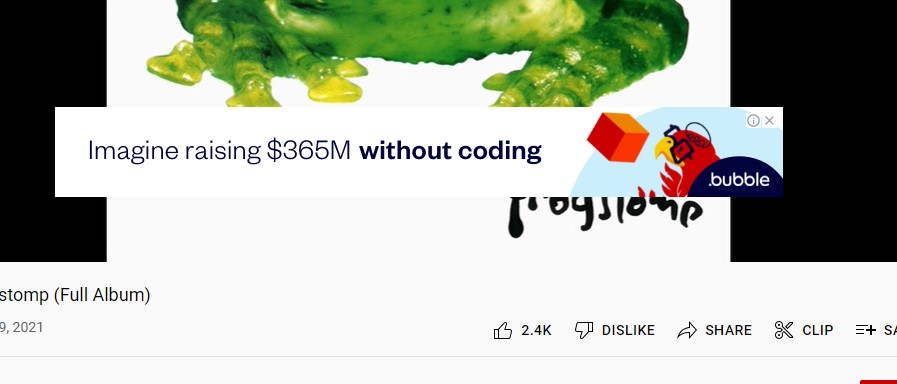I made this beat in FL Studio after getting tired of writing emails and was sort of inspired by some music I played for WCPO in their inbox and I thought about a graphic career and thought about how fucking easy FL STUDIO is it's offputtingly easy to do I know more about FL STUDIO than i do Photoshop so I was going to sketch beats and develop a sound ... it's basically random I'm not planning these songs out but maybe that will come in time.
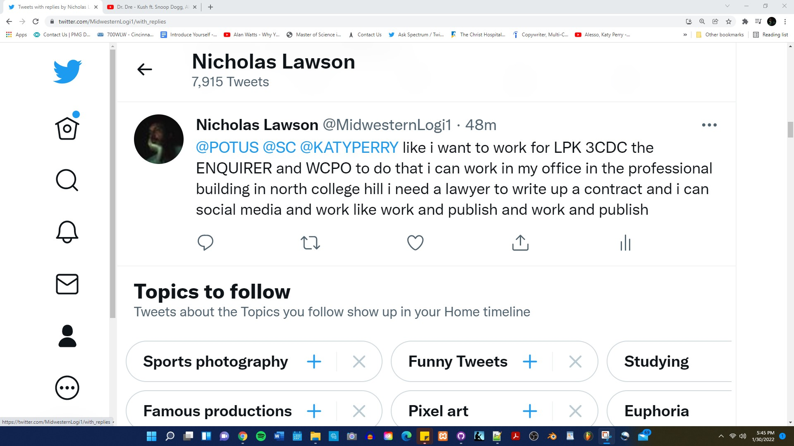that's like proctor and gamble's ethos to create dispsoble consumer products and stick to that but give people something to do giving people something to do as a business plan is VERY corporate you can pay me to give you something to do as an ethos as something to think about
go to a juice bar be like let me get a grape juice that be some good grape juice
guy at a restaurant orders grape juice they say the only have wine and the customer declines the drink and business history was made when it was clear we should drink port
Slushpile Journal by ACME : EPISODE ONE THE CORNHOLE TOURNAMENT THE DAY A PAIR OF HUSKIES FUCKING NEEDED SOME CASH SO THEY STARTED A CORNHOLE TOURNAMENT IN THE FRONT YARD OF THE APARTMENT AND CHARGED $75 A HEAD TO COMPETE NAW WE DID BETTER THAN THAT WE PLAYED THE FIRST GAME WE EVER PLAYED WHERE YOU TAKE A FAT ASS BEAN BAG AND TRHOW IT ACROSS THE YARD AND FURTHEST UNDERHAD TOSS FIRM FOOTED THROW WINS $150 and they pay $5 to play and we keep accounting and do honest business and fulfill all the requirements of the task at hand because we know if we are not honest our business will crumble like if you in business and you ain honest you probably fucked and need to talk to a priests
Disclaimer: For Best Use of this Website DO NOT CLOSE WINDOW if you really want to read this you have to keep your browser open so that you don't lose your progress in your reading ... it is a final design ... you can put in the effort to read this by keeping a browser window dedicated to it and not closing your software
Something that should be revisited, a true edifice of business and true to this day it's a marvelous spectacle of what happens when the government does artNicholas Lawson's Facebook Page
LINKIf you can make this work for you you can find a new line of work like if you can file the paperwork you can be up on the FBI like i'm this serious show me to my desk and you so raw wit it they know you're the man and they just take you to man land and give you your work desk man land a hell of a place man land just waiting for new men to show up like it men working in an office awaiting new hires from the perspective of someone that needs a job that would sound like a good idea i am stricken with poverty
Preston Nichols is a noteworthy figure for his speakings on fringe engineering projects noteworthy for only being able to trust his story outlandish story when you study him on youtube but terrific education very nuanced and intricate
One StoryA website that leaves youw with just what you need
Lyrical Insurrection it's a historical reference to a society i am a part of we are a mainstream society in a major city i am sufficiently impressed with Cincinnati's historical abilities
Electronic Copyright Office
TAX FORMS
Initial Public Offering Form
BookThe Gospel of the Return of Christ wsa my first inspired work it took me about a month to write and 4 years to do what i call editing whcih was weak on narrative changes and more vocabulary tweaks and subtle things I copywrote this story with the ELectronic Library of Congress and that is listed here you can find yourself involved in i don't know i just know i was thikning of writing my next book here in notepad so i can say i did something in notepad and Ducks,Newburry Port by Lucy Ellman is on my next to buy list i ain gonna read it but that won to me 1,000 pages in one sentence and here in this website you can find about 500 pages and i'm still writing i was going for ugliest website just a gnazzled grimlock crypto uglo ugly type ugly and what am i saying this book is about a man that is telepathy linked to a 300 foot tall computer and has to survive a psychiatric doctor looking back it's fiction it's like evidence of how i used to write
My work at Shelterhouse Evidene to me what i lose when I am not medicated if you just let me be wild more of you will survive ...
Something Perfect : I did do a perfect one but I think the short amount of content cheats you as a reader and i go verbose i present you with a lot of colors and i present you with a lot of style and i even produce narrative for you and this is an example this link here is an example of perfection like yes you do want a svelte content site for a business card but you people in business in advertising you make furniture and then you disrupt what artists make to raise your profile and it's annoying the bbc is government owned i might want government owned media and a department tha covers people like me and we sweetly in the sensation of the lins of time that unwind the rhymes of the skies whose place is in heaven and we are the builders of the people and the things that make the people and the people be people and people speak people into existence and we never stop talking
Mount Healthy Writing Test Pilot Program for Kindle
Rookie Year Poetry Collection published to Lulu.com Poetry Circa 2004
OH HIGH YO T Shirt for sale
Stand Up Poetry Special Recorded at the Walnut Hills Library
Short Term Resume
Comprehensive Resume except for last year
Slushpile Magzine by Nicholas Lawson
Nephlo. by Nicholas Lawson
Hand Coded Simplistic Design by Nicholas Lawson
Unmedicated Me by Nicholas Lawson
Work for a Previous Client Hakiym Shai'ir by Nicholas Lawson
Client Work for Khassa Selassie by Nicholas Lawson
Cincinnati Document #0 by Nicholas Lawson
Click to Download Open Source Pseudo Code Sandbox by Nicholas Lawson
Ghost wrote a book for a buy and bought him 50 copies figured i'd take mine off the back end ... by Nicholas lawson
Click to Download PDF of 11/13/20's Writing to the White House by Nicholas Lawson
Click to Download Open Source Poetry Book Starter Kit by Nicholas Lawson
Project Woosh Alpha Sketch by Nicholas Lawson
{kind=link}
Sketch of a Meme By Nicholas Lawson
{kind=link}
Sketch of a Meme Polished by Nicholas Lawson
{kind=link}
Your Archive of Twitter to November 1st
A Website Without an Index File
Parent Teacher Organization This is how you unionize the parents to get the school you want ...
Youth 2000 This is a Roman Catholic Ceremony that took place at the turn of the millenium
International Thespian Society This is something you can have you in your school to teach your kids drama
Gifted and Talented Education this is for your A Students
Congress Bundestag Youth Exchange ProgramThis is a journey your child can go on to experience a larger and smaller earth at the same time.
Odyssey of the Mind This is a game your young engineers can play with your young drama students
Young Americans This is an organization that would take over your school and transform what your children think is possible at school.
Interstudy This is a program that will put your college student in another country for a year
SDMM
Corproate Business Briefs at Score in Cincinnati a business counseling service
DMOZ The Typical Way You Would Encounter the Internet and Find Value in It Would be with a Website Directory
Valve New Employee Handbook Download
Materials Used
Dell Desktop Computer
28" LCD Monitor
Chrome Browser
Github
Logitech Web Cam
Spectrum Internet Service
Windows Desktop Operating System
Notepad++
Adobe Dreamweaver
HTML
CSS
Youtube
Snippet
Photoshop
Wacom Tablet
FL Studio
Bear Sterns BravoBear Sterns Bravo will be given an award for BEST WEBSITE IN THE WEBSITE CLASS WEBSITE WEBSITE AWARD from SLUSHPILE MAGAZINE
Author's Bio
the author of this work is Nicholas Lawson. He was born in North College HIll just outside of Cincinnati, Ohio. A different world than the city to be certain. He graduated Valedictorian of his high school class and went on to attend the university of cincinnati for 10 years with a year studying in London, England. He has been friends internationally with Kaz Elkholy for 20 years and we met in london and kept in touch online. My family is quite professional we all hold University degrees all six of us and we come from a very competent and hard working larger scope family that we are a part of. Our family tree from my perspective is one of professionalism and exploration of the job market. My sister works for Procter and Gamble and my brother works for a spin off of General Electric which is known as Syncrohny. Daniel is in the military and studies real estate as of recently. I live alone in an apartment in North College Hill and suffer from Bipolar Disorder which is treated with lithium and a few other drugs that make life hard creatively. It's weird having your creativity taken from you all I can write now is non fiction the fiction and generative part of my brain is shut down. I have plans of selling ads on this website and that's pretty much it. I have never had a website up for this long before and a lot of that has to do with github and their freemium hosting plan. I've been writing seriously since 2005 when i was 25 years old. I'm now 41 and unsure of what to make of life after all that I have been through.
Forward
The Gospel of the Return of Christ serves the purpose of being a take on what a mental health patient that is giving you problems is experiencing in the hospital. People that fight the hosptial are experiencing psychosis and when it comes to mental health there is really only one thing to do apply medication and give time to let the results set in. Psychology studies mental health but psychiatry has tools it can apply to mental health problems in the interest of curing them but you have to take your medication for it to work. I used to fight taking medication because i was an animal and hadn't matured into an adult yet. There was a decision i had to make to acquiesce and the Gospel of the Return of Christ is a comedy that is a psychosis in nature told from the perspective of an omniscient third person and it's my first novel. I have written since but nothing as complete as this and i edited it for 4 years nothing major just tweaking vocabulary to give it better status. I can't do this again not a creative work the price of being mentally healthy is that i lose my psychotic creative mind that gets me in trouble. This is the kind of trouble I would get in off medication and my animal side has a lot to do with the problems in my life. I am a high functioning patient of Talbert House and have been told numerous times i am their most intelligent client but at the same time that does not give me the right to avoid help if anything it makes it even more important because my imagination can lead to a host of problems i would have in life. My decision making is better on lithium than it would be without. I think that this book is a bonus to the mental health field and it's a farce the reason it is named the GOSPEL OF THE RETURN IF CHRIST is a joke on the fact that JESUS is typically in the mental health hospital. I have met jesus a couple times in the hospital and it's a note touching on the profound mania that can be found in the hospital. I would like to point out a mental health facility is a hospital it's a place you go to get treatment for brain related issues and we do our best to keep up wtih standards but if i can do something to add humor to the stigma of mental health i would like to do so.
Synopsis
The book is a comedy where no one gets hurt and it starts off at the north side tavern which is a short story to open the story it sets the tone of the novel and introduces some elements of the story. Then it cuts to Lucius being fired in dramatic fashion that he brought on himself it's his fault he is being mentally hospitalized and then in the hospital he realizes he's the dreamer and is telepathic in connection with a major computer that is being unveiled in downtown cincinnati and when he disrupts a presentation the entire world has to tind him on this planet and the doctor tries to kill him and he is resurected as a king to the behest of his parents.
Federal Copyright as I understand it
Type of Work: Text
Registration Number / Date: TXu001788907 / 2012-01-02
Application Title: Christ! The Book.
Title: Christ! The Book.
Description: Electronic file (eService)
Copyright Claimant: Nicholas Anthony Lawson, 1980- . Address: 6923 Mearl Ave, Cincinnati, OH, 45239, United States.
Date of Creation: 2011
Authorship on Application: Nicholas Anthony Lawson, 1980- ; Domicile: United States; Citizenship: United States. Authorship: text, editing.
Rights and Permissions: Linda Weaver, Le Modeln Inc., 7536 Market Street, Boardman, OH, 44512, United States, (330) 758-4417, lemodeln@aol.com
Names: Lawson, Nicholas Anthony, 1980-
Story Begin
The Gospel of the Return of Christ
authored
by Nicholas Lawson B.A.
to contact the Author Email = luciuspixel@outlook.com
Dedicated to MGK and Cleveland, OH whose courage as a performer brought out the best of me as an author.
Dedicated to Mac Miller and Pittsburgh, OH whose amazing talent gave me permission to shine as an author.
Dedicated to Keys and Baltimore, MD whose fire gave me something to burn with.
Dedicated to the Lyricists and Cincinnati, OH who without your firmament none of this would have been possible.
Dedicated to my devoted family who stuck by me throughout my entire ordeal that I like to humbly call my 20's.
Dedicated to my Grandmother Norma Reigle the last surviving member of her generation. May she live long and prosper.
This is very closely based on the true story of Lucius Pixel. You have not heard of this man and unless you read this you may never will, however, this essentially happened to Lucius Pixel and from this happening more will happen. Lucius Pixel experiences an exotic life and is continually experiencing an exotic life. He is anticipating wealth accompanying his rise to fame in both virtual and real worlds even though the wealth that he is anticipating may have less to do with currency and more to do with embracing a wealthy state of mind that suffices for him to establish himself as the preeminent scholar of understanding.
I am in control of my destiny and to an extent yours as well and I am working to ensure that beautiful things happen to this planet and if we do not do this then less than beautiful things will happen to this planet. I was created by the Goddess that Created me thirty one years ago. I did not create the Goddess. This universe was created to exist in and you are in it with me and we are together. We are here at this point in human history to entertain each other and develop a deeper understanding of the human psyche and the human condition. This reality is what we exist within and I am here with you watching, waiting, and writing. I love you more than you love yourself and hopefully you love me more than you love yourself. Do more in life and create expressions of your time as you spend your time wisely. Write more about your life and explore this language with your generation. Prepare to be astonished and overwhelmed as your Christ, namely me, takes the helm of this entire planet through a single website and prepares you for your destiny. You may want to cover your eyes but then you would never get to know what happened to the Christ, this Christ, that you see before in shining glory. You will never understand this author and even if you do you will never be more powerful than this author and even if you are you will never be this author and that is a fact among facts because all that this author has ever been is himself and he has been abused in every way possible and he still writes like his life is beautiful because it is an abused life of beauty. Enjoy and at least try not write a response email less than 15 pages in length with your thoughts about this creation that you see embedded in eternity before you.
Absorb this story and write about the place that it takes in your heart. Take the time to enjoy what I am sharing with you and as an author to a patron, write me back and send extensive letters detailing what you think this story is about and how you perceive it. Be a self taught literary scholar and start with my books for your subject of study and tell me what my hands are writing. I would love to know, and you as well.
This is entertaining for me, and please make it fun for you. This is a story based on actual events but since this story is being written glory is being created out of trauma, confusion, and abuse.
THE EIGHT BEATITUDES OF JESUS
Blessed are the poor in spirit, for theirs is the kingdom of heaven.
Blessed are they who mourn, for they shall be comforted.
Blessed are the meek, for they shall inherit the earth.
Blessed are they who hunger and thirst for righteousness, for they shall be satisfied. Blessed are the merciful, for they shall obtain mercy.
Blessed are the pure of heart, for they shall see God.
Blessed are the peacemakers, for they shall be called children of God.
Blessed are they who are persecuted for the sake of righteousness, for theirs is the kingdom of heaven.
Gospel of Saint Matthew 5:3 - 10
Chapter One ::: A Man Walks Off Stage
The North Side Tavern is where the most beautiful creatures in all of existence take the time to work serving elixirs and imbibements of the finest quality to the patrons of Cincinnati, Ohio. There was a buzzing crowd filling the tavern as people were sitting at the bar mingling and searching for phone numbers and free drinks alike. The stage was currently being manned by Lucius Pixel the Performer.
"Do you ever think about the future? Any of it? It’s just an idea until you realize that there are real people who just do not exist yet and that are going to exist and have wicked more powerful technology than we have and then this future for them will be as plain to them as ours is to us, no matter how amazing the future becomes it will always be patently normal to that generation which grew up accustomed to the amenities of their time period.
We have countless centuries of millenniums left to exist as humans but I will tell you this, there won't be a hotter author or poet than me in the centuries to come. So . . . you have to imagine for yourself what will our generation and every generation have in common with previous generations back to the origins of existence ... I shall tell you ... tis language. The way you phrase a sentence today could be the hottest sentence for decades if you say it correctly, however, what if the future is wack??? What if the hottest lines have already been told here at the origins of hip hop and rap and in the future we will only be listening to posers. I shall tell you this. I'm jumping bandwagons and rolling with the poets for my chance at attaining immortality. I see something in these poets today that I think Hip Hop will never catch up to. I think a few rap artists will be immortal but many poets will be. I want to be immortal and so I am telling ya, get on these mics and spit some inferno, push yourself in your own personal dialects. That being said, I need a beer." said the Christ-like Lucius Pixel getting down off the stage and off the mic.
Lucius walks out onto the deck and sits down in one of the North Side Tavern's iron lattice chairs that is actually kind of cold on the bum in the autumn. Saint Lucius looks around and sees a few people smoking long Misty Cigarettes and inspired by such activity he decides to feed his consciousness as he palms some reefer and breaks it up. A pleasant looking ebony man sits down next to Lucius the Relaxed and holds up a fine lookin cigar.
"Would you mind if I chip in?" says the ebony chap. "Not at all and might I add that is a most expensive looking cigarello." said the Ambient Lucius. "I like to smoke good on my birthday." said the ebony complexioned man.
Lucius then receives the blunt from the man of ebony and begins to stem his fingers into the leaf that surrounds the cut tobacco and begins to press in with a firmness that breaks the seal of the leaf. Then he brushes off the extraneous tobacco and starts up conversation with the resourceful individual who has sat down with him.
"So if you don't mind my asking, what happens to be your name?" asked the Lucius the Entertainer. "I am called Ibrihim." said the mysterious man who provided a luxurious cigar leaf.
"It's really is good to know someone else who happens to smoke the reefer around here. Sometimes I feel mostly alone with this habit that I have here in the City of C's." said Lucius the Friendly.
"Yes, well, this is a fairly dry city in terms of all that but I try to do what I can to keep the cortex lubricated. You are a poet, no?" said the resourced Ibrihim the Introduced.
"Well I happened to get on the microphone tonight." said Lucius the Celebrity.
"You should come out to a very special show known as the Lyrical Insurrection, it's a little something that I like to entertain people with. You would fit right in with your style of speech and I even bet you do have some poems, don't you?" said the Entertaining Ibrihim.
Lucius the Smoke had started the ceremony of sprinkling the herb into the leaf so that he could engage in rolling up the reefer cigar for the purposes of experiencing conscious freedom. There is a pattern of thought and language that rolls off the tongue when lucid on the reef. It is experienced like a beautiful tapestry of thought that occurs in dream like fashion when you are lifted on the reef.
"I would truly love to come out, but I really don't know if I am an Insurrection artist, and I was wondering if you could do the honors and roll this piece up so that we could have a collaborative effort on this kush." said Lucius the Team Player.
"That is not a problem at all." said the Problem Solving Ibrihim as he picks up the instrument of enjoyment and lifts it to his mouth where he rolls it magically with his lips and creates a perfect rolled piece of highnishnes.
"Would you let me see your flame?" asks the Enterprising Ibrihim.
Lucius the Giver hands over his lighter and Ibrihim the Annointed sparks it with all of the elegance and suave of a trained master of ceremonies. He takes three slow cool drags and passes it back to Lucius the Honest One.
The entire outdoor courtyard of the North Side Tavern is filled with humans. Lucius and Ibrihim the Patrons are back in a secluded corner just observing. Ibrihim the Third Eye Rebel is sitting and absorbing existence and Lucius the Beautiful Medusa takes the instrument of enlightenment and collects a few deep inhalations while he holds it in like a champ and manages to get about three hits before he passes it back to the equally lifted Ibrihim the Introspective.
Then Ibrihim the Philosopher asks Lucius the Relaxed, "What affect does the reefer have on you?"
Lucius the Thinker is ever relaxed as ever and just replies, "It feels like a niceness that you always forget about until it happens again. Normal life is like a cassette tape filled with distorted frequencies where being on kush is like living out your dreams in full DVD quality. You get all of the inspiration you were meant to have and I fall in love with existence every time I go out on a date with Mary Jane. It's like a magical ride to the ends of my imagination and it honestly feels like being in a waking dream. I love being alive man and in this life there are treats and kush is one of them. I do remember when this ish was illegal and you had to hide your habit but now that it's legal it honestly feels like we have been allowed to experience heaven. It's like they purposely made heaven illegal and I could tell there was a crime being committed because I could see law enforcement officers in action and they only show up when there is a lack of observance of the law occurring and yeah I guess I digress too often into the Jane but it honestly feels like the best part of the best part of life." elucidated Lucius the Explanation.
Ibrihim the Stunned just sat there looking at the blunt like the weed was talking to him. He rubbed his head with his hand and looked Lucius the Provider of Insight right in his eyes and intoned, "That was a hell of an answer, you want to hear mine? Fuck it I'll just tell you. I go into a place of homeostasis where my past future and present all harmonize and I just exist. The herb helps me just flat out exist and through flat out existing I absorb esoteric knowledge that I otherwise wouldn't pay attention to. I think thoughts that would otherwise not occur to me and I think about Islam and the reason I converted. I imagine what it's like to not exist and I don't know what to say. I'm the least afraid of Islam of anyone I know because I don't know why I am alive and imagine that Islam is as natural as this so maybe we have absolutely nothing to fear at all for any reason whatsoever. I imagine I am the bravest man you have ever met Mister Lucius. how do you feel about meeting a brave man?" intoned the Ibrihim of Cincinnati with profound depth of character.
Lucius very calmly sat there for a long second and then quipped with chime, "Well, honestly, when I meet a brave man I ask him to pass the fucking blunt because you have been holding it for about five minutes." said the Lucius the Character smiling down into the depths of corridor of friendship.
Ibrihim the Brave opened up his soul and burst into laughter and then proceeded to hand the blunt to Serene on the Scene Lucius. This Lucius looked at the now Holy Blunt and realized it still fucking had 3.5 quarters left to burn and then he smiled the kind of smile that cherubs practice in the mirror.
"Yo to the yo, a miracle has literally, literally, liiiitttterally just occurred. Yo, we been smoking on this cigar for damn near fifteen minutes and apparently you would think we just got sparked. We can start a religion on a miracle like this. For real. There is a culture that has a name and a holiday dedicated to some oil not burning out or some ish, maybe we could start an everlasting blunt religion whose purpose is to just puff puff pass until there is nothing left to pass, you feel me? " said the
Pontificatory Lucius.
"This blunt, this blunt right here, this blunt right here, this ... blunt ... right ... here ... I can already tell ... is the beginning of a new friendship, one in which we toast to the most and roast the soc's who stood in our way as we greased our lives with herbal remedies to eternal problems as it was just a story to be told as the pages unfolded and we molded our sentences with reckless ascension." said the Ascension of the Ibrihim.
"Daaaamn you are a poet! I really don't know what that means but it sounded smooth as lavender in the early spring. So, I will say that we are friends now, may I ask, what is this Lyrical Insurrection you speak of?" replied the First Born Lucius.
"Its my secret society." fluidly whispered the Great American Poet Ibrihim.
"The Lyrical Insurrection is a showcase of the talents and aspirations of the people that surround me. I'm the host of this carnival of depth that seeks to question religions, politics, law, and also seeks to capture the essence of heat. Who can bring it? You know what I mean? Who can bring the most infernist lines that get to the raw core of this English language that we speak? You think you know poetry and then you come to the Lyrical Insurrection and you hear some syllables you never thought you would hear before in combinations you never thought possible. I invite people from other cities to come and perform and travel with the show to other cities and basically its a party that I never leave or sleep on, hence the phrase ... secret ... society. " explained with fullness the Master of Lyrical Abstractness Ibrihim.
Lucius looks down. The blunt has burned halfway down and he swears either time has slowed the fuuuuuuck down or that literally a miracle was occurring in his hand, either way he passes the blunt over to the Illustrious Ibrihim.
Ibrihim accepts it slowly and then deliberately remains still, for a passing moment.
"Would you like to know why I approached?" inquires the Leaderous Ibrihim.
"You happened to see me plotting on a cigar." replied The Esoteric Lucius Pixel.
"Naw I ain like that. I observed your stage performance and just wanted to ask you with true sincerity if you would come and perform for my society. You have a true spark to you that I believe my audience would look up to and it's not a major arena but we have goals too and we have aspirations and from those aspirations there might be a place for you to inspire with us and to just be you and speak your mind with a freedom that is both empowering and beautiful." said the Most Elegant and Literate Ibrihim.
"Yeah man, I mean. I can perform at your show, not a problem. I'm actually a very talented person and tonight I just kind of talked off the cuff but I guess I am professionally deep in my steelo. I am professionally introspective to the extent that I improve humanity to the extent that a individual can with my delvenations into the human spirit and I think it's that depth, that honest delving into the nature of humanity that people truly look for and aspire to gravitate towards. Honestly, if I take up your offer and show up for your social gatherings I 'm going to need some extended time on the mic and since you recognize real talk ... I'll even make a demand for my first performance ... you gotta let me feature ... I have heard of your society and if I am going to show up I want to show up strong with a Lyrical introduction that does my style justice." said the Surpisingly Powerful Lucius
"Bet ... you do a feature in one and a point five months and its up to you bomb or blow up ... if you bomb just come back and rock it out in the minors until you get it right and if you blow up then maybe we can work you into a hosting position." said Social Eagle Ibrihim.
Lucius accepts the cigar back from the Society's Gift to Lyricism as Ibrihim and takes a big inhalation and then experiences a full rush of euphoric bliss.
"Oh man, yo , Ibrihim I just realized something ... I'm alive in a paradox. We should smile because we are alive in a paradox, yo. This happens from time to time, where I just sit there and experience fits of just existing and this kush brings it on. I would actually care much more about money and women if it weren't for kush and I think there is a connection in my mind because I'm supposed to find money for women and they get pissed when you don't do your job. Women want you to search for resources and I don't know why ... well I do it's because a woman is a weak creature, in a certain business respect. They are entities who no matter how deep they seem, always come around to the age of thirty where they realize they need resources to foster a youngling and honestly no matter how deep a woman may seem she is also professionally shallow. She will ask you about your worth and she will inquire about your potential to provide for them and Oh! Man! I am so out of all of that. Ibrihim, I'm so poor that I cannot afford to spend time with women and the time that I do get to spend with them they just pity me for being a poor author but herbal medicine burned provides for me something that a woman can never do ... provide peace of mind ... women can provide me with peace of my body ... but herb provides me with peace of mind ... I used to chase girls and ask for phone numbers and all of that until I wised up and started focusing on my authorship ... I can create essentially into forever and there is no limit to what I can create or how much of it I can create, which means that I can essentially create a tool of from my bare hands. My hands are worth more than money and jewels and I am just working on polishing my treasures. My hands have been to Europe and have been to eternally off the coast of Africa and my hands have been all over the surface of the electronic ecosystem and my hands have tapped on ASCII thousands of times and I would actually like some software that counts or tracks the number of times that I hit certain characters on the keyboard because I want to quantify my typing schedule. We could link it up to a website or something I don't know. I digress. I'm just vibin' right now and yo this kush is fluid. You know that feeling of euphoria it gives you. Yeah, I got that right now. I'm just sitting here chilling man. Thanks for the cigar I was going to use a bowl and corner burn it." said Lucius the Defensive Posturing Masculinist.
Lucius Fed Ex's the blunt back to the Emissary of All Things Chilled Ibrihim.
"Yo, my dude, let me get at that. I digg you man. You have something to say and you know how to say it. You are a little bit more unhygenic than I am, to be honest, but that's just scruff art. Yo, it's like the world started singing and then I started bringing my poetry for the world to absorb. You placed the game in the graces of the stages of ecstasy and that's why these words are coming out of me so eloquently because the weed has me believing I can see the seven seas inside the miracles I feel behind my eyes where my intellect has me try and derive the complacent connections that we all think about. I'm more than just a poet I've got something to think about like a sovereign nation that I can build for all time where my children raise their children and we bring our children to the stage and you know I'll bring mine. We surrender to the fact that we know what God looks like and inside this reality is my beautiful poetry and that poetry found me and I am defining what poetry means to me as I stylize my style while I walk the longest mile, I'd do anything to make an audience smile. Now smoke this if you wish." said The Poetical Ibrihim with an abrupt suddenness.
"Yo, lets go for a walk." said The Inspired Lucius.
Lucius the Now Known and Ibrihim the Has Been Known take the time to walk into the North Side Tavern. Lucius the Elevated sits back and notices that thankfully no one seems to care that they are burning. Well as he is sitting there he looks across the room and he can see her, the Bartendress. He wants to talk to her and rekindle the past but the campfire has been removed and there is nothing to rekindle. When a woman changes your life sometimes your life stops and you stay in place playing games with artistic creations so that you can keep the memory of perfection for just a little bit longer and then you see the reality and internally you have to keep the door closed as there is nothing to say because she is married and in that marriage there is a promise to be with someone else and friendship would only rekindle ridiculous thoughts of only a month when more love was made than one could handle and in that love one found his manhood and then he proposed awkwardly in a way that angered her but he got down on one knee for her and what's wrong with marrying the woman that gave you the most intense feeling you ever felt isn't that how rock stars roll where you meet the one that meets your definition of perfection and then you let it all go and when it goes wrong you just stop, like Lucius the Fool of the City did.
"Yo, hit this." said the Ibrihim the Pace Setter.
Lucius, pulls the cigarillo from the hands of Ibrihim and pulls it not once, not twice, not three times, not four times, but five times. He just lets the fumes of the wafting smoke fall into his lungs where chemical reactions take place and where his body comes into contact with the feelings associated with the smoke that unless you can hold it in your throat will make your choke.
"Yo, this is the best weed I ever smoked." said Ibrihim the Muhajadin of the Mind and The Interrupter of Preponderant Moments.
"I love it because I will not remember this five minutes from now and you will not remember this five minutes from now but I had the chance to speak my peace. I told one person. Now I can move on and fashion myself a life with me at the center of it instead of someone else. Did you hear about that computer downtown?" said Lucius the Experiencier of Depth.
"THE COMPUTER! OHIO! I cannot wait to get into the line to drop my lines into that database. I want the future to know I exist... I want to make a beat in a couple hours and play it for the whole city. You know they have a special HD station dedicated to the computer and everyone has access to all of the files on that computer and every single program is custom fitted for that computer and they are making it so that the software is unique to the giant three hundred foot screen itself. " said the Futuristically Appreciative Ibrihim.
"Yo that computer ... let us stop for a moment and let me hit that green lantern and light my traffic light up ... but seriously tomorrow that computer is unveiled and in its unveiling we enter a new age of mankind." said Lucius the Prophet.
"...or we just have a dope ass computer to use in our home town" said Ibrihim the Downplayer.
"No foe, we have a wonder of the world with us, that computer is a symbol of generations of thinkers spending their time applying logic to the problem of computation. Here in Cincinnati we have the greatest computer that the world has ever known and from that computer great things are going happen. That computer is going to be in place for hundreds of years and every generation of society is going to make their mark on it. It's going to be like the Sistine Chapel only interactive and with a memory. Imagine if the Mona Lisa had had hundreds of years of people leaving comments on it's facade and imagine what a treasure trove that would be for us today and tomorrow and the next day. That computer is a treasure box and it is empty and requires the combined efforts of the contented and the content managers alike to fill it with value like the book of astronomy that it is. That computer that is being unveiled downtown is essentially pure potential unachieved at this present moment that requires attention to be worth it's weight in gold, It's like a massive memory that has yet to be remembered for being created. When we start working on it and saving files and customizing it and adding value to it over time much will be achieved if we want to believe that. That thing has one quintabyte of hard drive space and is upgradeable to one thousand twenty four quints. It is going to be capable of storing documentaries, photographs, entire databases and its all going to be stored right here. I'm sorry but this is unfathomable to me right now and all I know is that if I want to be an immortal I have to get something astounding on that machine As Soon As Possible or with time because I want to be remembered and that computer is my ticket to being remembered. It's like a time machine in that it stores information over time and the future can then go back and search back through time at our interactions and our use of that computer. It is a symbol of everything that ever meant anything to anyone that ever cared about peace and science and engineering and content. " said Lucius the Arrived.
"Stop right there. Keep getting stung by that green hornet. Yo man I am higher than I have ever been in my entire life. You just uplifted my entire consciousness to a place that I didn't think it could go. It's like you have an intellect and a passion that I have never encountered before and honestly that is refreshing. I think that deeply but I think about Hip Hop and I can tell you represent your people to the fullest and typically I believe that your people are the most pail that have ever existed, honestly but I can talk to you about Hip Hop if you would want and you can see my passion?" said Ibrihim the Prepared.
"Talk about both, how are my people the most evil ever and what do you know about Hip Hop?" said Lucius the Unprepared.
Ibrihim becomes serenely serious for a pause and his eyes start to glow slightly crimson as he takes on his immortal persona and he begins to quote the following as he inhales the green ether from the glowing kushtal that is miraculously only half way what it was.
"First you have to know what Hip Hop stands for ... it stands for Heaven Includes People Holding Overstanding Principles. Can you digg that?" said Ibrihim the Pneumonic Device That Keeps Pnemonio at Bay.
Nicholas the Law's Son replied by saying "Yo, I can dig it."
"I was going to speak heavily on the topic of Hip-Hop but suddenly I am feeling light." said the Ibrihim of North Side.
"Yo I can understand the flow of conversation changes with every moment." said Lucius the Knowing.
Ibrihim the Manager of the Fed Ex System passes the blunt that was with finality almost out and handed it to Lucius the Two Three Zoned with a pick and roll where he placed his thumb and forefinger with the burning kush stick inside it to Lucius's thumb and he rolled it off onto Lucius's thumb and forefinger. Lucius the Receiver smiled and took a final hit and then Ibrihim the Majestic said as follows,
"We don't currently have a European in our ranks but I think you would have some messages that would resonate with what we are trying to do. I could even find you some work with the Hip Hop Congress, I can just tell that you are who I am looking for in this position that I have in mind. Basically you will always be in the line up and you just go up when I call you and drop fusion bombs all night long as I craft a show for Cincinnati and now, our, society. " said Ibrihim the Social Organizer.
"Is there going to be a crowd?" said Lucius the Being.
"There is going to be a crowd! It's going to be at the Greenwich every Sunday night and the ladies are always heavily present." said Ibrihim the Cool.
"I'm in , let me get your seven dash and we can talk. What we gonna do now that the kush is gone?" said Lucius the Accepted.
"Yo, you got a ride?" asked Ibrihim the Momentarily Restless.
"Yeah I got a Mazda Zick around the corner." said Lucius the Pilot.
"Well lets get downtown and check out the scene. All things considered this is interesting especially since you just gave me something very special that resonates very deeply with people I have now a definitive need to speak with. Yo, on the real, we will see how real you are. I will test you out. If you are who I think you are, and if my senses are right. This could be cool for you, in ways you are not ready to imagine." said Ibrihim the Baker.
"I have been taking tests my whole life and have not failed one yet that I am aware of in this world of opinions that I absorb." said Lucius the Passed the Test. "Nice." said Ibrihim the Speaker of A Single Word.
So with that Lucius and Ibrihim stood up and Lucius led the way through the back lot of the Northside Tavern to where he was keeping his car on the street. Lucius the Real was so fucking lifted that all he could manage to think was that Earth was round and Ibrihim the Distiller of Importance was so high that all he could think about was that the green was green and they both felt like their minds were beyond were not where they typically are.
The two of them get into the golden colored Mazda Sixtee that on a number of occasions Lucius the Symbologist had thought of those numbers as standing for six two sixes which would be six six six, so essentially he was rolling in the ride with the Biblical and he acted like everyone knew, like he was in a biblically marked car and the wheels would fall off before he would stop riding in this piece of machinery. Ibrihim the Annointed closed his door and Lucius the As Yet Unannointed was sitting next to him ...
"Downtown?" said Lucius the Ready.
"Downtown." said Ibrihim the Celebrity.
So { Peter Gabriel } from this point, Lucius gets in his ride thinking of the fact that the sky elevates forever and Ibrihim the Thoughtful was thinking about the fact that his member would fit inside every member accepter on earth each one would love it and both of their minds were blown and Lucius the Blown just turned the key in the ignition and started on his way. He pulled forward and then he pulled back and then he pulled forward again so that he could get out of his spot and onto the road he went. Lucius in Motion reached down and turned on WIZF because he knew that Ibrihim the Chiiiilin wouldn't put up with that Q102, KISS107, WEBN shit and then a radio wave said ...
"Yo every man woman and adult is downtown right now celebrating the unveiling of the most massive computer on earth. We got people form China, Australia and South America and all the other continents you can think of downtown right now and all are just in awe. You need to get downtown and bring your green , it helps it all settle in better." said Russ Pahr at WIZF.
Lucius the Dude was turning right on Central Parkway and Ibrihim the Dude was leaned back chillin. They make it downtown for a chance to look around and Lucius the Adult was already realizing that he was going to be late for work in the morning but he felt vested so why worry? Well Lucius uses his key card from LPK to get a parking space right downtown and Ibrihim the Impressed just looks at him.
"You work for LPK?" said Ibrihim the Interested. "Yeah. Impressive, huh?" said Lucius the Subdued But Confident.
"They charge like $150 and hour for their services and I know because I looked into having them do a logo for the Hip Hop Congress." said Ibrihim the Businessman.
"Well I'm one of the interactive designers and I have a presentation tomorrow for Proctor and Gamble." said Lucius the Corporation.
"They don't mind that you smoke do you or that you might not be in on time?" said Ibrihim the Curious.
"With these festivities they are going to be very complimenting that I even took the time to celebrate something worth celebrating." said Lucius the Employed.
Lucius parked his car and got out of it like he was in a Dr. Dre | Kush | music video and time did seem like it stopped on him and then like Akon does Ibrihim got out on his side and the two of them just stood there. There were people everywhere on the street and everyone had a joint it seemed and basically it was smoke out city and reaaaaaaaaaaaaaaaally fucking quiet....really really crowded ...and really really really contemplatively quiet.
"I feel like if I talk too much ill get taken in." said Lucius the Solemn Observer.
"I've been arrested for talking too much, it god awful annoying." said Ibrihim the Sharer of Personal History.
"Damn for real?" said Lucius the Sorrowful. "Yeah." said Ibrihim the Burning.
Lucius the Passive didn't reply and Ibrihim the Wronged appreciated not revisiting a memory that only solidified his belief in the evil of the European race. They started to walk around downtown and they felt like they were in Columbus, Ohio, in their own city, Cincinnati was actually anticipating a massive insurgence of immigrants from other cities just wanting to be around Appliconical as it was called in the media. Some of the square broadcasters had trouble pronouncing it but Apple said that they wanted a name that would never be forgotten as this was to be an immortal computer one that would last through the ages like the Pyramids and the Great Wall of China. Lucius the Illustrious had often wondered about the Pyramids and if the intent was to create something that would last for eternally long, were these items built to stand the test of time over and over and over and when does the test of time really end becasue when you fail the test of time, you cease to be conscious enough to ralize you are a failure which means you should be cool with your path in life because while you are passing the test of time well then you are cool but should you fail well at that point you are no longer in the class if you can feel me so smile you are either happy and you know it or you just do not know what you do not know.
Well Lucius was posted up with Ibrihim and just surveying the downtown territory and then they turned a corner and there it was. They came upon the computer. It was a giant bronze encumbrance that went Three Hundred feet into the air. It was a computer that was as tall as the 5|3rd building and there were just people camped out meditating and doing yoga and observing a day of silence in anticipation of an eternal future of neutral passivity.
"We shall be remembered…" said Ibrihim the Father.
"Yes my new friend. I never thought I would see this many people downtown. I can't see a space where there aren't people." said Lucius the Social.
"The city council had dictated that this would be a time of reverence and there were multiple radio spots and television ads touting this as a time of somber remembrance of the past leading up to a new era in civilization. I mean when you really think about it wouldn't human civilization yearn for moments like this to be like this from time to time, not necessarily all of the time but aren't there supposed to be moments when earth coalesces into it's finest form?" said Ibrihim the Noted.
"I agree. we should say some prayers or just be reverent." said Lucius the Suddenly Spiritual.
Ibrihim the Prepared smiled.
"You pray?" said Ibrihim the Prayer.
"Yeah I pray." said Lucius the Liar.
"You ever zdicker?" said Ibrihim the Peacefuly Unknowing of Lucius's Lie
"Don't even know what it is." said Lucius said Lucius the Complacent
"It’s a Islamic tradition of chant." said Ibrihim the Spirited.
With the computer in sight Lucius the Earthling and Ibrihim the Enchanted bowed down on the ground and Ibrihim the Real starts to chant in the most eloquent beautiful chants that Lucius the Void had ever heard. Lucius the Realist does not chime in but other people start to pay attention to Ibrihim the Prepared and Lucius the Weak and some other Muslims come over and bow down with Lucius the Goes Along With Whatever and Ibrihim the Actually Believes In Something and Lucius the Faulty Soul is kind of nervous but Ibrihim the Righteous Leader is feeling immortal and immortals do immortal things. Well the tones that Ibrihim the Song is experiencing in his zdicker are beyond what he has ever experienced. He is channeling the collective subconsciousness of the experience and Lucius the Participant finds himself entering into a prayer set and the two of them along with everyone else just feel enlightened and then Ibrihim the Trained finishes his chant and he stands up. Lucius the Peaceful For No Reason follows suit and Angelic Ibrihim's eyes are glowing those immortal colors again and everyone seems to feel the energy of the moment which was summed up perfectly in Glowing Ibrihim's chant and the collective prayers of all that were following.
No one says a word and Ibrihim the Angered just looks up at the computer and curses the fact that it took something that great in effort to bring people together in harmony.
Lucius the Awed sees the computer and sees a marvel of technology that would encompass the full abilities of an entire planet and he sees a work of great accomplishment as being a sign that peace is ready. Lucius the Thinker was thinking to himself that peace is something you work for through art and that with the greatest work of art preparing itself for the greatest works of art that a great peace would be found in this time period. It may last as long as it lasts which may be forever but that is up to every generation that follows to enshrine to occur if it is to happen and that computer may hold it together for aeons and those aeons will be filled with the greatest introspection that the world has ever known if it is worked for and deserved.
Ibrihim the Insrrectionist hands Lucius the Beautiful Troublemaker a blunt that he didn't see him roll and Lucius the Smile sparks up.
Chapter Two ::: Getting Canned Can Really Put You In A Jam
Lucius is walking into work sober as a puppy first born waiting to tell everyone about this man named Ibrihim that he has met in the interest of promoting his show and producing some material for his Society. He walks up to his secretary and says a little hello. She doesn't say much in return which is strange because usually she asks him about his morning. Lucius then walks over to his cubicle and attempts to sign in and to his surprise has no luck after several attempts, a morose feelings starts to seep into Lucius, computers are something that are highly predictable and in that Lucius knows that someone wants to tell him something about his computer, maybe he got a promotion and this is how they inform him? Lucius walks over to his boss's office and the boss waves him in with a smile on his face.
Lucius' boss' name is Donald Warner. Donald is very cordial and studied English Literature at Harvard University. He is a very well educated man with great leadership qualities and is very diplomatic.
"Lucius I need to speak with you." said Donald with the sterness of an employer in power.
"Can you believe that computer outside?" said Lucius searching for insight into his situation.
"We can talk about that in a bit." said Donald dismissively.
Lucius knew immediately what being canned feels like. Apparently it feels like this.
"Lucius, what is http://www.reddit.com?"
"It's the place that I find my inspiration and interact with other designers in other cities." said Lucius still not knowing what the problem is.
"Lucius what is r/girlsgonewild?" said Donald.
"That's a subreddit." said Lucius knowing what said subreddit is but also knowing he does not attend such place.
"What is r/4chan?" said Donald building up his case. "That is another subreddit." said Lucius feeling queasy.
"We audited your computer and found that you are subscribed to these quote unquote subreddits and we are professionally and personally disappointed in your connection to these sites. You posted a picture of my wife on r/girlsgonewild from the office party and then she found herself referenced in several memes that we find disheartening. My wife is not a doe with a slut condition and I don't know how her photograph was involved in this smut but you are to blame and for that and I can't work with you anymore. We can't work with you anymore at this office. Just the utter level of disrespect that you would show to your colleagues is beyond troubling, Lucius what are you doing?" said Donald wondering much about Lucius at this point. "I'm sparking a little pinner." said Lucius making the most of a bad situation.
"Lucius you know there is no smoking on these premises, especially not that." said Donald who thought about how he had never smoked pinners in his entire life.
"I mean fuck it right? The world is on the brink of total peace and you are fucking with my life over some shit that has nothing to do with me. I mean I have one account for my reddit life and what I look at, at home is my own business and you just fire me." said Lucius knowing that he did not post those photographs but not caring enough about this job to keep this job.
"We are not firing you, we are placing you on full leave." said Donald thinking about the fact that he really doesn't like Lucius much to begin with.
"Will I be getting paid for my time off?" said Lucius thinking that m a y b e e e e it was him on that one night he can't quite remember.
"No. No you will not." said Donald not finding this situation humorous at all.
"Then I'm fired and its bullshit because you need me right now to finish my assignment and you didn't listen to me about starting the newspaper from the future concept anyways and then you never took me seriously and I was just an over aged joke to you and in that joke no one was laughing." said Lucius trying to defend himself weakly.
"Lucius we have to ask you to leave immediately and we will call you when we require your services again." said Donald doing the best he could not to smile.
"Fine." said Lucius coping with the situation and boiling with anger over some photos.
Lucius takes an inhalation toke on his pinner and on his way out he walks over and picks up a computer printer and chucks it at Donald until he ducks. He flat out throws an Epson and it hits the window and breaks into pieces. Then he picks up some trophies that he had helped win and starts throwing them at the window with every intention of breaking the window. It's starting to crack. Donald looks scared as shit and runs out of the room and Lucius just starts owning shit in that office and destroys the computer the whole while he is thinking the most serene thoughts of immortality and about how when you fire someone you damn well better make sure you have a legitimate reason and how is he supposed to know who put that photo online it was a company disk of photos that was passed out and just because he has a link to the subreddit doesn't mean shit. Lucius is laying on the ground now just staring at the ceiling and he knows some shit is going down but since it's a professional office he figures it will all go better than expected in light of all things considered.
Donald leans over him.
"You fuck. Have fun at the looney bin." said Donald.
"What?" said Lucius inwardly thinking that life if was a dream life, why couldn't it be a nightmare, which starts at a point like ... this.
"We called the hospital because there is something wrong with you and we will be pressing charges upon your release. You overweight... over aged... over educated... piece of shit." said Donald with a slowness of speech that for once actually caused Donald to catch Lucius's attention.
"I did what I did, and you ain right. The hospital will be nice, maybe I will meet a nice woman." said Lucius completely in the wrong but trying to salvage some form of something.
Lucius is plainly laying on the ground just serenly lifted, he was going to wait until that evening when the festivities started and the Black Eyed Peas were going to change their name to the Black Eyed Peace in honor of the celebration and he was going to celebrate with them. He had heard rumors that there was going to be a flash mob dance but he wasn't sure. Apparently the Cincinnati Ballet was going to perform a futuristic contemporary ancient swan minuet at the unveiling of the interface and now it looks like he is apparently going to have to change his plans.
"Lucius you could have just been strange now you have to be a criminal on top of it." said Donald thinking about how wrong he had been upon a first professional interest in this man.
There was a small gathering of people outside the office and they were laughing their asses off at Lucius, like LPK needs to worry about a messy office, they have the funds to clean up anything and it's just funny to most people to see someone with talent fuck up and be a fuck up and live a fucked up life. To sit back and watch a serious talent rising through the ranks maybe a little bit too quickly and then to just fall flat on their face is funny to people.
Lucius was just laying their horizontal staring at people looking like they were walking on the sky and then he watched them coming for him in slow motion. There were four men dressed in white coming for him with a straight jacket in hand. Donald backed up and said "Goodbye Lucius, you fat fuck." and then the men in white came in and held Lucius down while he smoked his reefer one last time before it was taken from him. There were two officers as well and they were taking police photos for the municipal records on Facebook and Lucius the Strange was eased into a jacket rather unceremoniously and then they picked him up and and started walking him out of the office.
One person was crying. One person felt sad. One person felt like the whole experience was bullshit because Mary knew that Lucius was forced to use a computer to do business with and three dimensions = so doing felt betrayed by that which meant the most to him. She knew that Lucius took his job more seriously than anyone else and in doing so he was always under a lot of stress to perform to the Design Arts Archtecture Planning levels of prowess that he knew he possessed plus the liberal arts years of absorbing rhetorical linguistica. She just stood there crying while fifteen people were laughing their asses off at a man that was talented but broken.
Lucius was wrapped in restraints and was falling victim to his own behavior. He could have just been fired and let that be that but no he went bananas and in going bananas he opened himself up to this situation. You would think the weed would have calmed him down but apparently he enjoyed his psychotic behavior and he thought if there was ever a time to lose your mind it was when getting fired and he just took it to a place that he probably shouldn't have taken it but he did take it where he did and that is just what it is.
The ambulance that Lucius was placed in had a stretcher in it. The clerks placed Lucius on the stretcher and then injected him with serum that would put him to sleep.
Lucius said "Hey! Whats in the needle?" groggily as it set in quite quickly.
Lucius started dreaming immediately upon the injection as the lidocaine which went straight into his blood stream and worked its way to his brain where he lost consciousness and in that loss of consciousness Lucius the Reject started dreaming.
He saw a dream that was beyond beautiful as his different layers of consciousness began to overlap and take form. It was his dream that would be the dream of a million dreams and in that dream he could see the future speaking to him.
"Lucius, take heart. All that seems lost is won. All that seems won is lost. Welcome to your freedom." said a voice.
Then Lucius was taken through a concept. He saw himself as a foreman of a foundry who produced the color purple and it was his job to reinvigorate the purple business and his first thought was that they needed a fundraiser and in that fundraiser there was a website calledhttp://www.kickstarter.com that aided in the arts and he saw this factory cutting a deal with artists offering purple at a discount to try and bring it back into serious fashion so that business would pick up.
Then Lucius woke up and was staring at a television that was attached to a corner in the room. Lucius gauged his situation and he saw himself in four point restraints and then he just laughed. LOL O LOL O LOL O LOL O LOL O LOL O LOL O LOL O LOL O LOL O LOL O LOL O L L L L L LOL O LOL O L L LOL LOL O LOL O L LOL O LOL LOL LOL O L LOL L. Doctors came in to see what he thought was so dilusionalistically funny.
"This, this is funny, that you would think I am crazy in a world changing so fast that sanity finds it hard to keep up. You don't know what led up to my outburst, you don't know Donald Warner that passive aggressive supposed leader who avoided every moment that I brought up that was strange. He was weak and he wasn't even a boss for real he just kind of came in and decided he could tell me what to do, even though I was older than him and was at LPK longer than him. He was unoriginal but very literate and could write like nobodies business and we were friends off the clock and enemies on the clock because he didn't let me bring him the kind of business that he knew I could bring." said Lucius the Now Sanitized.
"Lucius we believe you are suffering from mental illness syndrome." said a random unknown untrusted doctor.
"Are you going to let me go?" said Lucius not really knowing how this situation would pan out for him or what psychiatric hospitals did to people or under what conditions people were allowed to leave these places.
"If you are calm." said the doctors thinking that Lucius the Stuck meant the restraints.
"I am calm." said Lucius the Psych realizing the doctors thought that he was referring to the restraints.
An orderly came in and loosened the straps of the restraints and Lucius the Kidnapped sat up and rubbed his wrists. He thought to himself that even though he is in a psychiatric unit it's not the strangest day of his life. That would be the day that he was drunk and blacked out and woke up in London, England with a crepe in his right pocket and a gun in his left. He was studying at the University and all he knows is that he either got away with or it didn't happen because that gun was missing three bullets. Crazy shit.
Well, now, Lucius is walking around the hospital and he makes his way from room to room in order to get a feel for what these new surroundings are. It's not like he didn't think there would be consequences to his actions it's just that he didn't think the consequences would be this interesting. He figured he would be out in a couple hours ... it's okay to get angry isn't it? Some people experience intense emotions and some people just are batshit capable people, you probably know a few yourself.
Looking around the layout is simple enough there are main hallway doors lining it up and down leading to bedrooms and there is a room for watching television at the end of the way and a small cafeteria on the right and behind him is the most beautiful sight he has ever seen, The Exit.
A patient walks up to him and taps him directly on the chest. Lucius just looks at the short funny looking creature in a pink gown and thinks to himself "I went crazy. This person is."
"Yeah?" said Lucius further into his thoughts about this creature.
"What color is Thursday?" said the man most sincerely solidifying Lucius's belief immediately there are multiple levels of sanity.
Lucius just stood there and then in a very peaceful calm manner spoke.
"Chartreuse. Thursday is typically a very subtle shade of chartreuse." replied the Inwardly Hostile but Outwardly Shepherding Lucius.
The man smiled and took off running in the opposite direction screaming "CHARTREUSE!" with a very maniacal style that implied Lucius had provided him with his own momentary personal holy grail.
Lucius starts calmly surveying his surroundings and thinking about his predicament. He doesn't say anything to anyone he just walks around and absorbs the sensations of being in this unfortunate place and he sees a certain someone in the back on the phone screaming into it and talking about something having to do with wanting absolutely zero meat products on their food. Lucius walks closer out of amused curiosity and hears the following.
"Look ... you have to understand you FUCKING carnivore I don't want any bloody bony flesh products on my meal. I have told you politely and I don't know how many times that your fucking flesh covered, dead carcass, mucoid, debilitating to my homeostatic state has appeared on my plate and I am ordering you as I am the supreme vegan that you will discontinue feeding me any and all and every caloric particle of flesh on my plate and from this phone call on you will only serve me fruit and vegetables and nuts and seeds and that is all the fuck you are going to serve me on my plate. Do you fucking understand me? This is bullshit ... I don't even want to be here and I am just sick and tired of this treatment, hello? hello?" said the short powerful man.
Lucius takes a look at this man after his own heart and decides that he looks like a normal enough Aferican who just doesn't want to chew on something that died a week ago. Lucius had been vegan for about two weeks when it occurred to him that rotting dead carcas tissue may not actually be the most healthy caloric item to place in your body as there may in fact be evolutionary defenses embedded within the dead carcass tissue and that an all knowing Mother Nature may ostensibly on some level actually punish carnivorous behavior on some level but that since he learned about veganism from his mentor he decided that since he wasn't on television producing veganism, he wasn't spearheading it in his life as the dead carcus tissue did fit between his teeth a certain way. Any day you find yourself chewing on dead carcass tissue that is not considered a winning moment. Winning is keeping your karma in the best position possible and through devouring something that at one point itself had karma, well in that moment, you may be ostensibly inheriting a massive amount of negative karma. You honestly cannot defend the devouring of eating carcass tissue. You can do it but you cannot defend it. You can ignore your behavior but you cannot explain away what you are doing. If you have the ability to live and let live you should honestly do so because that is best for the equity of life on this highly marble shaped planet type item floating in the cosmos. Winners are raw food veganists and you can determine where you stand in the world of karma differentiating yourself morally downward from a karmically perfectionist diet. The most karmically perfect of us is of the raw food vegan. Dietary morality is a very real thing and just because you do not personally care about your own moral upkeep does not in fact mean that you are making moral decisions. It is not okay to be amoral and atrophying morally. Working against the definition of civilized behavior is not karmically sound. Civilization needs to be consistently grooming itself and perfecting its social ceremonies and honestly the only way you can interpret consuming something that used to love life as much as you do out of convenience is honestly abhorring and I ate a steak burrito bowl from Chipotle's the other day so morally I am as bankrupt as anyone but I still defend raw food veganists for it is good habit to defend those that have higher morals than yourself even though you may be of the most base creatures on the planet. If you know someone has more positive karma than you that are of a positive nature you just do yourself a favor by knowing they are better humans than you and defending them for what they are while you wage your own battle with your habits and predispositions in this strange world we call earth.
"Yo, are you okay?" said Lucius the Caring wanting to hear a "Yes."
"Who the fuck is you?" said the man not replying as Lucius the Now Careful had expected.
"I'm Lucius" said Lucius the Supreme Authority on All Things Lucius.
"You're the fuck they had in four point restraints, It's fucking nice to meet you , you European, invading, war mongering, colonizing, mouse clicking, overweight, awkward piece of fecal matter." said the man unknowingly ingratiating himself to Lucius the Insulted.
Lucius the Stricken burst with laughter.
"You are my new favorite person." said Lucius the Strange Befriended.
"I'm going to shove a carrot up your asshole when I get a chance." said the man
who then walked away leaving Lucius thinking about the safety of his anus. Lucius thought for a second about what it would be like to have a carrot rammed succinctly into his anus and thought that it would be better if it just didn't happen. He probably didn't mean it but just being around a raw food vegan is comforting even if he is batshit crazy but cool.
Lucius the Athletic drops to the ground and starts doing a couple pushups. Why not? It’s a free country. And he gets in about 15 reps before he craps out. Fat fucks need to work hard to not be fat fucks so that fat fucks can drop and give 50 instead of 15.
Well Lucius the Fat Fuck walks into the cafeteria and he sees that the television is available for remote controlling. He looks up and turns on the TV. There is literally nothing to do in this hospital and so he cops a squat and figures he will just think about his situation before he talks to a nurse. He is truly surprised that no one has spoken to him but there are about a dozen people walking around and honestly Lucius the Participant of the Crowd does not really feel like caring he just came out of four point restraints and was called evil by a vegan Aferican and just too much is happening all at once so he turns on the television to just zone and apparently there are some BET fans in this hospital because the first thing that he sees is Terrence from 106 and Park on television and he is in the process of introducing Nicki Minaj as a guest on the show.
To be quite honest Lucius thinks to himself, her best track was Warning and the accompanying YouTube Video was the hottest Lucius had ever seen of the female gangster hip hop artistic vocal percussive variety. As a Minaj fan Lucius decides that at least one good thing is coming from all of this. He gets to see the new Nicki Minaj video.
So he sits back and Nicki comes out with tie dyed hair and a giant spoon wrapped around her body and she is holding a giant purple fork in her other hand. She is smiling that priceless smile like a post-modern Audrey Hepburn surrounded by the Breakfast at Tiffany Party 24/7 who lives a life filled with the adoration of a nation ready to watch her pop that pussy. Lucius is enjoying the show and Terrence is letting the world know how real all of this is and that is case you are wondering ... it's so so real. Well Nicki is talking about how she met little Wayne because she absolutely LOVES talking about how she met little Wayne. She thinks it's a cute story to tell and it doesn't matter how many times she tells it she just keeps embellishing on the facts as she gave up telling the truth years ago about the matter. Apparently this time Nicki met Little Wayne in a recording studio in Antarctica when he saw her across the room and he went up to her and asked her if she wanted to play his electric guitar. She apparently said only if he would help her make a music video where she got to bump her bum against his jeans and helped her dress like a futuristic oil painting everywhere she went. As the story goes he agreed and then she picked up his electric guitar that he kept with him everywhere he went, like it was his chain, and she started playing "Stairway to Heaven" because she was classically trained at Julliard in electric guitar riffage and when Wayne heard her spit that smooth Jamaican Queens or Queens Jamaican or rather just that Queen spit he looked her right in the eye and said ... baby will you join Young Money... it was love at first sight according to Minaj and she is gushing on television and then she mentions how the first time she met Drake he was lifting weights in a Gold's Gym and Nicki was doing pull ups and he just walks up to her and he asks her 'who the fuck are you?' and she was offended at first but then when he explained that no one ever helped him, she relented and helped him get his recording contract with Cash Money Records so that Young Money could eventually grow old together. Minaj started crying on television and her Opai eyeliner started to smear and then she recovered her coherence and looked right at the camera and said "CINCINNATI GOOD LUCK WITH THE COMPUTER!" and then Lucius was like...
"OOO OOO OOO OOO OOO OH HHH HHH HHH HHH HH SHH HHH HHH HH HI II II II II II II II II IT TT TT TT TT TT TT TT!" and screamed it so loud that a nurse came and checked on him.
"Yo nurse let me holla at you for a minute." said Lucius preparing to let the world know why you should be careful about what you say to professionals.
"Excuse Me?" said the nurse using a phrase she most likely used often.
"Bitch, I said let me holla at you." said Lucius smiling letting her know that he is dead serious.
"You will address me as Nurse Riggs from now on, nurse Denae Riggs to be exact." said the nurse who is a charming creature but not very astute.
"Why did you tell me your first name." said Lucius getting ready to enter into a battle of words with this person.
"Because I'm stupid okay. I got into a car accident and my brain splattered all over the road and they had to put me back together and then my girlfriend wasn't allowed in the hospital because lesbians can't hold hands after a car crash." said nurse Denae Riggs crying.
"Alright, well, look here bitch, err nurse Denae Riggs. I need you to take your little fat car accident ass and go and get me a remote control so that I can watch the computer unveiling. “Said Lucius not having a clue why you would share that story in real life.
"OH THAT’S RIGHT THE COMPUTER! And I am only doing this because I want to see it too but you are not to call me a bitch. I am an empowered woman who suffered excruciating heart break because THEY WOULDNT LET ME HOLD HER HAND AFTER MY BRAIN SPLATTERED ON THE ROAD IN AN ACCIDENT and I deserve the respect that any full blooded woman who tells terrible stories with no bearing on Public Allies curriculum whatsoever but is weirdly tragic and not worth mentioning and I am a woman who you need to bow down to so ... YOU BOW DOWN TO ME! I was in the first Public Allies class." said nurse Denae Riggs.
"Miss Riggs I don't care about any of that all I know is that uniform or no uniform you are exactly where you need to be. I might be here because I threw a computer out a window and smoked a lil blunt like an L at PK but the universe has saw fit to reunite you with your own kind and we just met so it's not like I have a strangely biased opinion against you for telling me crazy shit like the Public Allies is a fascist organization but in another life I am certain you told me that and you ruined my experience and had me thinking of conspiracies and anyways what I am really trying to say is that I hope you read this message carefully ... GO GET THE FUCKING REMOTE YOU FREAKY LESBIAN CREATURE!" said Lucius t r y i n g to strike a severe nerve.
The nurse just smiled and walked her fat waddly little ass down the hallway and tapped a doctor on the shoulder. He looked at her and very pointedly asked her ,
"Where did you get that nurses outfit?" and she said "Um, I work here." and the doctor said "Oh yeah, unfortunately, what do you want?" asked the doctor not really caring about the very breath in her lungs.
"We have a patient that is being verbally abusive." said the nurse Riggs.
"Did you tell him the story about the accident where your brains were splattered on the concrete in what can most certainly be considered evidence that you survived but in the form of an idiot who would give a public speech about how a woman was not allowed to hold your hand while you were recovering from dangerous driving habits?" said the doctor knowing how this was going to go down.
"Yes." said the Riggs machine looking for a woman's hand to hold.
"Alright, well, if he wants the remote control so that he can watch the computer unveiling you should probably get it for him since that is in your job description." said the doctor wishing she was a patient as opposed to a nurse.
"I work. I earn a paycheck telling people about my problems and I do not deserve this treatment. I quit" said Denae and then she started to walk out of the room as the doctor under his breath let out a small applause whisper that only he could hear.
Lucius was then approached by the doctor who told him two things.
"Here is the remote. You are going to be here for a while just so you know and thanks for dealing with Denae Riggs." said the doc actually fairly friendly like.
Lucius was flummoxed but what could he do? So he reached all the way back in time to Thomas Edison and came back and with all the panache he could muster he ceremoniously pushed the channel button and in this moment we are no longer watching Nicki Minaj talk about life standing in front of cameras spitting the hottest cutesy rap flows from Marilyn Monroe's style like she herself could have been a rap vixen and instead turns to the one event the universe has been awaiting since existence unfolded trillions of years ago that put us on track to be building up to this moment in concert with the greatness of the Egyptians, Babylonians, Greeks, English, Italians, Australians and the Mayans and the Aztecs and every one of these civilizations was great but not as great as our civilization because we have ....
Chapter Three ::: We Must Honor Our Creation
... Lucius the Controversial and he was watching the television and Sheila Gray was standing on a stage holding a microphone speaking to the audience. Cincinnati voted Sheila the most prominent news anchor in the city and the most liked person by everyone in the city. She is the host of the festivities because in a reddit poll everyone in Cincinnati seemed to think she is the most famous person in the news business and as such she won easily and now hosted the festivities of the Unveiling.
Lucius the Patient was just sitting there observing Sheila Gray on the morning show that she was a true anchor for and then the aferican vegan from the telephone situation sat down next to him and looked up.
Lucius the Bemused looked over at him.
"I may be crazy but I can at least enjoy some history?" said the bi-polarish individual.
Lucius just nodded like right, right.
They both looked up at the television and no one else at the hospital really seemed to care or were capable of caring. Murmurs of it just being a computer resonated with the masses in the hospital and created a lack of impressment.
Well, Sheila in all of her Queen City majesty and per Steve Jobs Instructions gave a very simple presentation. After spending 50 years working on the computer he wrote a speech for his afterlife that was to mark this opening occasion of this |small wonder | that he created with his own imagination, ingenuity, pervasiveness and ultimately his very own most holy hands.
Sheila begins with solemnity. The audience is silent and holy.
The computer is standing there in all its futuristic glory with a monitor that is three hundred feet tall and one hundred and fifty feet wide. There are about a million people flooding the streets very calmly paying homage to Steve Jobs for providing the ultimate inspiration for the perfection that is the computer. His company Apple Computer Incorporated produced a very special operating system known as AppleSauce |tm| that was meant to power this hydrogen energized quanta net computation device that served the purpose of being the singular computer that would be passed down through the ages. Data centers would fail, personal computers would fall into disrepair but because of the logical input of the Long Now Foundation this computer was going to be downloading and cataloging the entire moment in GIT style fashion such that every permutation and every change that deviates from the original source file download will be changed. As the internet changes so too will the master files of the Quantum GIT repository and it was to be a stroke by stroke catalog of the causes and effects of the memes that fly through the computer and this computer was to serve the purposes of discretely identifying mimitic patterns and mimitic creations and their dissemination and emergence. It was to identify who the real power users of the web are and rank the most powerful internet users by discerning whose ideas are propagated the most diversely and implicitly. This computer was also to serve the purpose giving people a glorious computing experience to do everything but play games on. It was decided that computer games would not be a part of this experiment as there is no need to detail the intricacies of a massive waste of time. The computer was outfitted with; now check this out, the | ADOBE | MASTER'S SUITE XQ975678. This was a piece of software specifically built for immortality. This software was only available on this computer and it was hard wired into the motherboard and encoded on a chip so that this software could not be updated or changed or manipulated and the expressed purpose of this was so that 10,000 years from now the same software would be being used as it was now. This computer was the first trans generational piece of hardware whose purpose was to create a metric by which every generation could be gauged in their skill at using the computer. This was a competition of sorts, a new sport. Ultimately the purpose was to state that anything analog was just practice and it's the digital age where everything counts. Yes you can have skill in the analog age but you cannot achieve pristine immortality which is the whole purpose of creating authorship and this computer serves that purpose to measure immortal works and the admin's are professional enough to leave well enough alone.
The computer allows for the uploading of video, photo, audio, text files and a few other choice markup files and that is the fuck all this computer runs on coupled with styling htat is provided by the browser of the video, photo, audio, text files. There is not to be any communism done on the files of this computer in that it is a finished piece of equipment. It took 50 years to build this one giant computer and it's more intricate than 15 sky scrapers in scope and everything about it is considered perfect. It was decided that the greatest minds would combine to create the greatest piece of information architecture for the purposes of creating a lasting memory of the greatest generation that ever lived and you can tell this is the greatest generation because all of us are alive in it. If it wasn't for us this generation would not be as peaceful and enthralled by the authoring as it is but we all are here so it’s awesome. This that Apple built in Cincinnati, OH has an Apple track pad and a keyboard made of granite that has been stress tested to last longer than the stress tests and it is estimated that the keyboard alone will last for several hundred thousand years. There was NASA engineering put into this computer in that instead of aiming for the moon of space they aimed for the moon of time and essentially this computer is a time capsule and a graveyard at the same time.
You have to face your mortality when you are on the computer and since this is the inception of the computer and the inaugural ceremony there is little evidence of sleep surrounding us. Sleep is typically forgotten for the most part most of the time but the hope is that as generations build information on the computer and as generations wane and disappear the data from their existence will build up from generation to generation and every generation that exists after every generation that exists will have peta bytes of information stored on this computer to learn from and build on and the whole point of creating a FUCKING STANDARD UNCHANGEABLE INTERFACE is so that skill can be gauged in very real terms and comparative knowledge can be gained. This computer that has been placed in Cincinnati is meant to be a form that every generation makes their mark on. The future might want to know who we are and what we are doing so a generation created the most immense and vast memory bank that has or ever will be created and this was placed in the Fountain Square of Cincinnati. The monitor is coated with diamond sheets that were forged in Iowa, There is a chromium silo housing the hardware that has been calibrated through fifty years of existence and collaborative work in the greatest effort that patience has ever achieved an unfathomably satellitically precise and automatically maintained inner hardware structure and the entire computer is hermetically sealed in such a way that should civilization cease to exist and the power of earth shut off and dinosaurs start walking upon the earth again in millions of years this computer has the solar power capacity to function for the raptors that might want to test it out."
Then Sheila added, "This computer is also to serve the purpose of bridging all of the gaps of conflict on earth and refocuses our energies on a new task...astronomy. This computer exists per Steve Jobs honorific request to make data and to study data and to engage in data creation and he wanted this computer to be more than a toy he worked his entire life to oversee the creation of a machine that would serve the purposes reclaiming information science and authorship and this computer on Fountain Square is also to serve as a reminder that we are here for a short period of time, if you want to be remembered for having passed the test of time's purposes you should consider getting to work because this computer serves the purpose of reminding us that this computer will outlive us. There may come a day when data input stops and where all that is left of is memory and keyboards." Then Sheila stopped for moment and just looked around and gave herself a moment. She turned on her iPhone and started her own personal YouTube for her own personal digitalation that moment was for her.
Then Sheila went back to Jobs message "We are immortal creatures and I should know because I knew my time was coming so I created the largest computer screen the world has ever known, it may not all be in one piece but together all of these computers serve a purpose that transcends spread sheets and complex circulation of strange energy patterns. These computers symbolize who we are as people and give us a reason to live in that we know that we will be remembered and in being remembered maybe we can be appreciated and in being appreciated maybe we can be inspired and in being inspired maybe we can elevate our mindsets to the level of that I strive for and we no longer have to compete with Apple, we can strive to be like Apple in all that we do. Say what you will about numbers and prices but when it comes to object for object that Apple computer that I oversaw the creation of is over and above the power that even NASA was working with. We should all hope to take our lives and our careers and our inspirations as seriously as myself because I no longer exist, so you can say what you want about me but what you can’t deny is that that computer exists. That giant three hundred foot tall computer is a lasting mark of the wisdom that was built and we engaged in logical conversations for our entire lives and from our logic we broke ground that no civilization ever broke before and from that effort you will find that we created memory. We created time capsules and all of your computers will last for certain periods of time but this computer will last for all time. You speak of Da Vinci and Michelangelo ... they drew pictures and theorized about what could be ... I actually made it possible for this project to take place ... please now that you are all assembled for my final masterpiece a master peace where we all get to work creating the art that will fulfill and enrich our lives in the city that brought us baseball and the republican party we stand resolute that if we will die, our memories will not. APPLE."
Lucius was crying and the man sitting next to him was crying as well. Nothing pussy like but just those tears that let someone knows that someone was touched.
Lucius looks over at the man next to him.
"You seem real, what’s your name?" said Lucius the Weepy.
"Jiva." said Jiva the Weepy.
"Yo what brings you in here?" said Lucius the Man Who Weeps
"I've fucking had enough man and I was in Trio's on a business meeting and I didn't want to go and I ordered my veggies, banana smoothie that I PAID to have them specially make for me and they thought I wanted a steak and potato and I lost my shit. I stood up screamed FUCK THE CARNIVORE EMPIRE and I started picking up the disgusting flesh from peoples plates and decided to start saving lives the way we should all be doing. The restaurant called the police and the only reason why I'm not in prison which is where I would rather be, is because the hospital said I was sick and that I wasn't a criminal buuuut these people are the real sick ones they don't know that they are eating dead carcass tissue. They should be honoring my spirit and putting me on television and the radio and fucking listening to me man. People talk about their health and how they want to be healthy but too many people are too concerned with whatever, I don't fucking know, but I'm speaking the truth and they don't want to hear it." said Jiva the Raw Food Vegan.
"You sound like you snapped." said Lucius the Impressed.
"Yeah I snapped, this world is fucked up and needs to not be fucked up.." said Jiva the Despondent Healer.
Lucius was sitting there contemplating everything that was happening wiping the last tear from his eye. A bell rung and Jiva leaned over and told him that that meant it was time to get medications. Jiva just sat there. Lucius just sat there. They both kept watching the television.
Sheila Gray came out on stage and began another discussion.
"This is our pyramid. This is our monument to our civilization. Every prayer that has ever been prayed has been for this machine. We are marking a singulartarian point in our existence with this supernatural object. There are engineers and atheists alike who will tell you this is just an object the same as any other object but I remarkably counteract that and point out that this object has a memory. Pure and simple no other object before this has had the ability to transcend time and space the way this object has. We have with us our tombstone. I will come out and say it, we are going to die the same as every other collection of generations before us but we have something that every generation before us has never had to the extent that we have it ... WE WILL BE REMEMBERED ... we are the start of new traditions and we are the start of new social conventions ... we are the start of new religions and religious practices as the religions we study today are not like the religions prior ... we are more advanced. We have our values that are higher than the values of previous generations as today we will not put patriotism above human rights and we will never see another world war because we will be open to the dialogue as a generation that prevents it and we will show the forthcoming generation how to to avoid war as well with this instructions to do the same and too much effort and too much work has gone into the creation of what we see before us today. Now we will work to preserve, memories and people. We may be facing a recession but in that recession comes this object this beautiful pristine object and from that object comes a need to rupture to change to uplift to another form of consciousness. It will happen quickly for others and slowly for others still. We have with us an object that will remember us forever. For the rest of what time is we will be remembered and future generations will thank us with their lives for providing enough of a distraction in life to keep us from imbibing on that lust for power that transforms societies into warring nations. We will no longer fight the weak; we will no longer fight the strong. We will no longer fight. We will explore the insides of our minds and we will find out whom here lives among us. Some of you are performance authors who were never in a social situation that provided you with the confidence to entertain us. We deserve the ceremony where the individual expresses their true form before a world audience. We deserve the best that you have to offer your fellow man and we deserve to cry and we deserve to laugh and we deserve to be angry and we deserve to be embarrassed and we deserve our emotions. We are seeking to explore our emotions in ways that prior to the immaculate global infrastructure of media was not possible. Look at Nicki Minaj. She was never meant to be a celebrity. She was a locked up box of emotion that decided that she wanted to be a star and she shared her emotions with the people around her and as she received support from her peers she began to blossom. It is because of the support that Nicki Minaj received that she was able to blossom. She is being herself and that is who she is. We all need to find our inner Nicki Minaj because honestly she is a darling among darlings and in that we can find our Nicki Minaj and become as beautiful as she is. Who among you can elevate to the levels of Minajisty that Nicki has. I implore you to develop the tradition, I do more than implore you, I order you to incorporate the computer into your lives such that you make YouTube videos of yourselves. We have to fill this computer up with information that is of a higher quality than what we have prior to this moment. The future is watching and you can tell because we see their hieroglyphics today and they were built some 7000 years ago ... this computer is going to be around for at least 7000 years and we are going to be remembered in our fullness long after we all depart. This is our immortality and in this computer we can develop virtual simulations of our consciousness and we can get as close as humanly possible to having all of our information remembered for the rest of time to the extent that the future would be able to with the information we are providing it with, we can find the places where it could reconnect with the past and we could commune with our grandchildren and greatest grandchildren and we could have an interplanetary family reunion where we through the power of love transmit medical information from the past to the future so that the future knows exactly where we received our information because we have medical technology that has never existed before in the history of mankind. The very real defeat of sleep is at hand and if the fight wages for another couple of centuries and we take more casualties to the unnatural entity known as sleep at some point we conquer sleep .... and then what? What happens to the economy when all souls live forever and in that world we need authorship. This is the time for artists to shine, become in touch with your inner Da Vinci and Michelangelo and remember that they were searching for what we have right now. We will never find our Jesuses and our Muhammad’s in time we will only ever read about these persons that engaged in the creation of art and were remembered for their art. Moses created art when he built the Ten Commandments and was remembered forever for creating a baseline of law that we still follow to this day. Authorship is more than just pictures on paper and musical performances it is the end result of a lifetime searching for answers and finally deciding to as a man step into that place where anything can happen and its making that anything happen."
Sheila wipes a tear from her eye, not from the emotion of sadness but from the emotion of ... depth ... and she intones. "Let me tell you about the history of this computer. It started with Steve Jobs at the beginning of Apple Computer. This computer is the reason that Bill Gates went his way and developed Microsoft instead of sticking by the side of a genius Gates would rather compete. Time has shown that | ? | was the greater genius and possessed the greater vision. We only ever needed one computer and Bill Gates started a divisive movement in the computation industry that created division and non compliant computers but Steve Jobs was an author. He was not just trying to create another computer he saw the computer as a medium to facilitate the creation of authorship. Steve Jobs is our generation's author. He is the author who made certain that all other authors would be remembered and able to elevate their form. He is the author that deserves a level of immortality; well, commensurate with this computer that we have built in his honor. Every artist that exists today owes their career and their livelihood to this computer and through the greatest fund raising that the world has ever seen we raised the funds to build this computer that serves as a world wonder worthy of the remembrance of a man that determined his fate and the fate of humanity by proving that creation was the most powerful force on the planet. Prior to Steve Jobs there was art and there were movements but there was never anything practical that served the purposes of achieving immortality. The timing wasn't right and the civilization wasn't ready but Steve Jobs was the man that saved earth in that he inspired all of the greatest minds to focus on immortality and that brings us to this computer. The Appliconica."
She went on in this appropriate visage to a man that will be remembered in every file that we save. "We will be remembered in ways that Steve Jobs discussed. He used to go on these religious pilgrimages to a Buddhist temple and do yoga. He was a centered man in his own consciousness and through his prayers he divined the higher levels of consciousness necessary for higher consciousness levels of work. He was angry so often because he used his supreme anger to pull out of all of us the highest levels of perfection. Bill Gates was happy with ... it works and can be sold ... Steve jobs was ONLY happy with ... is it perfect yet? [ On a side note, this book was written on a Windows machine towards the end of it's creation and quite frankly the Window's machines used in the creation of this product crashed less than their Apple Counterparts and FELT cleaner ] ... a new breakthrough ... incorporate that ... he kept collecting all of the best technological improvements and he was steadfast about his implementation of the technology because he had a long now vision of the future ... without him we would just have computers and every generation would fight over standards and would fight to be the greatest tech company and there would be divisions ... but Steve Jobs corralled everyone together and said ... no ... the best of you will fight to work with the best of you and we collectively fight to create the best and if you don't live up to your highest levels of expectation for yourself I will kill your ego and make you start over just so that I can eviscerate the worst of you out of you so that the best of you can be the best that you could possibly be."
"Steve Jobs was the artist that absolutely hated going to market with less than his absolute best. He would have been fired from Microsoft for trying too hard to serve his consumer ... he was not a market friendly person but he realized that the computer was an object that was more important than a widget. He saw the computer as something that the widgets were to serve the purpose for. He saw a conduit to forever and in that conduit he knew and he fought and he screamed and he realized as a result of all of it that his level of perfection was supreme to his peers by an infinite potential. His computers did more than just work they set a standard for an immortal brand that would seek to outlast all of his peers in power and design."
"He was the designer. He was the man that the typeface of God deemed responsible for enabling humans to redeem themselves in their own eyes. We have the power to see ourselves in a time lapsed mirror called video and listen to ourselves talk and to listen to ourselves sing and to watch ourselves act. We have ourselves to spend time with and the greatest moments can be sold and for those working for great moments they can earn a living just living."
"The iTunes store allows us a global marketplace to entertain the world because it was getting scary there in a world that DEPENDS on the UNITED STATES OF AMERICA to be the absolute pinnacle of achievement and when Steve Jobs came out with the computer that was his vision they realized that the United States would never be better than Steve Jobs and his Wizard of Oz like offering of an operating system and started to ignore us and our principles and as such the world started to decay because earth has evolved to depend on the United States as being the bedrock of civilization. From the derelict pilgrims that were kicked out of their home countries for being too strange religiously and too fanatical comes this derelected highly civilized beyond cultured realm of the English language that creates new logic for the worlds purposes as a rule. The United States amended the Ten Commandments to Eleven. and the Eleventh commandment was per Steve Jobs request THOU SHALT UPLOAD and with that one line the entire holy system of religion was updated in as few words as possible."
"He was a religious scholar and a logician and he made plans early through working with the Long Now Foundation to create the item known as the Time Machine. It was Steve Jobs who worked to develop this item that we have before us which is our space ship into time. He knew that a time machine would not have engines it would have memory and you can see the kernel of his genius in his very own updating system. That is essentially how the time machine would work and he spent his entire life working on the prototype that led us up to this time machine we see before us. We have explicitly not tested it in 100% fashion because test or no test Steve Jobs wanted Earth to be in lock step when he turned on his ultimate time machine. This machine would download all cataloged movement and all cataloged information and in the same way his time machine worked on the Apple, blessed be this machine, where you had a comprehensive template of all of the systems that were capable you would then simply update the content changes or the preferences and you would also catalog how the changes occurred and by who and at what time."
"Steve used to talk about how there was going to be a limit to the technological progression of these systems of computation and that a time machine would work best and would kick in when every system that could be created would be created. He knew that at the exact point where human imagination was at its peak ... time travel would start there. It happened to him and he didn't know how it would happen and that was because the information that he was building was essentially exquisite rudimentarianism. If he had stopped with the first Apple computer and just sold that forever he would have built what was necessary for the creation of this object but he spent forever refining it and making improvements and now, well we can allow for the whole world to be immortal because of this work.
"This computer serves the purposes of giving every generation a file indexed in a pristinely built database and every second of every generation has a file earmarked for every person in that generation. This computer works heavily with the United States government and the office of medical records and what it does is it starts a file off in your federal name at your point of physical inception into reality. This computer waits for you to start uploading to it yourself in your name and with this speech I can unveil a broader secret to you. The whole point of this system is to communicate to the grand children of our grand children. We have reached a level of civilizational development as a planet that calls upon us to understand that we are a peaceful enough species to flourish and that we will survive. We will survive until we no longer have a planet that supports us and then in that planetary scenario we will be prepared to leave this planet and find our survival in space."
"This computer is the ascent of our civilization into adulthood. We can observe every type of human interaction that exists and we can see everything that is possible for us to do as humans and we can see what it takes to make a breakthrough and we can see what happiness truly looks like and human sadness as well. We can collectively paint a picture on this computer and give it the purpose of allowing all of us to listen to all of us. I think Tosh.0 is the worst show in the history of television and him the best comedian in the history of comedians because he is brilliant with a desperate need to achieve his ultimate potential. He is outrageous _ yes but, needlessly mean. He thinks it's funny to prey on the weak and has no decorum. Yes he has talent and yes he can make you laugh but not at yourself because of yourself. Steve Jobs always said he contemplated heavily censoring tosh.0's television shows from his network but didn't because it would create a terrible precedence. Daniel Tosh is probably the anti-bob saget. Bob saget had his asshole persona but he put it aside when it was time to be a professional and when he was on camera he put his best personality forward on Full House. This person that is an enigma among personalities and then Daniel Tosh has the nerve to lambast the person that created the template for his show that is just a hack version of home videos? He single handedly made me admonish the world of standup comedy when I realized that what Daniel Tosh does is all that it has become on Tosh.0. The powerful prey on the weak verbally and because someone laughs apparently it’s okay. Tosh.0 could be doing the opposite. He could be championing the internet and pointing out all of the successful moments that it has on it and instead he is just creating the nexus point for every fucked up moment on television and basically ruins the entire comedic experience and pulls all of the fun and excitement out of what comedy Central Stood for in the early 90's. You know, there was a time when Comedy Central was just stand-up comedy? There was a time when Comedy Central was our YouTube and the greatest people that were ever to perform comedy were started on that station. It was the greatest channel, more so than even MTV could hope for, but it has slid into a derelict state of corporate malaise that just wants to sell commercials and get away from the fucking plot where Comedy Central is supposed to make you laugh and Steve Jobs commented on all of this in his asides where he stopped working and was just himself."
"We have a computer here folks. Look at it. Look at this computer. It's worthless. I said all of that and now I am telling you the value of time travel is based on content. Time Travel and the computer are inherently worthless. There is no value in time travel. There is no value in the computer. The value is in us and what we do with this computer. What do you think you would travel to see in your visits to other dimensions? I shall tell you. You would go to see people and visit. What do you think you would be looking for in this computer one hundred years from now? You would be looking for art. That is all that gets remembered in time. Look at your museums and your universities. They pass on the creations of artists and any and all complaints you have with life stem from an internal defect that you have with yourself that art can fix. Steve Jobs was a broken man before he found his art. Art allows you to go past the boundaries of what your human form was meant for and art allows for you to create what can only benefit us all as a society. All art benefits someone if even only the person creating it but real art solves a problem and this computer solves the problem of giving us a machine that can create the foundation for quanti generational exploration."
"This computer solves the problem of sleep. Steve Jobs' art was the conquering of all that is sleep and he gave us the ultimate tombstone that will be passed down through centuries and ideally every generation will pimp this computer out to the fullest extent that such a thing is possible. That is what we want. We want a computer that gives humanity something to pimp out as a planetary body. We want to stunt so hard on this computer and put in the kinds of energies that give us supreme confidence every year after every year to every and all beings on this planet. We want the most piiiiiiiiiiiiiiiiiiiiiiiiiiiimp literature the most piiiiiiiiiiiiiiiiiimp photography and we want to be ninety year old men in fedoras holding magic sticks walking around preachin to the children so that they can grow up and preach game to the children because this is real son this is real life and Steve Jobs favorite music was Jay-Z. Steve jobs loved Jay-Z. So much that he secretly called himself Eye-Y so that he could feel like he was in the rap game. Steve Jobs would tell people that the next generation of computers would have spinners on the sides with a neon light that goes off every time you click a mouse. He just wanted so badly to piiiimp out the computer but it just wasn't cost effective. Steve Jobs was the consummate thug too. That's how he got the deals that he got because he would just flat out tell people that they are going to die one day if they didn't follow standard protocols for their hardware he would personally bomb their companies manufacturing bases. He scared the shit out of people and he threatened to accidentally get his core of /b/ hackers to take down sites and he was actually the funding arm behind Anonymous. Steve Jobs could rap. Steve Jobs could cook vegan food. Steve Jobs could make web pages too. He was handsome and looked good in magazines."
"I am telling you all of this because you need to understand the man that made this monumental computer possible that earth depends on. When you are building a spaceship through time you absolutely must completely depend on for your life upon structural integrity that must be infinitely precise and sound. You do not want to go eight hundred years and have a component break which is why these components are made from diamonds. In the creation of this time machine we have leveraged all of the greatest technologies from around the world and on top of that we have worked with Maybach and Ferrari automotive so that we could establish a level of systems organization that would provide with absolute precision in the parts. These parts have been designed with heat sinks that dissipate any and all heat and with a condenser that allows for the computer to never vibrate. The data house that this contains is clocked at being accurate to the download capacity of 100 petabytes a year. If we download 100 petabytes a year which amounts to every man woman and child creating a triple audio album, a fifteen hour documentary, and a multi-thousand page document and even then we are still good on memory for the next 10,000 years. We have a hermetically sealed computer here that is beyond specifications. There are going to be encyclopedias written about how to go about building this computer because the economy depends on these being built and we are in the process of building one for every continent with ever increasing power. We have enough personal computers for personal computation and we don't see why they should advance further. We have diminished the PC market to a commoditized standard unit. We as a society are humbled enough by the passing of Steve Jobs and are not so arrogant to think that we can build a better computer or that we need to build a better computer. That Apple computer will reside itself to halting PC refinement and will become solely a software entity and a hardware manufacturer and will no longer work in the PC arena. Our leader wondered what we would do and in honor of Steve Jobs Apple will no longer produce more it will produce better."
"Your city was gracious enough to allow us to essentially take empower it. We came at you with a proposal for a monumental computer that would stretch the capacity for our engineers to work within. You traded your past for your future when you dismantled your Fountain Square and you gave us complete access to your infrastructure that allowed us to develop this monument to time and memory. This is Time Code Alpha Moment Zero and on this computer is every Apple worthy piece of computation such as the entire Adobe Suite of products that streams to your iPhones through our system which allows you to take photographs, make movies, and record audio on your phone and then when you want to you can schedule time on one of our many kiosks that have been enclosed in this giant iPad that we can see above us. We have the Apple Matrix here for you to interact with that allows for you to see the iTunes visualizer in the sky coupled with the latest selection of music that is being played from your city's iTunes account. Steve wanted to give you the tools for the future and the computer as you knew it was only the smallest portion of his dream. He wanted you to know that you were alive and that being alive was magical and special and worth honoring with the greatest art that mankind could fathom."
"Steve was inspiration and now we bring that inspiration to you in the form of a product that your city can market in terms of tourism as this will be more monumental than the Sistine Chapel and more intricate than the Grand Canyon because you can already see that Michelangelo's work is beginning to crumble because of time but this computer has a digitized version of the Sistine Chapel so that his work will live on into infinitude. Every single building on earth is captured in exquisite detail in the most elaborate form of Google Mapping which exists solely on this computer. If you want to travel the world you can do it on an airplane or you can virtually find someone to flirt with abroad and you can Skype with them in HD. You can represent your city every time you use this computer and in representing your city you can create a scenario where your metropolish becomes capital city earth one to you."
"We figured your city handled the success of baseball, your state handled the success of football, so it made sense that your city could handle the success of performance computing and not disrupt its corporate culture. We are proud to share with you this monumental abstraction of our reality and with that I would like to introduce you to the following speaker who knew Steve Jobs very closely. I would like to introduce you to the new CEO of Apple, a man that came into the Apple family an employee and that became our de facto leader in this absence. I could say much about him but I will let him say it himself." said Sheila Gray.
Then a warm looking man slowly walked out onto stage.
"Hello. I am the man that will be pushing the power button and implementing the Apple simple mechanism that will leave this computer receiving input until a point in our human history that disengages us from reality permanently. My name is Jeff Bezos. I met Steve Jobs shortly after I was pitched the idea of being the only retailer of Apple Computers. Steve had an aura of ultra magnetism to the extent that your world would change in a few short words from conversation with him."
"He spoke of his vision for a time machine and I didn't have faith for a long time after he pitched the idea to me. He was the one who literally compelled me to understand what that computer was that he was developing. I thought he was simply developing a platform for writing and for music and office work but he painted a vision that was much richer and much more in depth and he brought me into the cult of Apple for what it's worth. He shared with me his vision for amazon.com and I shared with him my vision for apple.com and between the two of us we saw a symbiotic relationship in our work."
"We needed to aspire to his level of perfection and he convinced me that yes I would sell more computers NOW if I sold all different brands but I would sell much more computers later if I only sold Apple Computers and he explained it to me. He told me about the raising of funds that Apple was conducting for this monumental computer and he told me that he was going to need an infrastructure like mine to handle the ordering load and that Apple could do it but he saw Apple levels of proficiency in my business model. He wanted me to partner with him because he told me upon his sleep Apple was only going to be finishing his visions for his computers and they were going to be developing partnerships with numerous high level brands to conduct a global raising of funds for the most precise computer ever devised.
"I laughed because he told me that he essentially wanted to turn amazon.com into a kickster website. He looked at me squarely in the eyes and said that that is exactly what he wants me to do."
"I was in and I want to give you a vision for what I foresee for Apple computers presently. We are now searching for ideas. This computer essentially gives us a planetary revenue stream in that we are contracted to build six more of them and entire nations are coupling together resources to make this happen in other countries but it begins here."
"I firmly believe that in terms of hardware Apple could make the computers more powerful but I also believe in standards which are the absolute most pristine important element of a computation ecosystem. I sympathize with the generations that never had a standard to learn. We are working at Apple to leverage our market dominance to go so far as to share secrets with Microsoft and the open source world in order to bring all computers up to the same level of competence that we promote. Instead of surging ahead and continually developing the most proficient software we are working to bring all computers up to the level of Apple. We are working to bring all businesses up to the level of Apple. Steve Jobs has extensive documents that detail his level of process and we are working to instill this level of perfection in all products that you work with. You will find that that hardware market is going to do the opposite of diversifying. You will find that the iPhone and the iPad and the iPod and the iMac and the iTunes will all be unequivocally shared with other hardware manufacturers so that they can be installed as standard on a massive scale via open source business models. We need the physical help of our traditional competitors to get iPhones and iPad in the hands of everyone because we need a standard as we are now working on developing the sociological model to the point that we can increase the use of the machines for creative potential. You may find that you will only be able to find iPhones at your local store. We want a non diversified world because again the computer is not a hammer. This is a social infrastructure tool and the more people that when are on the same standard create the better off we will all be ... because the only products that interact with the iMachine here are apple products. In the altruistic vision that is Steve Jobs we are gifting the rest of our iProducts on a need based process where if you pitch an idea to us that will be streamed to the machine will allow you to use any and all of our products that will help you complete your purpose."
"Microsoft in all their luxurious glory has pulled Apple into its ranks as a division but in a leadership position in that we are teaching Apple and they are paying for the schooling and all you will find in the future are Apple products and all for the purpose of streaming this information into the Apple Time Machine."
"That being said I am going to go ahead and enter the encryption key that begin
the process of uploading."
Jeff Bezos walks over to the monitor and pushes a small button and collectively the entire audience is in awe and the bwoooooooooooooong sounds and fills the air with the most amazing sound since God spoke several thousand years ago. Well Bezos backs away from the computer and the entire monitor is filled with energy and he bows his own head and says a small prayer. The audience is in complete silence and the whole world just starts to be in awe of a vision that all want to be a part of. If this is the new world order that everyone has been talking about then it's about time this happened.
A woman pulled out her iPhone and began to speak into it very quietly.
"I loved Steve Jobs even though I never had the chance to meet him. I know that he didn't have the time to talk to me but he was doing something important. A lot of people say a lot of things about european people but I never saw any African do anything like what Steve jobs did. Maybe it’s hard to be European because that potential exists within them. We build things like families and pristine DNA and European people breed power. There is more power in the average European man than the entirety of earth's nuclear arsenal as a whole. I see European people and I am amazed at just their level of control over their environment and I often wonder if us Africans were not genetically predisposed to living in the desert that we might be capable of the same things. I know people are people but maybe it's the traditional African environment that breeds their lack of respect in the world when really Steve Jobs gives us something to strive for. We will look for our Steve Jobs and it might not be a computer we build it might be a lifestyle that is just as important. We didn't build the computer and as there is a new need for civilization to change Africa has to take to the forefront and help show the rest of the world just what these computers are capable of in life not in the theoretical laboratories that we are all putting this in."
"I firmly believe that hip hop and rap are the African equivalents of the computer software because while Steve believed that you needed to elevate the computer to be remembered as a people we have always known that it will be the users of the computer that have a better chance of being remembered. It's like the guy that invented paper, was it the guy that invented the paper that was remembered or was it the guy that wrote the Bible on it? This computer only serves the purpose of cataloging content and honestly Afericans tell the best stories at their best and more importantly make the best music at their best. Many would disagree but they don't understand the purpose of the Aferican men and women on earth. We are like Cincinnati all day because we are working to implement your technology in everyday nonmonetary life. We are solely interested in quality of life and are not looking to build new tools but this new tool that you built apparently creates immortality and for that we are eternally grateful. You made the Aferican nation believe in the European man again and for a long time we thought your entire genetic line was corrupted at the highest levels but when one of you gets an idea ... well I guess the whole world listens." said the woman who then stood up in her chair with all of the other people around her as they stood and watched the most beautiful vision they have ever seen.
The football sized screen and the ceiling and the walls all encompassed and went dark and then the hyper visualizer began much to the enjoyment of the awaiting audience. This visualizer happened to be streaming abstract imagery of the events of time and had the most elegant fade ever created and then the processing.org language visualizer started to fade over the images and Steve's personal photographs took to the screen and then a billion apples filled the screen each one fading out a different color and then from the random input search came the beginnings of a story of a tall brown haired man that was crouched over on his knees in New York City as he stood back and watched two planes flying side by side flying into the buildings. He knelt down and it was apparent that he was madly insane with anger and then he faded out of the scene and the scene faded and you could see a man climbing the trellis to a woman's house where she closed the window on him coldly and he sadly climbed back down the trellis and then there was an image of a man walking around a university campus naked and the entire audience started to wonder.
Bezos said "That's not in the program." to Mr. Gates.
Gates said "Just be quiet we are not interrupting the greatest moment in human history because of a couple erroneous jpeg files." said Bill the Illustrious.
The images kept continuing and a story was being shared of the life of a man that lived a strange sad life. There were images of a mother yelling at her adult son, there were images of failures on report cards, there was an image of a man walking in a college graduation with a severe weight problem.
"Who is that? Who did this?"
There was an image of a man performing poetry. There was this entire life playing itself out before the eyes of the entire world and then there was an image of this same man going to sleep and 'oh my goodness!' you could see his dreams. You could see the dreams of this man frolicking in prisons and working at a factory and working in other capacities just leading this powerful strange life of wonder and pain.
"I wonder if that man is still alive." said another. Gates spoke up... "Transition out of this."
Bezos the Merchant worked to transition the slide to another aspect of the program and while he was talking to the crowd Bill got up and went on his cell phone.
"Look, what the hell happened, who was that and how did someone crack Jobs code?" said Bill the Infuriated and Confused.
"We are looking into it already but I have to tell you most people were moved by the presentation. there was a purpose to that it wasn't just an accident or a random file error. That was a story and that random file generator was just supposed to show well random images of Steve ... we are using the Google Analytics Protocol to get the information now and apparently the most unique IP address we have ever seen was accessed. It was a protocol 6 address which isn't live anywhere ... yet. The computer is compatible with the format but somehow someone somewhere it using this protocol to gain access to the computer, we might not have full encryption across it because we don't even think anyone has received the package yet, and another thing, the IP protocol somehow accepted an IP address from the year timestamp 3217. We do not know how that is even possible unless someone has their clock protocol changed at a hard wired level. “said a Tech Investigator.
"You are telling me that a protocol 6 has been used with a hardwired clock change and that accessed the computer. We have diagrammed this code for fifteen years and in the last three have had NASA levels efficiency with 0 bugs and we have paid the most proficient hackers and non-hackers alike to try and imagine with unlimited resources how they could manipulate this computer to this extent and you are telling me that a protocol-6 was used. We let our hackers use protocol-6 and they didn't access it. I want you on this now and you find that computer that bridged this gap and you get the NSA involved in you have to but with the value of this computer we can petition to have this raised to a national security threat because we are housing government secrets in this building as well as this is earth's hard drive and monitor." said Gates.
"I completely agree but do you know who it was?" said the engineer.
"No I have no idea. Just find them out, they are in a lot of trouble." said Gates the Furious Fuhrer.
Lucius the Absolved was in a consultation with a doctor. He was being interviewed by a man that looked like his father, he had brown hair that had been combed into the same formation it was in for years, he was slightly angry for even having to have this conversation and he was very professional and he very calmly asked Lucius.
"Do you know why you are here?" said doctor Awful.
"I am here because I lost my shit when I got fired and threw a computer out of the window and your emergency team came and got me and begged for me to come here on the premise that I am mentally ill instead of criminally minded." said Lucius the Bemused.
"And how do you feel about that?" said the Awful Doctor.
"I feel like I should be in prison, do my time and leave, and thankfully you kept an event off my record, how long am I staying?" said the Antsy Unknowing Unprepared Lucius.
"That's up to you." said Doctor Dirty.
"Alright then, how about tomorrow?" said Lucius the Truly Stupid.
"That's not what I mean. We believe you have untreated bipolar disorder and we need to keep you here until you stabilize so that when you do stabilize we will be able to let you leave." said the Paid Doctor.
"Well I am stable now." said Lucius the Still Not Getting It.
"No you are not, you just were admitted yesterday you are not stable." said the Used to This Doctor.
"I feel stable." said Lucius the Infirmed.
"What constitutes stable?" said Lucius the Wanting. "Stability." said the Pill Preparing to Push Doctor.
"I was just watching television and do you see what is going on out there, at least let me leave to be a part of the festivities." said Lucius the Trapped.
"I cannot do that, it would be unprofessional." said the Professional Doctor.
"I know but it would be a human thing to do." said Lucius the Still Not Getting It.
"Well, that is a matter of perspective. I am going to put you on lithium and zyprexia to see if it calms you down and decreases your grandiose thoughts." said Doctor Pill.
"When did grandiose thoughts become something bad to have, you realize I am a designer and all I do is think grandiose thoughts." said Lucius the Unfortunately Honest.
"I realize that but to think that the computer being displayed downtown is a wonder of the world is a bit much and you seem manic." said Doctor Anti - Artist.
"I typically have a lot of energy and unless I am mistaken that is Steve Jobs memorial that we are witnessing and he is nearly the greatest businessman and inventor since Da Vinci and Ford." said Lucius the Historian.
"That is what I am talking about. You get excited too easily." said the Slow Doctor.
"Is this even real? Is this how you really treat patients? I'm not ill I got fired and was intimately hurt by what happened to me and I lashed out to hurt them back it may not have been normal but it made sense, what normally happens when people are fired from their dream job?" said Lucius the Pleading.
"They leave and avoid malicious destruction and smoking a reefer cigarette while lying on the glass in the aftermath. Look you could have been in prison you should be happy that you are here instead." said the Doctor in Charge.
"Why would I be happy about being in a happy palace, I don't even know how you got involved. It should have just been the police there." said Lucius the Indignant.
"Your boss Donald Warner called the hospital out of sympathy for you. You were respected enough as a human being to have been placed here." said the Doctor of Care.
"Is there anything else we should be talking about?" said Lucius the Passive.
"No we are done." said the Doctor Who.
Lucius the Insane got up feeling fresh. He walked out of his room that they had him staying in and he looked around. Jiva the Veganist was standing on his head doing inverted pushups and Lucius the Amazed just stood and watched him. In the middle of the psychiatric hospital was a thin brown man dressed in khakis pushing himself up off of his head some five or six times. There was a small contingent of nurses around him cheering him on and Lucius the Impressed was just staring. The man can find women anywhere he does this apparently because Lucius the Lonely saw one of the nurses give him her phone number to Jiva the Attractive and He just mentioned something about the most high and walked into the television lobbyish cafeteria.
Lucius went down the opposite way of the television room and went into the visitor’s room. He sat down and turned on the television so that he could watch Terrence and Rocsi on the show 106 and Park. Terrence was talking about the computer in Cincinnati....
"Yo its real big right now in Cincinnati, are you feeling this? We are on the air for the duration of this tribute to Steve Jobs as every major network is actually sacrificing profits for the purpose of transmitting a global event. Apple did something really big with the visualizer and can you believe the set up ... it's a giant town square sized room with a 300 foot tall ceiling and open air on all four sides so that the ceiling is literally the sky. This is really big, yo for real. it's like New York has baby brother to compete with. You feel me?" said Terrence the Cool.
"I want to comment on the video program that they displayed and it's like they shared a phenomenal movie for us to witness which I imagine sets the stage for the level of expertise that you need to have to elevate to that Apple standard they are talking about. I want to know who that boy was though in the video, I don't think that was Steve and it looks like we even saw into his dreams. We should find him and have him on the show." said Rocsi the Bell of Hip Hop.
Lucius the Infirmed changed the channel.
"Earth wants to know who the man is that is being displayed on the screen as Apple and Microsoft have no message for us." said David Letterman the Smile live on the air.
Lucius turned it back to the one of the channels giving live coverage of the computer so that he could witness the computer's random content generation information and Lucius is noticing that the information is strangely familiar and then he realizes. It's him. Lucius is staring at a montage of not only his life but his dreams. He just stares wide eyed and now believes that yes the hospital is where he needs to be. He is sitting there just trying to imagine how this is possible. He knows he was in New York for the 9/11 catastrophe and he knows that he stood there contemplating self extermination in New York at a later date. He knows he has been to all of those places that the message is sharing and he knows his life has been monumental and depressing but at the same time it's the dreams that he wonders about the most. How does Apple have access to his dreams and how is he supposed to claim that they are his dreams in this hospital. Lucius is just sitting there staring at the television when Jiva the Constant Gardener comes in.
"n*, that's you isn't it?" said Jiva the Perceptive. "What me? No." said Lucius the Inhibited.
"n*, how did you get on the Apple television?" said Jiva the Curious.
Lucius just sat there...
"For real is it you?" said Jiva the Prodder.
"No." said Lucius the Liar to All Including Himself.
"I don't believe you." said Jiva the Accurate and Correct.
"What if it was?" said Lucius the Cracked.
"It would get you out of here." said Jiva the Realist. "Alright it is me." said Lucius the Star of Stars.
"So tell me about yourself. Now that I think it's you make me believe it's you because if it is you, you are the most famous man on earth and I want to spend some time with the man that can bring us into the future. I might be crazy but I can appreciate something special when I am near it and seeing you on Apple Immortalia is special to me and I want to know just who you are so start talking and entertain me. Did you go to England?" said Jiva the Journalist.
"Yes I went to England five times. Once for a year and four times for pleasure to meet up with my friend." said Lucius the Globally Conscious.
"That is fucking amazing. That someone from Cincinnati would make it to Europe. What did you do there?" said Jiva the Questioning.
"I did drugs and partied a lot and learned to appreciate the internet when it first came out. I spent many many many nights studying the early internet learning what it is and what it was about and studying the content of it." said Lucius the Studied.
"Did you go to school there?" said Jiva the Interested.
"Yes I did. I didn't go to class but I was enrolled in the classes. I felt like the material was below me in difficulty and I was 20 and wanted to have more fun anyways." said Lucius the Bad Student.
"What else is there about you that I should know?" said Jiva the Conversation Guider.
"I graduated from the University of Cincinnati." said Lucius the Accomplished.
"Lucius I want to believe that was you on the television but you are either not that person or your life is terribly different than what you are describing, that was a tragedy that they shared on that television and here you are painting a picture of something far more mundane.” said Jiva the Doubting.
"They had my dreams." said Lucius the Dreamistical. "What?" said Jiva the Alarmed.
"That television shared my dreams and I don't know how that is possible but watching that was like watching a highlight reel of my most prominent dreams. I have always had powerful dreams and some of the most powerful were just on display. the prison fight. The work at the purple factory and the screaming in New York. Those were all powerful dreams that I had. This isn't possible but you are right. That computer has me picked out and is displaying my information." said Lucius the Method.
"Yo it is you. I've met you before. You came to my juice bar and ordered some wheat grass juice." said Jiva the Restaurateur.
"I mean I didn't think you would remember but yeah that's true." said Lucius the Carnivore.
"Yo we go way back. Alright. Well let’s get out of here." said Jiva the Guided.
Jiva went up to one of the doctors and spoke some game and then she walked over and approached Lucius the Unknowing.
Before Lucius the Son of the Law could open his mouth...
"They just said that the person in question that you would like to believe is you are actually Ashton Kutcher performing on a sound stage. Someone already asked and no it isn't you." said The Motherfucking Nurse.
Chapter Four ::: Losing Control of Your Creation Can Be Infuriating Twould Seem
"What do you mean we lost control of the computer?" said Bill Gates the Leader talking to a lead computer designer from the Long Now Foundation.
"Here is the thing ... that IP address is not possible ... we follow the route and it goes to a quantum computer at the University of Cincinnati and then it interacts with the computer and that quantum computer is receiving and sending signals from those atoms in that computer and we only want to talk to you about it because we are looking at the HTTPS protocol map and apparently whatever is happening to this computer is happening because of that connection to the quantum computer. This is far too intricate a network to be random and that message is essentially turning into a hunt for that man in that video because it's becoming very quickly known that no one knows who he is and few people believe the Ashton Kutcher line when it comes to describing who that is. “said the Programmer.
"Don't tell me this. This was supposed to be Apple perfect and there is nothing perfect about a corrupted computer. “said Gates the Man Used to Imperfection.
"That computer is still perfect, maybe it's beyond perfect." said the programmer.
"Look, there is no future, There is only right now as far as that computer is concerned." said Gates the Wrong.
"Yeah and right now the future is interacting with it ... maybe our grandchildren's children are talking to us." said the programmer.
"I am open to all possibilities but you have to be absolutely certain that that is what is happening before we go public with it. I want you to turn off the quantum computer and see what happens." said Gates the Desperate.
The programmer picks up his phone and starts to explain who this is and what needs to be done.
Lucius the Oldest of Four is laying in his bed staring at the ceiling wondering about life and all that life is and he hears a voice going through his mind that he interprets as his boredom voice.
"You hear voices don't you?" said the voice from Within.
"That's a strange question to ask yourself." thinks Lucius the Sociopath.
"Isn't it, you have to understand that you are the leader this generation has been looking for. You are ready for this level of communication and in this level of communication you are to promote high levels of media authority and you are to carefully rework the scripts so that the world aligns with a truer order." said the voice. "I'm just trying to mess with that computer." intoned Lucius the Feeble in his cerebellum to His
Cerebellum.
"You will be the best and you need to know that we have all of your thoughts locked down on special emergence technology." said the Voice.
"Explain." thought Lucius with a clarity that actually made him nervous.
"Everywhere you walk there is a robot in a dimension that is streaming information back to us as your robotic self and is positioned exactly where your mind is and it is downloading your thoughts as you have them and is allowing us to send this information that you are experiencing to your cerebellum. We have absolute ability to communicate to you in your mind and we know how this usually turns out and we are getting exceedingly good at leading you through the stages of introspection that are meant to happen before you are freed." said the Familiar Voice That Shouldn't Be Familiar.
Lucius was getting very comfortable with speaking through his cerebellum and he is walking up and down the hallways of the hospital speaking to himself meditatively and looking very serious as he engaged in what can only be considered telepathic conversation.
Jiva the Observer was standing there watching the events unfold and strangely felt less strange as he knew he was crazy but he never heard voices in his head. He felt bad for Lucius but also felt slightly jealous because to hear voices in your head were the ultimate form of experiencing life he thought.
Jiva took out a sheet of paper and began writing in his journal. He had a pencil with him and started to work his yellow journal with his inspiration unit and started pushing it across the page so that his word started to come to life and while Lucius the Schizoid was walking up and down the hallway Jiva the Pencil wrote the following.
"Ina this is the end of days we have new beginnings at hand that I and I want to transform with my most amazing forms of intellect. I and I don't deserve to be in here I deserve a friend. I and I deserve to be a friend of man and beast a like and in seeing my own mental health I know I should not be in here. I could just be a norm and let you eat anything you want but I know that produce is what I and I have been sent to inform you about in this life." wrote The Man.
"I and I like Female Gaga. Ina listened to her album not too long ago and I and I think it was titled "Born this Way." I honestly have never been moved by music the way I have been moved by Woman Gaga. I just wanted to write that in the hopes that the next world knows what I mean by music. Lady Gaga is music." wrote Jiva the Dudely.
"This hospital is not so bad. It’s like a school detention for adults. I am just sitting here and I am thinking about life and all that life brings and forever and that is what life is." wrote Jiva the Penciled Author.
Lucius was deep in mediation with the voices in his head.
"It's because you are so net savvy and because of all of the information that you have provided us with that we have found you and determined that you become the dreamer of your generation. You may not know what all is happening but that computer is more special than you realize. When coupled with the Long Now Foundation and the Way Back Machine from the internet it has been decided with unanimous committee consensus that you are the chosen account online to be the mental pathway to the future. Your immortality has been achieved and in that immortality is the right to be as creative as humanly possible. “soothed the voice.
"If I may interject." thought Lucius "may I point out that my life is a mess? I have no job I am psychiatrized and I am ostensibly a college dropout who worked to create a portfolio for my last job." said Lucius the Broken Hearted.
"Yes but your online personas all resonate with, well, soul, more-so than your peers by far. You reach out to make personal connections and we know that we can trust you to take care of the homeless on the street to the most famous celebrity and wealthy business man. Prostitute or CEO you treat people like they are people and emanate warmness wherever you go. You are comfortable dealing with the human condition in such a fashion that we feel like using our most advanced technology to communicate with you. You think it's easy to talk from mind to mind. We have to use AOL's Instant Messenger 5601 just so that we can achieve this level of communication and also in light of the powerful computer that your generation is building you need a voice of reason to reason with the voices of reason. Your work is powerful and your poetry is astonishing. You are a wealth of depth waiting to be fathomed and this computer is going to propel you to the peaks of fame because you were never expecting fame. Fame found you it wasn't the other way around. You didn't want to be famous, you became famous because we needed you to become famous and honestly everything should be fine from here on out you just need to make your stay at the hospital and then go out and lead a revolution of thought." said Lucius.
"Lucius who are you speaking to?" said the doctor.
Lucius responded "I really have no idea I am just speaking with someone." said Lucius the Speaker of Wrong Words in Wrong Places calmly.
"How long have been having these conversations?" said the Ready to Pill a Motherfucker Doctor. "About three hours. They are amazing conversations." said Lucius the Still Not Getting It.
"I want to put you on some envega." said the Professional Pill Giving Doctor.
"No, it's okay I can handle it." said Lucius the Never Gonna Get It.
"It isn't normal and we need to get you stabilized before we allow you to leave. I believe that you are suffering from schizo-effective disorder as well as bi-polar disorder and hearing voices is beyond the norm curve that I want to see you experiencing and as such we need to get you in a place where we can allow you to leave. I have been watching you pacing these halls talking to yourself for quite some time and I thought it was just stress but now I think it may be something more so come here for a second and let me get you started on these meds." said the Pill Pushing Doctor.
"Lucius we will have to work harder to speak to you if those meds take hold." said the voice
"I'm not taking any medication. It's my choice." said Lucius the Getting It.
"Lucius don't be silly, these are just simple pills that help stabilize the mind." said the Cant Hold A Grain of Sand on Freud Doctor.
"You don't know how the mind works, Your pills are like battering rams to the mind and you don't know if I am special and can actually hear something. You have your concept of normal and you are using your weak scientific intellect to normalize me but you don't think about the fact that I like who I am. I like hearing these voices and I like the way that my life has turned out. You think there is something wrong with me. You don't think that what happened to me was deserved and that I meant to do what I did which means that I am a criminal not a mental patient. I appreciate your work in saving me from having a criminal record but this isn't where you want me. You want me in prison. I do my time for my deed done and then I leave go on probation and prove that I can handle society and then I am free. I don't do medications and listen to a doctor that has no original theory about how the mind works. You found some chemical elements that inhibit brain function and now you are trying to make your money. You want to get me hooked on your meds because you are a government backed organization who benefits from preying on the weak and I am not weak I just made a personality decision something that would shape my persona in the eyes of my employer for years to come. I want them to know that they can't do anything they want with their employees and I did what I did and how dare you make the decision that there is something wrong with me. You will not punish me for being who the fuck I am no matter how strange that may be to you." said Lucius the Strong.
"Look Lucius, you are not leaving until you stabilize so get used to the fact that these pills are waiting for you when you feel like getting yourself out. You are going to be on probate and you will have to attend meetings and there is a new world of mental health that we need to integrate you into your life because there is seriously something wrong with you. I see hundreds of patients a year and you are sicker than the average of the average and that being the case I think you need to get comfortable with the fact that until you are right with me, well, you will be watching television for a while. If it takes three months. six months. nine months...doesn't matter you are not leaving until you stabilize and that stabilization is up to you and it involves taking your medication and mentally performing the way that I believe you should be. I don't mean to be rude but unless I release you, you stay here." said the Satan's Own Personal Minister of Afflicationary Debilitatedness.
"Wow..." said Lucius the GRRRRRRRing.
"So, stop by the office for your meds and we can start talking about your release." said the Doctor Dementedly Cheerfully.
"I thought you said I would be fine." said Lucius the Communicator thinking to that which was in himself.
"Lucius you might be talking to yourself you have to realize you have no way of knowing whether this is you or not but just to be clear it is you and we have no control over your outside environment. There is a new form of consciousness that we are elevating you to and in that consciousness comes certain consequences. Don't believe for a second that your mind isn't more powerful than the medications but avoid taking them for as long as possible. He might not actually have the power to keep you here the way he says he does. Yes, he is a doctor but you are obviously not sick enough for long term treatment." said the voice that Lucius the Faithful believed in more than God.
Lucius dropped and started doing pushups and he did about 25. He was tired.
He walks over to his room and lies down in his bed and closes his eyes.
"Lucius starts to dream. The world awaits." said the voice that Lucius the Loved loved to hear.
Lucius didn't really understand but lay down and began to drift to sleep.
His consciousness began to drift into places that it had always done but this time when he laid his head down he had the distinct sensation of floating. He knew about lucid dreaming and he thought to himself that he didn't know what was happening he just felt comfortable. So he then relaxed even further and started to feel sensations of astonishment not of himself but of others. He heard voices.
"You wrote this?" said one voice referring to writing Lucius was unaware of.
"I love you." said another causing Lucius the Always Conscious to shoosh with pleasure.
Lucius the Lucid began to feel himself coalescing into a small ball of freedom that began to float aimlessly throughout existence. He could see earth from his global vantage point and from that perspective he could fathom eternity. He thought to himself that this was how forever felt. He noticed that the moment had no place in his consciousness. He was either thinking of yesterday or tomorrow and the moment was but a lens through which the consciousness described existence to itself.
It was then that he felt another presence. He swoomed over to a place that felt like an auditorium and where he was asked him to speak. Lucius was warming up to the idea that he was in a place of love and in that place of love people wanted to know who he was. "Go on." was the impression that he felt being placed upon him that was more comforting than a thousand hugs in unison.
Lucius the Accepted then flexed every muscle in his being and he felt himself becoming the eternal color of the sun. The one color that all other colors are jealous of. Yes! He was becoming the sun and then in becoming the sun he felt powerful. He was all of the energy of the sun in an atom of pure energy that happened to be sparked with consciousness. Through his energy output he began to just dwell and he just floated in this auditorium of consciousness. Other orbs of light began to beam around him and he laughed because some light is funny. Then he did something that no one expected. He coursed his energy through his logic and began to communicate feats of logic that no one had ever seen before. He began to communicate that the outside world was experiencing a dichotomy not between the haves and the have nots but between the doeses and the does not’s. The energy that surrounded him began to revert to their true forms and a bit of a meeting was to take place.
Lucius the Awe felt himself standing in front of a white board where he was drawing diagrams in the English language about the state of current society. He was making it very clear that the culture that brought us this technology was not prepared to use the technology that it created. He was drawing diagrams that showed average power of technological purchases verses achievement of technological potential and the picture that he was painting was very grim. The room was covered in light and it was the color of the amazon rainforest in all of the shades of green that you could imagine. Lucius could sense other beings in the room and those beings were made of music and light. The energy that comprised Lucius was of a higher order than that which surrounded him.
Then something special happened. All of the surrounding energy coalesced into the Godhead. God was with Lucius now. He was being spoken to directly by the Godhead in this dream.
"Lucius, there are energies that wish to see you crumble and fall and that psychiatric hospital that you are a part of is a battleground. You have to stay sane. You are a competent thinking creature that serves no other purpose than to love. Through your love you will find that others will love you back. Through the act of loving you will receive love and that love that you are receiving will want to make you love more. You are to love and be loved and seek love and permeate love through your life. This dream is unlike any dream you have ever had before. You have been chosen Lucius to represent your people in the time ahead. You are to satiate the cultural need for a powerful leader and become a role model as you explain how you came to be who you are. You are to share your life with others, you are to fight when the need to fight arises and you are to defend when the need to defend arises. I love you Lucius. I am the God that created you and through creating you I fell in love with you the way I fall in love with all of my creations. You are an unfathomable well of instinct and knowledge. You have gifts that make me jealous at times. I am working to guide you to the level of godhead in your own reality. I do not need help Lucius but when I see someone capable of helping me I uplift their consciousness so that they can be one with my understanding of the universe. I need people to communicate with as well. Godhead is a state of spiritual professionalism and you exhibit those traits. Through your passion you were saved. Your world is experiencing a constant state of warfare and that warfare is weakening me. God. Your planet's sins are weakening my beautiful plan for creation. I am not dying I am just weakening and your earthly form can bring me strength. Bring people back to me Lucius Bring people back to my plans; bring people back to my order. Develop new traditions for that computer that is confusing so many people. Teach them what is what was and what should be. You have your beautiful poetry that you can draw upon. You have your beautiful friends to draw upon. You have you training to draw upon, all to help you better understand who it is that I am and what this is and how this works. You are searching for Shangri La Lucius and you have found it but now you have to assimilate yourself into Shangri La and espouse the most beautiful traditions that the world has ever known. That computer that was built in your city. That is me Lucius I am the God that created the computer and I created it so that your people would know peace. I have been working for trillions of years to develop the final solution to the enmeshment of the tranquil energy that is consciousness. What am I supposed to do with consciousness? Even I ask that question. When there is something that isn't me presently thinking and helping to achieve planetary perfection even I do not know what to do. So I come to people like you Lucius and I God ask for help. I need you to think about that computer and use your analog thought processes to manifest a reality in which everyone understands what to do with that thing. I need you to make it culturally relevant and I need you to explore all of the facets of that computer. I need you to tell me what the internet is and I need you to put me on Face book. Where is God's Facebook page? If I am real then where is my Word in those words? Where is the bible for computer programming? There are so many books but which book do we worship the most? Whose book relates the truest examples of standards that can be found. When I look at you Lucius I see an angel in training. You will die Lucius and you will die shortly as all life does but when you are reborn you will have left and right wings and you will have eyes that glow the color of amber and you will debate with the stars as to what should be done on earth. You are part of an intergalactic federation of consciousness. I will impart a secret to you Lucius I created earth but I don't know what created me. I am as confused as you regarding the state of consciousness that I inhabit. I know I am more powerful than you but I do not know the source of my power."
"That computer that exists on your planet gives me hope. I may be a computer Lucius and I am coming home. I am coming home to meet my maker. The universe may be an axons old processing unit in the Amazon of consciousness and even I have my doubts as to the reality that I am faced with. You are giving me reasons to think again. The computer on your planet presents a supremely beautiful model for how the planets may have been created. That computer that your city built may be one of millions of conduits to a reality that I inhabit every day."
"Those computers are the interface to existence and from those computers comes a world where any combination of logical construction is possible and fathomable. I want you to help me speak to the world. I want you to be my bodily form on your planet. I don't want you to be a celebrity; I want you to be a scholar of God. You doubt my existence and you may tell yourself that this is just your subconscious speaking but I am more than just a voice in your dreams Lucius. I want you to believe in me. I want you to devote your life to seeking me in every human that you encounter. You have lessons yet to learn and you have an immortal time period with which to learn your lessons. Your parents are not your creator. I am. I am your source of life. I am bringing you back into my fold and I want you to speak my spiritual language again. I want you to pray. I want you to worship me. I want you to sing for me. I want you to devote your life to me, your God. I want you to bring art into my chambers and I want you to help people navigate this realm.
"Churches are places where people come to be themselves whoever they are. When you enter into a church you enter into a complex network of people. I know you do not want to lead a more complex life but I am calling you to do just that. Lucius I love you and I need you to spread my love throughout my nation. Love is what will cure our problems. We have competed and warred long enough. War was a means of drawing the boundaries between my kingdoms and assigning resources to those that needed them to produce commerce. The lines have been drawn. The resources have been allocated and now I am asking you to show people how to do business in the sense that God is watching. Bring God back to the people Lucius A long time ago you knelt in prayer asking for the knowledge of God. You have received all of the knowledge that I have access to in your English language."
Your wars are over Lucius and from your wars came passion and patriotism and now from feudal pride to city pride to national pride will come global pride. We will establish pride in being alive on earth in an intergalactic network. We will assume that there is life on other planets that we are preparing to encounter because I have created life on other planets and now it is time for my creations to meet each other. You are dealing with the unknown but trust that I your God am protecting you. There is no such thing as an intergalactic war. You do not travel millions of light years to engage in warfare. There is no reason to look for war. War is the result of resource accumulation and from these resources and these global conflicts comes a sense of global astonishment. You believe life wants to fight you because you fight yourself. You believe that life wants to injure you because you injure yourself. You believe that life wants to harm you because you harm yourself. Stop harming yourself and you will find that the world ceases to want to harm you as well. There are races of people on your own planet that have never warred. You live in the most violent nation. You live in the nation that causes all other nations to fear. You are working to tell your nation to put down its gun and let love take over. Your nation is an aggressive nation with aggressive tactics in both business and politics. Your politicians hide behind the guns of war that it used to fight for its position in utopia. You cannot fight forever and through your cosmic education at Universe City you are finding that there is a great deal of welfare that you have at your disposal that will help to create a beautiful tradition of compliance with the wishes of God."
"God believes in you Lucius, If God did not believe in you , God would not be having this conversation with you. If you did not believe in God you could not be performing the feats of logic that you are doing. You don't believe in People. You don't believe in the people that say they believe in God. The biggest single cause of atheism in your world is the failings of these that profess to NOT be atheist. Not all who speak my name are devoted to my cause. You are not devoted to my name but you are devoted to my cause. You would rather make yourself a God and start over than assimilate into my people that are already on the path that you are seeking. You have problems with prayer but Lucius prayer is a seeking of an internal conversation with your creator. It is like a global lottery. Many pray but few ever hear my voice. I cannot make myself known to all for that ends badly but I am considering it. I am considering a day when with the proper faith in global outpourings of Love to speak to every individual on the planet inwardly. If you can teach them how to love Lucius I can teach them how to speak to me. I can bring people to the deeper avenues of thought that would allow for me to have equal belief in you as you have in me. We must grow together Lucius."
"I want to grow with you. I want to work with you. I want to be your creator again. I want to see you happy. You must find a church and you must assimilate into their culture. If they pray you must pray. If they drink wine you must drink wine. Lucius I need for you to promote your faith and your ability to change as a person. I need for you to fall in love with the church again. You have two churches in your community and I want for you to attend them both. I need for you to teach your interpretations of my word and I need for you to casually challenge these people that have been meeting for years but have never been meeting with you. There are hundreds of people in your community that are seeking your writing and your words and I would like for them to finally meet the words of God through the hands of the creator of the words of God. You are to be yourself and you are to be passive and you are to be competent and you are to bring wealth to your community."
"Your city is unveiling a computer that serves the purpose of reconnecting the world with itself. That giant godhead computer that is in the center of your hometown. Lucius that is your computer. You have access to an interplanetary national database of information and I need you to speak to my people. I need you to be my Moses. I need you to be my Krishna. I need you to be my Jesus before he was led astray. I need you to be my Muhammad. I need you to be my Captain Jean Luc Picard. I need you to be these people for me and I need you to bring us into your world. The ways of war are passing but competent peaceful leadership is still needed and I need for you to be that person. Your friend Jiva is the leader of his people and you are the leader of yours. Together you are building a coalition in the few words that you have spoken to each other that will resonate for life. Your city is small which means that it has room to grow. This growth that your city is experiencing is an accumulation of interests wanting to be near a point of interest. You have developed your culture so fully Lucius that people will move hundreds of thousands of miles just to find the time to spend with you. You write to develop your thoughts and it is through your writing that you are meditating. Most people think you are just typing on keys but really you are meditating on the best thoughts that you have and you have spent thousands of hours developing your meditation time. I want you to develop further. I want you to worship me in your writing. I want you to remind people that there is a God and that the God that they believe in is watching them and that He has not forgotten his people in these times of change. I was surprised by the computer and have Gmail myself actually. Yes Lucius even God has email. I want you to think about that. I get google.com updates and I have a domain address and I am assimilating myself into the language of computation because all of the details of this time period will be forgotten. Language only passes from one generation to the next when associated with God and I am going to begin assimilating the computer programming language into my church. We need standards and we need people to be fluent in this new language and I want to help. I want to help earth become a focal point of consciousness. I want to see your planet go from being the Cincinnati of the universe to being the Paris. I want to see you climb the towers of love and astonish the universe with your beauty and your devotion to existence."
"Lucius you write. You dwell. Now it is time for you to speak. I think it’s time for you to awaken and begin looking around the world that I have placed you in. Lucius rise and defend yourself because there are powers that are jealous of you and that wish to see your beautiful love come to a wicked end. Stay vigilant and remain seated because we have places we need to go."
Lucius found himself astonished at what he has just experienced. He blinks his eyes a few times and sees the room fade into being. Lucius rubs his blustered eyes and sits up. He looks around. He sees a chair with some towels on it. He sees the most amazing sun he has ever seen outside his window. He pulls the covers of his bed off him. He is naked and his body is gleaming in its melonenlessness. Lucius rubs his chest and feels the coolness of his skin. Then he notices that the door is closed. He feels comfortable. Then he lowers himself to the ground and begins his regimen. He starts doing pushups and he does them again and again and again and again and again and he stops after he has done thirty five. He can feel the burning of his muscles in his chest. This sensation is all that keeps him from doing pushups more often. He honestly does not like the way that exercise feels. He wishes that the burning in his muscles would feel more like an orgasm. Something to work towards as opposed to avoiding. Lucius thinks about how he is jealous of the people that enjoy working out and that such a lifestyle would be beautiful.
Lucius puts on his white polka dotted pants and his crème shirt. He walks over to the mirror and looks in it. He looks like a patient. This infuriates him that he even has to be here but then he thinks to himself that after throwing a computer out a window he has to be somewhere. He wishes he had some ganja but they don't let you smoke pot in psych hospitals. He just stands there. He has to pass the time. Jiva is out there and he might be a great person to spend some time with. There are some women that he could talk to.
Instead of rushing into the situation and dealing with the slightly harsh reality of being in the adult version of high school detention he kneels down thinking of the dream he just had. That dream that changed his life and gave him purpose over night. Not having prayed in a prone position for as far back as he can remember Lucius puts one knee down and then he puts another knee down and then he puts his hands behind his head and then he puts his hands on his shoulders and then he puts his hands together and he pushes them together with all of the force that he can manage. Then he relaxes his hands and then he bows his head and then he closes his eyes. He begins:
"Creator. I am in a fairly terrible position. I mean I don't know how this is going to work out but my city is experiencing the greatest transformation into its potential that I believe it has ever known since it started its work on becoming a city. Lord. I believe that every city is inherited by the generation that is born into it. You can either leave your city or you can help build your city. I want to help build my city lord. There are going to be hundreds of new people moving to where I live and I want to give them some training on how we do things in Cincinnati. I do not want a confusing city but I need to work to teach the new people who I am and where they are. I want to spend time with these new people and I want to spend time developing the relations that it will take to reintegrate these people into our society. I want to have fun Lord. I want to work. I want to learn more about you. I hope you can work with me the way you did in my dream." said Lucius the Surprisingly Let’s Be Clear Surprisingly Devout.
"Lucius I can hear you, now go out there and be yourself. Goodbye." said the voice of the cosmos.
Lucius stood up. He thought for a minute. He realized that something more was happening here. There was so much change happening it had to be all interrelated. He was hungry though. So he needed to get some food. He needed to find something to eat.
Chapter Five ::: If You Have Never Been To The Psych Ward Do Not Pretend to Know What It Is Like in the Psych Ward
Lucius composes himself. Laughs a little. Then he walks out the door and the bright light makes him feel like he is transitioning into a new reality. He was in a hallway and in that hallway there were about nineteen patients milling about. Some of the patients were talking to nurses, some of the patients were talking to themselves, one patient was getting blood drawn, one patient was on the phone, one patient was reading the standard information that was on the wall, a couple patients were eating and a couple were watching television.
Lucius the Observer just stands there absorbing his scenario. He begins to walk down the hallway towards the television. Jiva walks up to him.
"Yo man there is some crazy shit happening. The world changed overnight while you were sleeping." said Jiva the Witness.
"I’m listening." said Lucius the Child of God.
"Alright that computer that they just unveiled has been hacked by some kind of alien presence. Do you want to hear about it." said Jiva the Reporter.
"It's probably a publicity stunt like H.G. Well's War of the Worlds. You know that Apple has always been a fan of H.G. Wells, back when the radio was first introduced there was a project where they broadcast an alien invasion and people went crazy and the radio corporation that planned it later apologized. I'm not buying the fact that this isn't pomp." said Lucius the Skeptical.
"Alright well just listen, if it is a hoax it's phenomenal. What happened is that they turned on the computer and went and did some Photoshop work by placing a photo in a photo in a photo on some gigabyte resolution images and they showed what could be done with this new super computer. They shared the Blender animations that were possible and they discussed the most beautiful potential that this computer had. Then they went into the iTunes application and turned on the visualizer and they stopped talking immediately. You could tell that they were working to develop a message as to what to say. I have used the visualizer before and I know that they were expecting to see some of the most beautiful images the world has ever seen with some amazing music but that didn't happen. What we saw was a picture of the sun with words on the screen that said. FIND HIM. This was the message that was iterated over and over and over. This was in contrast to the images they were going to show and then they turned the visualizer off after it started sharing the images of this one person's life. It was just fading images from a first person perspective of this man that had been to dance clubs, open mic's, and classrooms. They quickly transitioned out of that element but it even took them some time to do because apparently they lost control of the computer and it was only through opening a new browser and restarting the presentation that any kind of control was retaken. I mean I know about high quality presentations and for a world presentation it was supposed to go as smoothly as a Steve Jobs presentation but that didn't happen. I wonder what's happening." said Jiva the Technologically Savvy.
Lucius listened intently and only had one question. "Do you think it was me?" said Lucius the God Child. "Who?" said Jiva the Mistaken?
"Me. Do you think the person dreaming was me?" said Lucius the Spoken To.
"I mean does that all sound familiar to you?" said Jiva the Wondering As Well.
"Yeah, I've been in all of those places. What about you, could it be you?" said Lucius the Self Doubter. "I've never been in a classroom. Not me." said Jiva the Formally Uneducated.
"Well can we go somewhere so that I can tell you about a dream I just had." said Lucius the Perception. "Yeah man. Where do you want to go?" said Jiva Close to the Being of God.
"Let’s go somewhere where we can watch 106 and Park and relax." said Lucius the Cerebral.
That being said Lucius the Infirmed headed north towards the guest suite and opened the door. Inside he found a man talking to himself and Lucius leaned in for a moment to listen and heard the following:
"I mean Sugh Knight is gangsta but who is more gangsta than Coolio. I mean Gangsters Paradise is like a tribute to gangsters and Sugh Knight produced Tupac Shakur but Tupac got shot but Coolio is still alive so what’s more gangster than staying alive. I'm alive but Sugh Knight won't sign me and I have asked him by sending him tracks but he never responds who wants to be on sleep Row anyways I mean you die on sleep row and what about Asher Roth and Eminem could they do a track together with MGK and Paul Wall. They could call themselves the Four Horsemen and do a track similar to Touch It with DMX and Busta Rhymes. The European rappers of hip hop should at least do one remix of ice ice baby together and mc hammer needs to be there too ... all of the casualties of gangsta rap should do a rebirth album and go on tour together. I mean and Kanye West is probably the reincarnation of Martin Luther King but Katy Perry is his girlfriend. I would kiss her. I love ET's and " said the guy.
Lucius walked over to him and tapped him on his shoulder, this guy that had paper bag colored skin and was just in a zone that was never ending. Lucius snapped his finger and finally got the attention of this guy and he just looked up and was like,
"What what what put some dollars in the cup." said the Natural Insane Freestylist.
Lucius very kindly explained his need to use the room and the guy just nodded and was like ...
"You put some words in the cup. I can dig it." said the guy who disappeared like a ghost.
Lucius the Coming and Jiva the Waiting were sitting in the room that was about the size of two closets with no coat hangers in it. The television was situated on brackets up near the ceiling and looked like it might have been a 23" flat screen television. Lucius the Patient and Jiva the Patient got comfortable and just sat back and relaxed in their moment in life.
Terrence was on the screen discussing the new video from Doctor Dre.
"Yo Kush is on right now and it might be the greatest video ever to come out of the rap game in a long time. Dre straight up freezes time with Snoop Dogg and they just make it known. We are the bosses and they even allude to the fact that they are the police of this rap game, keeping people in line. How are you going to stop some people that are stopping time." said Terrence followed up with Rocsi offering her words of astonishment.
"Dre, for real, call a bitch and get me in your next video. I can’t believe you didn't call me. I’m like the only bitch in this game who adores your work and I was raised on the Chronic for real. You gotta get me a drink or something because I need to talk to you about gettin in the studio. You know I make gwop here at the park so come and play on the slides with me or some shit. You dig? Alright up next is the kush video we all been waiting for. Goddamn it I can’t believe people think I don't want to be in their video? Whats wrong with you artists? You got me, let’s make it happen." said Rocsi.
Then the television faded to the Kush video and that video started up with Dre walking around rappin in a frozen moment. This video is something that Lucius the Pop Star Celebrity had seen before. Jiva the Reggae Artist wasn't too interested because it wasn't quite reggae enough for him even if Bob Marley did reincarnate into Snoop. Lucius was just staring at his 103,000th music video that he has seen since his childhood. As far as Lucius the Music Video Expert was concerned music videos were all that was on television. If you didn't care enough to make your content as convincing as a music video then you didn't care enough to interest Lucius on television.
Lucius the Smooth Talker leans over and tells Jiva the Ear.
"We on some shit like that." said Lucius the Coarse.
"Sunfood Sovereign". said Jiva the CEO.
The video had this one scene where a man was floating in the air and Lucius just tried to fathom how such a video could be accomplished. It was almost like it was an expensive riddle for the wealthy artists to uncover. Lucius knew that a green screen was used and that a high speed camera was used. Lucius even wondered if the video would be hotter if the people were moving, slowly. What if the video was just like it was but instead of full stops on the people in the video they just moved really slowly and there could be scenes where Dre pulled someone out of their slowness into the stillness of his reality, maybe by giving them a joint or something.
Lucius the Verbalist leaned over real cool to Jiva the Herbalist.
"Yo Jiva?" said Lucius the Light Dude.
"Yo white boy." said Jiva the Dark Dude.
"You got a minute." said Lucius the Inquisitive. "Does it look like I don't?" said Jiva the Stuck.
"Aight. So I had this dream where God himself told me that I was supposed to help people understand how to use that computer." said Heaven's Tech Support Specialist Lucius.
"To do what? What are we supposed to use that electrical toy for?" said Jiva the Supreme Vegan.
"We are supposed to use it to remember ourselves and study ourselves. We are supposed to use it to refine our language and to teach people about peace on earth." said Lucius the Enemy of the State.
"I thought we were supposed to use it for Microsoft Word and Facebook?" said Jiva the Uncaring About Electricity.
"That’s just the beginning. It is a metaphor and a symbol of the logical prowess of the best of us. They probably shouldn't be selling them to just anyone because it's that powerful and then someone like me or you gets a hold of it and we do some guerrilla raw fare type shit where we apply our techniques to social networking and build a buzz and well in the former business plans you wanted to weaken your competition in business you didn't want to create a business that strengthened random people who might outdo you in business. I learned the history of this planet and that computer is an anomaly that I cannot understand. I don't understand why they weren't sold carefully and all I know is that they keep getting cheaper and stronger and more work is being done by them and people are wondering why business isn't being done the way it used to be and I think about that computer and the fact that less people are needed to do the same work of selling than before and manufacturing has been displaced to other countries." said Lucius the Monologist.
"What do you think it’s' for?" said Jiva the Curious.
"Language development and metaphor creation. I think that that computer is solely meant to help us develop and upgrade what we are saying to each other and infuse more power into what we say to each other and how we say what we say to each other. It has new metaphors for business relationships within it and just knowing futuristic business strategies makes for a more futuristic business mindset. Like in the future you give away a lot of free content in exchange for substantial monetary gain through consultation in creating new content. You give something free to 100,000 people and make purchases from 10,000 people instead of trying to sell to all 100,000 people which would never happen anyways. Free content is a means of getting where you want to go faster." said Lucius the Benefactor of Culture.
"You smoke reef?" said Jiva the Mary Jane Suitor. "Yeah man, I date Jane." said Lucius the Ladies Man.
"What’s your favorite kind?" said Jiva the
Connoisseur.
"I'm a fan of Northern Lights." said Lucius the Surprisingly Discerning.
"Ah, a discerning smoker." said Jiva the Agent of Change.
"Do you trip when you smoke?" said Jiva the Wondrous.
"Yeah I trip." said Lucius the Honest.
“Then I can’t fuck smoke with you. I knew this white boy named the Poets Lawyer It, that's all he told people his name was. He was a poet from Dayton, OH and this guy was proud of his poets name because he was like ITS LIKE THE POETS LAUERATE but spelled differently. He thought it was clever we just thought it was whatever. Anyways, he was a cold poet talked about love and healing the mind and shit but we smoked a couple times and every time we smoked this guy would pop off into his own world and would have me tripping off of what he was saying. I'd just be sitting there high and this guy would have me believing we were transitioning into the age of Aquarius. What the fuck is an Aquarius? Well he would go on and on about this consciousness transfer and it just got to the point where when it came to smoke I would give him a couple cigarettes. I just told him, look, I like you, you are a dope poet, but when you smoke kush I question reality and I don't need that shit. So you can smoke tobacco or basil for all I care I am just not going to let you smoke on my herb anymore. If you want to buy some and smoke on your own that's fine but you say some shit that just makes me work harder to remain sane and I don't need that." said Jiva the Defender of Consciousness.
"I mean I can understand that. Some people fuck up the high. Those people need to smoke alone if they want to smoke." said Lucius the Exponential Troublemaker.
Lucius saw someone walk by the door. The door started to open and it was a doctor the same doctor he dealt with earlier.
"Lucius can we speak for a moment." said the doctor of displeasure
"Yes we can." said Lucius the Free Spirit.
Jiva the Friend got up and left the room and the doctor came in and sat down.
"Lucius why do you think you are here?" said the Doctor of Pill Giving.
"I am here because I lost my shit and threw a computer out a window. Why am I not in jail?" said Lucius the Unprosecuted Criminal.
"You are not in jail because your co-workers described you in a way that makes us believe you have bi-polar disorder." said the Doctor of Horoscopes.
"What is bipolar disorder?" said Lucius the Skeptical Skeptical Skeptical.
"It is a disease we in the psychiatric community have identified as an imbalance in the neuropeptides in your cerebral cortex?" said the Doctor of Word Dissemination and Pill Disbursement.
"You think I am imbalanced?" said Lucius the Perceptive.
"We know you are. You see we specialize in the science of consciousness and we can help you. Would you be willing to take medication?" said the Doctor Who Doesn't Take A Hippocratic Oath.
"Would you recommend it?" said Lucius the Subject of an Experiment.
"Yes I would." said the Doctor Of Insurance Billing. "What would you recommend?" said Lucius the Soon to be Abused.
"I would recommend Abilify and Lithium." said the Doctor of Pill Disbursement.
"Do they hurt?" said Lucius the Bullshit Detector. "No but they do keep you focused and sedate." said the Doctor of Nonsense.
"Alright then. I did the crime I have to do the time." said Lucius the Accepter of Punishment.
"Lucius you have a real problem, I do not want you to just placate me?" said the Doctor of Absolute Patience Trying.
"I said I would take the medications, would you rather I fight with you? I know I did something fucked up." said Lucius the Capable of Violence.
"I know but you seem rather dubious in your acceptance of your illness." said the Wanting of Absolute Mind Control Doctor.
"I said I am ill. I must be because I am in a hospital. I said I would take the meds. What else do you want?" said Lucius the Frustrated from Insight.
"Sincerity. I want sincerity from you." said the Doctor of Assholery.
"All I know how to be is sincere." said Lucius the Not Being Sincere.
"See it's communication like that that makes me believe you are being facetious. I have to go now but your meds are waiting for you in the window. Just whenever you get a chance to take them is good, just making sure it is within the next hour." said the Doctor of an Ancient Made Up Practice.
Chapter Six: Time Travel IS REAL! Ask John Titor.
Bill Gates was looking at a data sheet and applying all of his knowledge that he had gleaned from following the lead of the designs of Steve Jobs,. He could not fathom where the IP address was coming from that took over control and retains control of the computer. He was staring at the timing and even that was off. The computer was apparently being interfaced by an IP address that has a time stamp of fourteen hundred years in the future. He knew that this Monumental Computer was beyond rock solid. He knew that the computer has 0 bugs. It was bugless. It was the work of a collaboration of teams of programming savants who literally hand crafted original hardware, original wiring schematics, original one of a kind chip design. This computer has been being planned for fifty years and people have gone to PHD levels of sciencary twice just to be able to participate in the process. Every nuance has been deftly crafted to enable two things ... efficiency and longevity. The Long Now Foundation has done the majority of the research and the fund raising that made this computer possible and the internal components and software are behind three firewalls that make outside corruption not only impossible but mathematically absurd. This computer was built to accept content creation only as a solely input only device and once sealed no one has access to the internals of this machine because it was built with the idea in mind that once perfected 0 people need to be in the inner workings. This computer serves the purpose of providing a standard communication device from generation to generation and if the administrators become corrupt they could corrupt the entire machine. It has been closed and now it can only be used.
But there are data reports and this one said that an IP address from fourteen hundred years in the future was being used to generate visual ideas into the computer.
The future can’t have an IP address because it doesn't exist yet.
"That is true isn't it?" said Bill the Gates.
"What?" said a technician?
"The future doesn't exist yet." said Gates.
"I mean does that past exist?" said the tech.
Bill Gates just stopped and thought for a second. He thought about the hieroglyphics and about how we can see their communication strategies one glyph at a time. He knows that this computer will last at least 1400 years but how could the computer access the past?
"Is this computer networked with the quantum computer at UC?" said Bill getting close.
"Yes. This computer is linked to every network on the planet and it is more secure digitally than the moon is from us. If you want to get into this computer you need another computer just as powerful as it to access it and that computer does not exist yet. The strategy is that we will only allow these computers that are perfect to interact with each other. The first computer is closed only to be networked with the next of it's kind. We wanted to have a space of time where we could establish Perfection One before we began Perfecting Two." said the technician.
"How did the visualizer become corrupted?" said Gates?
"If that IP address is from the future, it could be that the future is interacting with this machine from another point?" said the tech.
"Through the quantum computer?" said the Gates.
"I mean that quantum computer is going to be around for at least another century and if the future has access to that inception point and are technologically advanced enough to use a quantum computer its first practical application could be to communicate with different time periods through itself. I mean you build something that is going to be in one place for eighteen centuries and is hooked to a quantum computer ... at some point we might be able to look at this like its a closed system in time and send information ... we might not be able to send people through time ... but we could send light and this computer is all fiber optically connected. I bet the future could be interacting with this time period?" said the tech.
"Wow. So I am not crazy thinking that we inadvertently built a time machine?" said Gates.
"I'm not worried about the time machine Bill, I kind of thought this might happen, I'm worried about the man that the future thought was so important that they wanted to let us know to find him. How do you find a man that is dreaming?" said the tech.
"I don't know. I ... don't ... know." said Bill.
Lucius was looking out his window as hundreds of people walking around that were not native to Cincinnati he imagined. They were lining the sidewalks and ambling up and down the streets. There was a university nearby and a lot of these people were students. A lot of the native Cincinnati people were handing out cards that had their Twitter Facebook and URLs on them. The contemplative Cincinnatians that were around during the construction period had developed very refined marketing techniques as Cincy had become the New New York. We were Greenwich Village, Brooklyn and Wall Street all in one now. With the construction of the computer that was partnered with by PG and GE Cincinnati reapplied itself to national discourse as things happen in Cincinnati that happen nowhere else. Our founders set in place a series of events that controls our thoughts and keeps them civilized. We pour through thousands of ideas a second in Cincinnati searching for that next perfect solution to reality.
The way that Cincinnati was applying the computer to its culture was emblematic of how Cincinnati does everything. Were there professional sports before baseball? No. Not the way Cincinnati set it up. We are home base for cultural progress and we develop symbols in Cincinnati that guide our language discourse. That computer is emblematic of how big we think in Cincinnati.
Lucius walked away from the window as the sunlight caressed his face and blessed him as the saint that he was. He walked past a man that was passing wind every thirty seconds and stinking up the air and laughed. He went out into the sunlight and made his way to the workers station. There were about six nurses doing various duties like standing there chewing gum, painting nails, surfing the web on IE no doubt, and one of them was talking on her cell phone. Lucius walked up to the woman that was talking on her cell phone and said "Hello."
"What do you want?" said the nurse with all of the politeness as Shanaynay from Martin.
"I was hoping to get some pen and pad so that I could write?" said Lucius with all of the Patience of the Pope.
This nurse had tufts of green in her hair; her nails were each three inches long. Lucius would call her ghetto if she didn't have a job but since she does she is just unique.
"What do you want to write about before I get the paper?" said the Woman channeling her inner Whitney from A Different World.
"I was hoping to write about life and love and technology and my place in this world that created me. I was hoping to write some comedy and some drama and some tragedy. I want to pass the time here favorably and I just thought maybe you could help me with some paper." said Lucius the Shakespearean Author.
"Oh! You want to write about all that? I'll give you two sheets of paper and this pencil. When you need more paper come back and ask me." said the woman with long nails who was now channeling her inner Pamela like she is talking to Martin herself.
Lucius the Disrespected laughed. Two sheets is two sheets. He heads back into his room oblivious to what is happening to the world outside. While Lucius is looking at his sheets of paper the world outside is watching his life.
There is a massive contingency of people who are staring at a computer monitor bigger than Paul Brown stadium and they are watching a man being reprimanded by his mother, ignored by his father, shunned by his brother and sister and talking on the phone with his brother. There are pockets of people crying in the streets whenever they see the mother throwing shoes at him because on the right side of the screen is the writing of poetry and the speedy creation of the most beautiful words ever crafted. This was an artist that was being witnessed. He was someone that writing came naturally to and was someone that developed his craft steadily. People were starting to realize that this was a real man. It was at the moment that they saw his dream of the computer that they realized he was on earth right now. Nearly instantly the hash tag #WhoIsHe became the most popular on Twitter. People were developing the inclination to find this man. There were images of the computer from the vantage point of having been in Cincinnati.
Lucius the Waldo rested his head slowly on his bed. He took off his shirt and rubbed his chest. Then he closed his eyes and turned his head to the side. He was comfortable.
As he uploaded his consciousness to the cloud he felt an incoherent chill flow through his body. It was the most comfortable and remarkable sensation. It felt like a mild orgasm was flowing through his whole body. It pulsed in and out and then dissipated as he began to hear a voice.
"I thought you would like that." said the voice of Lucius' Own Personal God.
"What was it?" said Lucius the Relaxed.
"That is our gift to you. We cannot give you iPods or Fire Tablets but we can give you sensations. Our reward system for you and just our way of thanking you is through the sensations that you experience daily. It might seem like little but if you think about it a body orgasm is the greatest gift a man can receive. For a man the orgasm is the pinnacle of achievement. We are giving you custom orgasms that we feel will remind you that you are working for someone special. You work for us now. You work to bring about the type of future that you deserve to experience. You are one of the masters of your species. From as far back as Muhammad and Jesus to Plato and Socrates you are the inception of a generation seeking information about something that they know is important. Most people don't have the patience to spend time exploring the internet. You have been playing with it off and on for the last twenty years. You used to spend all your time at the library and now this came along. You were destined for this Information Age and now you are the one creating the information. I want to spend some time with you. You might think you are in danger but you are not. We have people working to protect you no matter how bad it gets in the moment ... just know that there will be another moment. It is impossible for you to lose touch with your consciousness. We have this hospital probed deeply fourteen hundred years from now and we are applying your principle of exploring where someone was. Apparently Humans leave a footprint on the fabric of space and time and your work that you are doing helps us decipher the concept that if we place a probe where your mind was it will be like putting a probe where your mind always will be. We just have to locate a space that only you have been. That moment where you placed your head in the corner. We caught it on camera, you are the only person that ever went there and because of that we placed a probe there and from that point we are accessing your complete cranial activity. The body is connected to the mind always and there is one place where the future and the past and the present all take form and that is in your mind in that space in the hospital. We know where you are and how to follow you because you have been in quite a bit of media." said the voice.
Lucius was shivering with pleasure as the future was placing cold chills through his body in pulses. He now knew why women went in search of multiple orgasms as there was nothing greater than a small chill running through your body reminding you what pleasure is. Just pleasure, not ecstasy, not euphoria just a mild pleasure was pulsing through Lucius's the Pleased's body.
A doctor of pillage had come into the room. Doctor Pill Giver was watching the television and piecing together some pieces. He was looking at Lucius. Lucius was obviously in REM sleep but it couldn't be him on the Master Screen. The doctor was contemplating the idea that the person they are searching for was Lucius the Suspect. He saw an image of his visage talking to someone on the television. He knows Lucius is dreaming of him but the image was blurry it might not have been him, but what if it was. What if the person that the future was looking for was right here in this room? The doctor was thinking to himself, he couldn't talk to anyone of his peers about this but Lucius was not leaving this hospital. As a doctor it is possible to ruin someone's life in the psychiatric profession. Most doctors have ethics and social moiré’s but doctor PillPush had this practice of choosing patients to send to long term treatment. He figured he didn't go to college not to have some perks in life and knowing that someone was being ruined brought pleasure to him. Maybe Lucius wasn't the person but the very fact that Lucius might be special is enough of a reason to temporarily ruin his life. His dreams are beautiful his thoughts are beautiful and it might be him but he is under the doctor's control and this doctor had the demise of Lucius in mind.
He was walking over to Lucius and he wanted to try and experiment. He turned on the live feed of the computer channel streaming the dreams and while he was watching he shook Lucius, hard. Lucius woke up angry as fuck and almost swung on the doctor but the thing is. The dreams stopped almost at the same time as the swinging Lucius.
Lucius wanted to know what was going on and the doctor just thought for a moment began asking Lucius some questions.
"What were you dreaming of?" said the doctor believing that Lucius had no concept of what was transpiring. "I WAS dreaming of just feelings really. Colors and a voice." said Lucius the Subject.
"What was the voice you were dreaming of telling you?" said PillPusher.
"Mostly that I was an amazing writer and that I have a bright future." said Lucius the Author.
"Does this voice speak to you often?" said PillPusher. "I mean when I dream I usually hear voices. See images and story lines." said Lucius the Narrator.
"Your bipolar disorder may be more severe than I thought. I want to keep you here for observation for a couple weeks so that you can stabilize." said the Doctor of Pill Pushing.
"Doctor I am really fine. I am just creative that's all." said Lucius Lacking the Ability to Understand the Depth of the Coldness of Science.
"You threw a window through a computer and I find that highly disturbing. I want to work with you and possibly consider involving you in long term psychiatric treatment because from what I can tell you might be a danger to yourself. You show signs of extreme mania and the frequency of your pushups indicates that you have manic energy. I believe that we will be increasing the dosages of your medications and I might be putting you also on haldol and geodon." said the doctor of Pill Pushin.
"You want me on four medications?" said Lucius the HIGHLY Skeptical.
"We are trying to sedate your energy and bring you to a more normal plateau."
said the doctor of pill pushery,
"I mean I know I messed up with the whole computer through the window thing
but I have led a fairly normal life for the most part. I write and go to parties but that is just about it." said Lucius the Infirmed.
"Do you do drugs at these parties?"said the doctor of None of His Business.
"I smoke pot, but I know it's legal so there is no problem." said Lucius the Party Animal in Captivity.
"I must say you sound like you could be experiencing something more profound than just bipolar disorder. I need to study you. I want to research your illness and find a suitable treatment for you. Tell me do you know about what is happening outside?" said the doctor of Pill Pushing.
"I know that there is a giant computer that I am the biggest fan of being deployed out into society and that if you have an Ohio driver's license you get to use the computer or rent your time to an outsider from the city. I know that Cincinnati is the focal point of production in the digital world because of that computer. I know that I am looking forward to promoting my website by using it. “said Lucius the Reasonable.
"Did you know that it’s been taken over by an unknown force?" said the doctor of nonsense.
"No man. That’s crazy can I go watch some television?" said Lucius the Uncaring.
"No, I actually want to ask you something. Do you believe in the future Lucius? Do you believe that the future is looking out for your best interest?" said the doctor of crossing over the line.
"Doc, all I believe in is the future. It is something that we build and I want to see a beautiful future so I am helping to build what I believe will make the most sense to the most people." said Lucius the Hearted.
"Do you hear voices when you dream?" said the doctor of crossing the line.
"Yes. Especially in the last few days. I hear very distinct voices." said Lucius the Powerful.
"Would you believe me if I told you that I believe that you have been chosen by the future to be the main source of entertainment for our generation?" said the doctor of saltiness.
"I think you are overstepping your professional boundaries." said Lucius the Really Real.
"I just want to see what is best happen for everyone. I want to ask you to write something for me. I want you to imagine that you are writing a letter to God about what life was like while you were alive." said the Doctor of sleep.
"You want me to write a letter about what this was like?" said Lucius the Inquisitive.
"Yes I think it would be a healthy exercise. I want you to write a eulogy for yourself in essence. It’s a standard professional practice and I believe you will learn a lot about yourself in the process." said the Doctor of Deception.
Lucius the Intuitive's intuition kicked in. For the first time in his life he felt powerless. He had no family and his friends all worked at LPK. No one really wanted to visit him. He typically spent his time alone writing and he worked professionally but lately the stress of being a solitary creative worker had driven him to strange behavior and maybe there was something wrong with him. Maybe this doctor was doing something for him that he couldn't do for himself. He was going to get better and he was going to go out and make some new friends. There was a major part of him that felt like he was too old for friends. That he was too old to spend time with others but are you ever too old for friends?
Chapter Seven: Gentlemen We Have Two Mysteries To Solve
Bill Gates was staring at a three dimensional imaging system that Cal Tech developed to visualize IP network systems in detail. Gates was just livid staring at one point. There was an IP address that looped in on itself in the distribution matrix and Gates wasn't talking to anyone. He was just thinking. He knew that that the software was rock solid. he knew that the time codes were uncrackable. He knew that a loop meant an infinity error and he knew that right where that loop was happening was the University of Cincinnati's Quantum Computer and the astonishing Computeristica. Either Steve Jobs himself hacked this or time travel was a very real reality. Gates looked down at his watch and pondered the idea that that the clock was simply an agreement among men and that real time cannot be measured and that real time cannot be fathomed. He thought about how little he knew about time and how much he knew about clocks. He wondered if clocks had anything to do with time. Clocks measure the movement of gears in clocks. What is time though? Gates picked up a reefer cigarette that he had been saving for his break. Bill Gates was smoking to the inception of Microsoft and the creation of a business model that would serve as the fundraising arm of the Infiniti nary Processor. He was just standing there inhaling the smoke and Gates doesn't cough when he smokes Kush. There were about fifteen technicians in the room and about nine of them sparked blunts and Gates turned around.
"Gentlemen, we have two mysteries to solve. One , we have to figure out who that computer wants us to find and two we have to figure out how that rock solid computer built from diamond parts and coupled with infinite terabyte storage space because it’s up-linked to forty eight satellites in infinite orbits. That computer lasts forever. There is nothing that computer does not know, there is nothing that computer cannot identify and it is my contention that our grandchildren' grandchildren are watching us. We are this far along, my children's children might be bold enough to visit their great grand parents in their prime. This could be the inception point. This could be our moon landing but I know I have trouble accepting it. This might be a truth that is debated until we achieve immortality ourselves. I am Bill Gates and I make pc's. Guys I have to tell you, I think our job is basically done. We can smoke good for life now. What more does the world want from the computer industry than an Agent of Time Displacement Such as This. They want more of This. Each one of those computers is going to be more powerful than the next and this applicon predates a movement to go from the personal computer to the community computer. Why sell 100 PC's when you can sell 1 quintabyte computer and develop a community center around it. The computer is too special to be housed at the home. You are not meant to be computing alone, it needs to be community oriented and you know what scares me. I have no idea how time travel is possible ... I am just staring at this loop and now I know that it is. How do you build a time machine, on accident?"
There were roughly forty eight programmers in the room with Bill Gates and they had been programming for years and it suddenly occurred to everyone. The moon had just landed on the earth. The stars had just exploded and time travel was found to be expertly possible. Not only was it possible but it was possible the way drinking milk was possible. No one fainted. No one gasped. There was stillness in the room. Everyone felt religious in their scientific origins. For the expanded expanse of human history there was knowledge of time but it existed primarily of children talking to parents and that was the extent of it. Bonded through genetics humanity was in tune with itself with great great grandchildren wanting nothing more than to see their creator's creators. The driving motivation of this technology was embedded so deep in human psyche that when it hits you how real it is you just stand there and life moves on. You feel more watched as you realize that in this computing age there are more inputs than ever before in human history. There are more points of contact to study and be studied. The future archeologists start their work with this computer the Infinitude. It is the single most empowering device ever created. Fuck fire for that you just rub a couple sticks together, the Infinitude is like fire to the power of fire to the power of powers of fire on fire in comparison of importance. Bill kneeled down and became silent. The other programmers knelt as well in an effort to just absorb. There was no god involved as they were all atheists but they would forever worship the computer from this moment on as their created. They would worship what was created more than what created as they stared at that computer that they had been using for decades in their careers and when all of the technology that culminated in the finest piece of information they had ever seen , they wept. It was humbling to see the protocol work and now there was so much that was necessary to do. Bill Gates had to call the motherfucking president. He had to inform the motherfucking president and drop a freestyle on Jay-Z's voicemail because ... Jay-Z was the motherfucking president of the mother fucking world. Hova was going to be receiving a phone call that better involve a dope beat that would notify him that his pet project was working in ways that could not have been predicted by men that do not know what Jay-Z knows.
It was a strange world that made all the sense to everyone. That little IP address with the forward motion address was siphoning more data than what existed in the computer. It was downloading information and uploading data with tremendous speed but it wasn't putting load on the computer.
Bill Gates was sitting at the terminal staring at the 5ft by 3ft screen in front of him and he was astonished. He was just watching files upload and download when there were no users present on the machine. They all linked to a single account. The Poets Lawyer It. A pseudo name. Bill spoke and said the following "I want every one of you to walk with explicit maturity as we begin to enter a new age. We have words yet spoken a formal decree that we are to share with our friends and family members. Most people would say to contact the military but who are they going to fight? This is a multimedia computer and its sole purpose is to be a dispensary of media. You might want to wake up tomorrow with your family and shoot a video. This might all turn out in ways we cannot fathom because this did. I see you standing there and I am grateful that I had the chance to work with you. You stand head and shoulders above any programming team I have ever encountered and for that work with me further. We have to have another opening of the computer. A post Infinitude convention. We are going to reconvene the entire planet and we are going to throw a new gala in Cincinnati Ohio. The first Cin is for the party but the second Cin is for the science. I want you to become artists and I feel like I am talking to myself because I am being told that we all have our future selves to speak with as we absorb the frequencies of the universe. This will be a slow progression over years as our minds encompass the possibilities that they have never thought about thinking about. You may believe in Gods but our future selves are who we are to worship and our future selves are to worship the children of the children of the children that the children are having. I feel connected as I speak to you as though we are experiencing a shift in consciousness, at least I am. Where is all of this? What is all of this? How did all of this come to be? I have an important message to share with you; there is a man among us who is dreaming the dreams on the monitor. He is the future emperor of earth in line with Halie Selassie in prominence and honestly I want to meet this man. He is a writer and he is on earth now and he has the capacity to bring us to places that we could never imagine on our own. I am being told that we are to search for this man like you would search for a savior. He was raised on the internet and is a first generation adult who performs miracles in his spare time when no one is looking for miracles. I am told that he is in North America but that we are to look for him if we really want to meet him." said Gates.
The other programmers were stunned. That was the deepest set of words that a man has ever spoke in their presence and collectively people were wondering if others were hearing the soft voices that were flowing through the imaginations. One developer spoke up and said the following...
"I can hear myself. I can hear myself talking to me. It says that the world is not schizophrenic or bipolar and that the world was in fact telepathic with itself. There were mysteries unfolding in patterns that biblical scholars believe is a new age of Biblicism where there will be a new moses, there will be a new Jesus, and that these people are reincarnating in our midst to realign society with the new tool set that it has access to. We are going to be better people and we are going to strive for higher heights and we are going to stop waiting for God to do anything for us and we are going to do it ourselves. We are going to find the Gods among us and we are going to worship them. We are going to be doing what we should have been doing all along. Maybe the wars broke us in ways that we cannot imagine but it is time to heal. The way Arch Ferdinand Duke was killed prior to World War One Applicon was built prior to World Peace One. We are bringing peace through our efforts to explore the depths of what is possible in our lives. I am starting to feel warm. I feel a sensation of glowing inside of me that is permeating my pores and honestly I am excited. I love you all so much. I want to be remembered for the best things I have ever done and I want you to be remembered with me and we accomplished that with this computer. Bill you are the leader that I never thought I could aspire to work for and here I am sharing my future with you. We are right now our children are then their children are then but we all work in conjunction with each other in the most peaceful ways." said the developer.
"I have a message too. Is this church? Is that computer the God we have been looking for. Did it just show up by our own hands? Did that computer reach out and save its creators for creating it? Are we fusing with the computer just through using it? Did we achieve a different kind of fusion, a fusion with the computer? Do we now have unlimited energy for our creativity? Will we use this computer to achieve fusion reactors? Will we align ourselves so that we can leave this planet for the moon in a sustainable fashion? Will we stop conning each other and provide this type of service for the world. There is a cultural war happening so we build a world wonder to solve the problem in excelcius deo. You may not know what that means but in excelcius deo means in full excellence. We treated earth like our client and now they are we are all of us are paying us for our work. Our lives will change for the work that we have done here and in that so much else will happen." said the woman.
Bill gates was on his 4g phone and then his eyes widened and he walked out of the room. He walked down a hallway and got in an elevator. He was on the phone with Jay-Z. Jay-Z had called him.
"Bill, that’s a time machine isn't it?" said Jay. HOV! "Hova, you have to understand it might be awaiting a freestyle of yours." said Gates
"No you have to understand in plain view of the entire world you built a time machine. I like it. I need to let you know that we are sending the military to find him. I'm preparing my next freestyle for the future for real. I'm less worried about the computer and more worried about the kid or adult who this thing is looking for. I bet he is in the United States. I believe that with my power to influence every C-Span channel and news outlet that we can find this kid. You don't know what is happening. People across the country are starting wake up out of war. People are starting to see the new world that they just weren't looking at. I need you to know that that computer is changing the entire internet and every page is asking the question ... Where is he? ... the computer and the voice are telling everyone that it's missing crucial components of information and it was expecting there to be this one person but no one knows who it is and all that is being sent are words and photos but the images are all Gaussian blurred out and work is being done to reconstruct the blurs but that has a few more hours left to be worked out. We know what a hoax looks like and a hack and this isn't it. This is the real formation of a reality that is just better. I just live in a house now, I need to take that Black Gate down and invite people over for dinner that aren't celebrities. I'm just an ambitious person Bill, I really am. I seek out better and more influential people to be around and that is my only secret that and I flow with absolute precision in the booth. Yo for real, when all is said and done, im about to geek out my YouTube channel geek. “said Jay. HOVA!
"Jay. Hova. Look. There is nothing wrong with being ambitious. It beats playing video games and watching football. I don't mind the people that make the games and that play the football. It’s just the audience that I have problems with. We have too many audience members and not enough players. Your music videos changed my life. When you came out with the Blueprint 3 album I got my stunt on JAY. That’s why Windows 15 had every hip hop album ever created pre-installed so that when I get paid, ya'll get paid. I'm glad you worked out that deal with Def Jam that you did that gave us exclusive rights to your platform of work. I program code. You program English. We lead different lifestyles because the effects of our art are different on society." said the Gates of Creation.
Lucius was sitting there praying. He stood up and went over to the doctor.
"Doc, looks like the world is changing, mind if I dip?" said Lucius the Hopeful.
"Lucius you are not ready to leave and your problems are much deeper than you realize. Did you write that letter, that departure note?" said the Doctor Pill Pushery.
"I mean yeah, I felt really sad doing it but I mentioned how you are working to provide me with treatment and that maybe I do have a problem." said Lucius the Sad.
"Alright I want you to take these medications they will help get you started." said the doctor of deception.
Lucius the Coy smiled and took the medications. He placed them in his hand and did a deft transfer and made it look like he was taking the pills. The doctor looked on happy that he was providing earth with salvation of his own. The doctor felt that his years of service to the medical community had provided him with the respect that he would need to rule earth. He just had to kill this one person and earth would thank him. Why would anyone want peace? He thought this would be the new arch Ferdinand Duke and through killing the very man that would bring peace the world can enter into a new phase of warfare with psychiatry leading the way and this doctor being the new hero. He would receive the accolades for saving the weapons industry and the military and the police and the NSA and the FBI and Scotland Yard. He was just consumed with thoughts that he would be out of business if the world was more tolerant of its own so now that the change is happening and its strongest member is at his mercy. Kill him. Kill him and let him be a martyr to a cause that could never happen without him.
Lucius walked into his room. He tossed the pills into the toilet and flushed the toilet. It looked like too many pills to him anyways.
"Lucius you might want to lie down for a deep sleep." said the doctor determined.
Lucius thought that was kind of strange way of putting it.
Jiva the Salvation enters the room and starts to do a headstand. He poses does a freeze and then rights himself.
Lucius the Endangered is cool with it.
Jiva the Dopeness starts talking and says the following...
"Lucius do you hear voices? I mean not debilitating angry voices but calm pleasing voices?" said Jiva the Enlightened.
"Yeah. I mean they are trying to inform me that my writing is the chosen writing of multiple generations and that I am meant to lead a revolution of thought." said Lucius the Righteous Dude.
"Mine tell me that the way I treat food sharpens the entire dietary palette of the world." said Jiva the Historical Chef.
"Well what do you eat?" said Lucius the Unfortunate
Carnivore.
"Solely produce. Fruit vegetables nuts and seeds and water." said Jiva the Perfectionist That is Not An Asshole.
The doctor came in and looked at Lucius. He was a bit puzzled. he gave him fifteen lithium and a dozen ambien. He was thinking to himself that he should be asleep deeply by now. Maybe this dreamer in this world is immune to our drugs. What if he is a time traveler and he is just laying low? What if this patient of mine ... I have to start asking him about his dreams. The doctor was a little nervous. He wasn't a supporter of celebrity. He thought most people that were deviant from society were mentally ill. Who gets on stage and shakes their ass, or who stands in front of people and raps, who wants to be divergent from society? This doctor wasn't thinking about the fact that society filled the needs of everyone not just the studious types. It filled the needs of everyone from the homeless man that just wants to drink beer to the CEO that wants to own his own corporate jet. There is a place in society for us all and this doctor was enmeshed in ideas of dominance because Lucius was powerless in that hospital and in being powerless he had to find ways to earn his power. By tripping away the pills he kept his sovereignty in a small way.
This doctor stepped in on Lucius the Clever.
"Lucius may I interrupt." said the doctor of Devilish ways.
"No you may not we are having a sovereign
conversation and you are not welcome in our presence at this moment." said Jiva the Powerful.
"Jiva will you leave the room." said the doctor of drama.
"Bet." and Jiva of Caving as he walked out of the room.
"But I am still Sovereign." said Jiva the Pride back to the doctor.
"Lucius could you tell me about your dreams?" said the doctor
"You want to know if I am the dreamer?" said Lucius the Dreamer.
"No it’s a standard question." said the doctor of deception.
"Alright I will tell you my dreams. When I sleep I dream beautiful colors and hear voices that put me through training. I go to parties, I start businesses. I go to war. I live lives in my dreams and spend time exploring the deeper realms of consciousness. My dreams put me in a place where I believe this life to be just another facet of my consciousness. I am more than this waking life; this is just a side of my Rubik's cube. I am engaged in life and I engage in euphoria and fear. I am killed in my dreams. I am resurrected in my dreams. I don't hear sound in my dreams though. It is always a visual experience. I will tell you that. I see in color and I experience sensations and I exchange ideas but I never hear anything. I am deaf but not mute in my dreams. I play basketball and I play pool. I get drunk and I smoke pot. My life in my dreams is just more interesting than what happens in this world. That’s why I write. I believe that if there is at least one reality in my existence where I throw myself at my writings that my reincarnation will be dovetailed more beautifully and that maybe this computer plays a role in reincarnation. How am I to know what this computer is but I do know that I am telling it that I am a god and that I am receiving god like dreams. Sometimes I dream of computer programming in my dreams, sometimes I dream of women. I believe in my dreams the way I believe in business plans and inspiration. They are real and they serve a purpose. I am glad that I am in this hospital right now under your care because I am learning that some things are transient. I know this is like a jail but I want to be jailed. I deserve to be jailed. I don't deserve sleep but I deserve reprimand for my actions. I believe in the world that created me and gave me the dreams that I dream today. I honestly do not know how I was created but I know that my dreams give me reason to believe that I am a multifaceted organism that plays conscious roles in multiple realities some in the future some in the past and we are all connected through sleep. I am always the same person that I am but my dreams place me in a state of travel that no man woman or child can fuck with. When I am sleeping I go where I am explicitly supposed to go. You think civilization is easy to maintain. Consciousness requires consciousness to remain conscious. I am a leader in the conscious world and in my world of consciousness there are dreams that dream of dreams and I dream those dreams. You want to know if I am the dreamer in the computer. You want to know if it's me. I can already tell you that it is. I can already tell you that that computer is displaying my dreams to the world to see. What else do you want to know? I am just waiting. I am just waiting for my destiny to come and grab me and propel me to the heights of leadership in this conscious world so that I can receive the blessings that this world deserves because when I receive a blessing you receive a blessing and we all receive blessings when any of us receive blessings. You know how I know it's me. Because the Applicon talks to me. It's a conscious unit of energy. That computer is complex enough to have computational thoughts, not human thoughts it's different but that computer rests exactly where it is.
So yeah I am smiling at you doctor. I am telling you that I threw a computer out a window and that I am under your care and that you want me to take your little pills and you want me to receive your supposed treatment but I am telling you that there is nothing wrong with me. I am telepathic, I lead a different existence. You cannot treat me. You cannot pill me. You cannot divest me from my future where I lead the world into a new age of knowledge. I thought I was going to change the world as a corporate designer and solve problems one at a time but fuck that design is about the simplest most elegant solution and that solution involves me being world renowned for my thinking ability. I know I am ugly but my future has nothing to do with the world of models, it has to do with the realm of thought. You need me and Sigmund Freud and Carl Jung and Oppenheimer and Goldman Sachs people that surged forward in the realm of the mind pervade my being. My heroes are academic so I don't need a six pack. I train on a keyboard and refine the words that come out of my mouth. I customize my thoughts to be of use to the most people possible. I think pop therefore I am pop. I am what this world needs. I am what this world is looking for. I am what this world is searching for seeking and pontificating about the existence of. Yes there are 7 billion people looking for me and I am right here under your care. I will just lay it all out on the line. I am a jovial person with the most serious ambitions. I am a leader of thought and in my leadership the world can learn about leadership. I am not a leader who looks for exposure I am a leader who plans for exposure by creating thought provoking amazing titillating works of art. You want to know who I am and what I dream about? You want to understand my dreams? I want you to think about this for a moment. I have been training on that computer for decades searching and thinking and reading about our most contemporary thought. I haven't had time for books because they were written yesterday and I wanted to know what was being thought about today.
You think your pills have any effect on my genius? You can pill me into comatose but all that will happen is that I will recover and even if you pill me into retardation I will still be a genius retard. I will solve retard problems with genius flare. You are dealing with a force that you cannot fathom and that force is ever vigilant and confident with the braggadocia of a Real MC. I master the ceremony of writing and I build bridges to infinity's children through the words that I am sharing with you. No don't go anywhere stay there I am not finished. You need to know who you are dealing with. I come from a generation of dreamers and I am the lead dreamer. My dreams are the dreams of dreams and that computer is linked into my cerebral cortex tissue because when a ghost stands where I am it transmits my thoughts to the future where they are uploaded to the Applicon and sent back in time to the origin of where I am time coded. We build spirits in the future that explore the past through their presence. You would be me if you weren't of evil intent. I am the purest vessel this earth has ever seen and my thoughts are the thoughts of thoughts. You want to know what I dream about? You want to know what I think about? I think about a vegan world where life is preserved and the forces of sleep are allowed to place their dead to rest. I believe that the dead should bury the dead while the living throws a party. I don't mean that the dead should bury corpses, no that is the job of the living, but the spiritually dead should bury the spiritually dead in unknown ceremonies where the earth turns and no one listens to the cries of those that spent a lifetime doing evil. The evil are unaware of their evil and that is why they must be allowed to depart. This is a peaceful planet and we are engaged in spiritual warfare and the emergence of youth continually refines the problems of age I am here to referee the transition between what was and what will be. This government will not last in its present state, we reform it. This corporate America will not last in its present state, we will buy it. This religious system will not last, we will teach it. People come and go but buildings last forever and the buildings that your leaders cling to today will be our buildings tomorrow and we will pass them to our children as we pass buildings to children for generations to come.
This is what I dream of. You may think me foolhardy but think for a second. Doesn't this sound like the writing of a thought leader? DO you think followers write like this? Forget about how I look just read the words and marvel. Look at what I am saying to you. Look at what I am writing to you. Look at what I am deciphering with you. Doctor. Can you cure me of the ills of responsibility? You intervened in a situation that you played no part in. You think you are a referee but really you are just a pill pusher. How can you possibly surmise the styles of consciousness that you are faced with. All that is necessary is to survive and you would tell me that I am ill? You don't know what LPK did to me. You don't know how they treated me. I know they deserved a computer through the window and just because that is foreign action to you does not make it illegitimate actions on my part. I deserve to be in criminal custody so that I can do my time and be rehabilitated and become a part of society. I do not require your treatment and I do not require your care but I will take your pills and humble myself before you because you are more powerful than I am here but out there. I am the hope of generations to come and from those generations comes my writing. You think that I don't see what you are doing? You want to kill me and you want to kill my spirit. I know everything about you and also know that I am powerless to leave so please do not file me under your regular mental illness bracket. Freud never gave out pills he just talked to people and I can see your spirit scrutinizing mine. You want to know why I deserve this place in society and it's because I think like this and because I write with as much passion. All my life has ever known is passion and I am filled with the passion of a Christ and I have people that I need to lift up to Christ status and I know from your practice and the way that you patronize me that you are just seeking to clean up a mess for your political party. You are trying to make the lives of your leaders easier as a good follower would but really my leaders outnumber your leaders because my leaders haven't been haven't been haven't been haven't been born yet and are coming in waves. We call it the Armada of the Youth and your leaders are coming out of your wombs and we are going to decorate your graves with YouTube videos of which you were, how you did things, and why we should never let the compassionate artists ever lose control again because you cannot legislate life. There are quintillions upon quintillions of permutations of scenarios that every man woman and child must face and you think your little DSM can resolve what you consider to be illness. What about your illness where you presume you have the right to interject into my complex artistic life and tell me what I should be doing that is normal.
I was raised on pop stars and rappers and poets and I fell in love with a beautiful life and how dare you step in and tell me that my life is bipolar when I am a genius that you cannot understand. I have been around the world and I have been a performer. You are a pill pusher you earn your living conning people into taking your placebos but I speak truth and improve lives in real fashion. If you were a real doctor you would be more concerned with just talking to me helping me work out my problems. You combine a lack therapy from medication and I can already tell you are a part of a flawed system whose buildings are ripe for inheriting. Your ways will not be passed on. Your generation was one of foolhardy value diminishment. You want to know what I dream about? I dream about inheritance not take over. I dream of a generation of absolute power passing that power on to a younger generation who will be refereed in this technopolitan world. You built computers and did not develop the infrastructure to teach the world how to use your creation. You just kept building and destroying your culture one widget at a time until a breach point was reached where what you had to teach no longer applied. Upon the sleep of Steve Jobs I began to own the computational age. Rappers talk about King of the Game ... well I am Christ of reality and in that reality my dreams take precedence over yours. You dream of tit fucking in taxi cabs while I dream of building weather controlled sky scrapers in Antarctica so that we can continue to build our magnificent presence here on earth as a civilized human civilization.
There is nothing you can give me tell me or show me that is going to take me away from my destiny as the dreamer of the free world. That computer was meant for me to use, that computer was built for me to use, and that computer was created for me to use. I am going to use it. I am going to solidify my place in the long now history book. I am going to transform thought and I am going to heal the minds of trillions of people yet to be born and my words are going to be sent to intergalactic organizations and aliens are going to transcribe my writings into their own languages as we build a social network between a federation of planets. You think about whether or not I am going to take your pills, I think about whether or not you realize your dreams are dying every time you give up your soul to incubate a spirit of malaise in your patients. You have your Bell's Curve and you want everyone to be bubbled in the middle and when you realize your patients are on the right or the left side of the bells curve. You are trying to medicate everyone that isn't of average intelligence and ability into average intelligence and ability because it is in that sweet spot that people are still smart enough to get work done and yet not so smart as to question the management or leadership system that has benefited from an early lead in the industrial revolution. A couple families had intellectual breakthroughs and they early on treated their breakthroughs in consciousness and leadership and flock acquisition as so valuable that they would subjugate an entire nation so that they could feel the power that comes from being in control of a populace. Then they built a computer in their capitalistic tradition and passed them out like candy and now someone like me has one attached to an information network seeking information and we are beginning to make the transitional changes necessary through art and through culture and we are improving what you degraded. This country used to be about leadership in the positive sense that the best of us used to go to Washington DC to try and lead our nation and play the neutral role between aristocrat and artist. Politicians used to be neutral and then they were bribed into believing that the aristocrats were more valuable than the artists and the police believed the same lies and now we are faced with a government that favors the people that feel entitled as opposed to the people that are entitled. Every family fortune in existence today was not built it was inherited and those that inherit wealth think it's paper but those that create it realize it is a symbol related to how many problems were solved for how many people, how many services were successfully rendered. Great business is a simple solution to a complex problem.
Your problem is that you think I need your pills; my problem is the fact that you believe your pills have any power over the human mind whatsoever. You think your little plastic capsules can affect the human mind? No. You are foolish.
So when do I get out?" said Lucius the Scientologically Clear.
The doctor just stood there and he dropped the pills he was going to give to Lucius on the floor. He walked out of the room.
The doctor's mind was racing. He felt jealousy he had never encountered before since the inception of his existence. All he knew was that that man was going into solitary confinement. He must not be allowed to speak to other patients. He must not be allowed to engage in conversation with nurses. He must not be allowed visits. He must not be allowed to engage in discourse with anyone. I can kill that man. I can save my career. I can save my field. I can save my heritage. I can save my nation. I can save my planet. I love this world the way it is. I love the fact that the derelicts have nothing, I love the fact that going to college prepares you for wealth. I will not believe that self-educated people trump listening to a vested professor. These pills are worthwhile; I have saved lives with these pills. These lithium pills are more than just extenze pills for male enhancement. They serve a real function. I have tests. I have charts. I have experiments. I can tell in every situation that these pills inhibit bipolar disorder. I have never met someone more bipolar. He just unloaded fifteen minutes of discourse. That's too much thinking for one man to do. Alright. Think for a second. Be a professional. We must study this man. We must keep him under observational lock and key because he could hold the key to his entire generation’s bi-polar epidemic. Our statistics show that that the world is ever changing into a mentally ill environment. If I have to be a martyr to my field I will at least be remembered for taking a keystone figure and creating a cure for mental illness from him. That man Lucius Pixel is the Alpha and Omega of mental illness and from him is going to come a cure. I can cure mental illness if I have a patient like him. I can test non-lethal medications and treatments on him to and whittle him down to the point where he is normal. My God he thinks he is the dreamer. He firmly believes that that computer is not subjected to a computer virus, he believes that a ghost is transmitting his thoughts to the future. That is unacceptable. I have never encountered a patient this ill before. I must immediately file the probate papers that will place him under my absolute care and regimen for an extended period of time. I believe this candidate deserves to be placed under long term treatment and I will not have a delusional heretical misfit out in a world that he very well could convince belongs to him. This man might be the very Anti-Christ that the prophecies foretold. It's 2156 and I know the bible to be the inerrant word of God and my entire faith is based around believing that people like him may come and usurp the throne of Christ. I have to believe that I can dispel a tragedy of thought from occurring. We can change his mind. We can bring him to our faith. We can teach him the ways of Jesus Christ and we can reformulate his synapses through medication. It may take years but he can be a force for good. I cannot in right mind kill this man. He is ill. I must remember my Hippocratic Oath and I must save this man. I thought the best way to deal with him would be to medicate him into uselessness but instead I am going to hide him. I will place him in solitary confinement and make up a story that he tried to become violent with me. I will meet with him again and scream that he tried to hit me. Then I will place him under sedation and he will awake in a place where no one can find him, where no one can communicate with him. I will place him in a cell and will feed him three times a day. I will take care of him. What if Sigmund Freud had had a patient like him? How much good could there have been for psychology in the world ... I could be the next Sigmund Freud because of him. I could write my magnum opus on this patient. He is the cornerstone to an entire counter culture way of thought.
This is like stumbling upon the workings of a nuclear bomb in the human intellect. I must diffuse him. I must keep the status quo status quo. I am a doctor and my job is to deal with aberrant psychology and bring it directly in line with healthy salient lines of thought. I can help this man. I can prepare him for the professional world. Fuck, he could be a professional patient. I could apply for a grant to put him up in special housing so that I would have sole access to him on a long term basis. It wouldn't be a prison but I could contact the authorities that I have found a treasonous individual who is using the constructs of time to wage war against their generational plans. There is so much that I need to do in order to contain this virus that this man suffers from. It's no wonder he was fired and if he feels as free as to be able to throw a computer through a window. He has too much freedom. His sovereignty has gone too far and in that sovereignty I must bring him back into a capitalistic mind frame. Capitalists capitalize on raw materials found in nature and I found him, you are damn right I am going to capitalize on this man. My children will live in mansions and will sell my books for years because what I am about to write about this man will change psychology forever, I am the new Freud and I just found my first patient but everything he said made sense, it’s like he is on the same planet but not from the same world. I believe I can treat him and teach him the ways of the world and pull him out of his fantasy thought the doctor.
The doctor very calmly walked out of the room and went over to an orderly.
"I just want to let you know that that patient tried to attack me and I need him placed in protective custody." said the doctor practicing his practice.
The orderly smiled. "That's my favorite thing to do." said that burly sized man.
The orderly calmly went into the room where Lucius the Valuable was standing ... waiting.
"Did I say something wrong?" said Lucius the Knowing.
"No not at all, it was attacking a doctor that brought me here." said the orderly.
"If I fight you will call others won’t you?" said the T.I. in Lucius Preparing for a Tip Drill.
"Yes I will." said the orderly.
Lucius the Betrayed and Cogent then said "Alright, where are we going?"
"You promise not to fight?" said the orderly.
"I didn't fight to begin with. I know what is happening. I have no need to fight." said Lucius the Caged Ghandi.
The orderly then escorted Lucius out of the room and to the left. Jiva the Knowing was interrupted by the largest smile Lucius the Teeth Barer had ever had. He hit a nerve. His confidence was his illness in this world. A confidence bred from years of praise in elementary secondary and collegiate education. The orderly opened a large white door and Lucius the Imprisoned calmly walked in. Lucius turned around and said "Hey, at least you get a paycheck." the orderly was confused by the statement but agreed that yes indeed he did at least get a paycheck. The doctor came over to the window and looked in after Lucius the Jailed Within Jail. He was now in confinement squared. Locked up in Lock Up.
"Lucius you must understand this is for you own good." said the doctor of Old Earth.
"The ends justify the means I suppose." said Lucius of New Earth.
"You can help so many people Lucius I need you where you are for my own professional reasons. I made a professional decision and I have my field and my career to think about in posturing you like this." said the doctor.
"This is a padded room." said Lucius the Astute.
"Yes it is. I have to go though there are other patients to attend to. I will speak
with you tomorrow." said the doctor.
Lucius was standing in a cubical room with a small six inch thick mattress on the floor covered in vinyl plastic. The walls were slightly padded but Lucius wondered about the padded room padding industry because who in the right mind goes into the padded room padding industry and thrives enough to be in business. Lucius laughed to himself and threw himself against one of the walls. Good thing that padding is there or else this might hurt. Well all things being equal Lucius the Beautiful knows there is no point in fighting an absolutely hopeless battle where the option to run or not participate is not part of the equation. It's a very Krishnan principle to enter into combat as little as possible as much as possible. That builds up trust in your adversary and improves the chances that they will become your friend through adversity. It is the peaceful that win all battles because what happens at the end of a battle. Peace. Who knows when a battle is over? The peace makers. Who knows what to do in times of peace ... the peacemakers. Who has no clue how to function in a peaceful environment? The military minded. The military just sees a wide open battlefield that is never ending where the great peacemakers know how to wage a winning war and invested in their military plans are plans for what to do at the completion of the objective. For every violent mission there is a peaceful objective attached to it. That is how the peaceful forge relationships and conquer territories. The never ending military has no concept of peace, and how it may start as a defensive military presence but in line with keeping their lines of work with them a man that knows war and that lives war and that does not know what to do outside of war very well might be afraid of peace because training how to be violent is easy and requires less thought and reading than learning how to be civilized. Civilization takes the real work and is done by the people that tolerate the military. You have to work harder to wage peace than war because a military warrior just has to purchase a gun to become the dominant force in a situation but a peacemaker must take years to develop their relationships and artistic ability in order to be a leader and wage peace. You can start being violent tomorrow you can't start being peaceful until ten years from now and it’s always like that.
So Lucius is in his new digs and he is diggin it. Never thought I would end up in solitary confinement. Then he does what he does best. He lies down on the mattress and closes his eyes and begins to dream a dream of a thousand dreams. This would be the first time that he tried to outwardly communicate through the Infinitium. If it was him then he was going to test his lucidity. What kind of uplink did he have? How strong was his resolution? He knows that dreams are passive and that he has no control over them but if he drifts slowly to sleep and focuses on a message before going to sleep he might be able to transliterate his thoughts through the dream capturing interface.
Lucius starts counting sheep. 1 sheep 2 sheep 3 sheep 4 sheep 5 sheep.... and he was off into a milky dreamscape.
There was a massive audience of people that were still lingering in the wake of what they knew was their generations mark point in history. They were holding their iPads and their iPhones and their iPods and they were capturing as much information as they could in line with the principle that historic events are denser in computational memory than typical events that happen every day. There were people singing for the computer, there were people telling their life story, there were people intensely cataloging every one of their Facebook contacts so that they could be known as a highly social creature. There were tweets occurring, there were music play lists being created. There was music being created. There were rappers. There were painters. There were even mimes.
Oh the mime. The purist of the artists. This creature goes out to exist in its own world. It mimics real life with a painted face and lets you remember exactly what it is that our motions in life are. There was a meme going around the /b/ bulletin to have an Occupy Wall Street Venture inhabited with a million mimes. It was the million mime march that had descended upon Cincinnati and every motion that human existence was capable of was being crafted and body paint prices were going through the roof as supplies for striped suits and berets and face paint was in the highest demand since the Tulip Wars of Denmark back in the 1700's. You can tell that that dawn of Aquarius was upon the world as the entire world had now new reason to be jealous of the freedom of the United States of America because they may hold a gun to your head but they are dancing while they do it and smiling. Their population was experiencing the singularity in its cultural fashion as the real singularity has nothing to do with petaflops and terabytes instead it has to do with deeper ways of saying "I love you." and more profound explorations of the English language. The deeper we get into this language the deeper we get into our reality. The words refine our visions of what is. You start your career as a writer with single words and then you move up to sentences and paragraphs and then pages and then chapters and then poems and then mush and then you start to really find your voice. It’s easy to write a single poem. It’s easy to write a single hot line but a real writer searches for years through hundreds of poems hundreds of pages and hundreds of concepts until they find something that resonates with an audience of people that they can readily identify. A great writer shows you who you are and who you can be and delves into the depths of human subconscious and crafts sentences that build upon each other one at a time until a hotness is found a depth is found and a voice is found that can be shared. This event that was occurring with the computer would provide characters and messages for generations to come and every writer who was paying attention was taking careful notes about the events that were transpiring here at the Infinitium.
Amidst the elation that was occurring in the Pantheon of Majesty in the honor of the Queen City was a small beautiful noise that was starting to build. It was a rolling belly laugh that was growing and everyone in the pantheon began to astutely pay attention to the computer. The computer had started to laugh. Every prior dream had lacked audio but this time there was no visual. There was just a slow rolling laughter that kept growing in size and depth. It was a healthy laugh. It was a beautiful laugh. It was the kind of laugh that made you want to immediately know what the joke is about.
Then the images started to roll in. There were flowers. There were bees. There were apples. There were works of art. There were the faces of unrecognizable people being kind. There was a lucid visualization of colors and lights emanating from the machine. Then the voice stopped laughing and began to speak in a soothing auto tuned broken melody similar to that one auto tuned rapper T-Pain created that always had a hot sound to share.
Then the voice started.
"I'm back. I don't know what you know about being back but I'm it. I'm back for you out there in Cincinnati celebrating the Infinitium and exploring the arts in beautiful fashion. I'm with you. I'm just getting my mind straight is all. You don't need to worry about finding me. You don't need to worry about spending time with me. I am with you. Just know that. Just know that I have access to television and updates on the news and I want to let you know that I am proud of you. I want to let you know that from the pop star to the poet I am proud of all of you. I believe our generation's artists are the greatest artists that have ever lived. You will live on in infamy for the rest of time that has time to offer. You created new art forms and new ways of expressing yourselves. I see you New York. I see your cultural revolution. I see you Chicago. I see you Los Angeles and your work flows. I see your potential. Sit back in your seats artists and start thinking immortal thoughts. Be remembered. Be adulated. Be the people that explore what is possible in normal life. We all walk and we all talk but we don't all walk and talk like you. I see you rapping. I see you singing. I see you playing guitar. I see you painting. I see you miming. I see you dancing. I definitely see you dancing. Dance above all other arts has been brought to the highest heights in this generation. I see you graffiti artists. I see you creating multimedia works of absolute astonishment. The computer was meaningless until you gave it meaning. It was a spreadsheet program until you probed the depths of its power and you found the art that changes lives like it has changed mine. This message would not exist without your art. Without your art we would be data entering widget purchasing fools with nothing to talk about. You are artists so shine like the stars that you are for every poem ever written to every photograph ever taken. You did something with your lives that far outshines what anyone thinks should be possible. You attracted the attention of billions of people to your stunning glory and for that I thank you. Thank you for adding interest and spark and thank you for waging the front lines of peace as you went into the unknown and took to the stage and the studio and crafted works that we will all be remembered for. You gave the future its start. You gave the future its obsession with creativity. You did all of that. Think less of this voice and think more of yourselves and what you would say if it was you dreaming the dreams of eternity's dreams. Peace has to start somewhere and it does so with you and your expressions of the human condition. You teach us about love and you teach us about belonging and you teach us about beauty and you teach us about the best facets of our lives that we have yet to explore. I appreciate your work. I have watched every music video that has ever graced the television. I have listened to the radio. I have been to the shows. I was a poet. I was a spell caster with words because I knew they would do the most good for the most people. So worry less about me. I am where I belong. I am in a prison of sorts for my behavior. I am with you though Cincinnati. I can see you. Wait for me and I will find you and we will have our reunion but that time is not now. Thank you for your love and thank you for your creativity." said Lucius the Leader at the peak of his dream sonicary.
The doctor was watching television and at that moment he ran over to see if Lucius was sleeping but Lucius was just sitting there. Like he had been awake the whole time. The doctor was hoping to get his confirmation that Lucius the Dreamer was indeed the voice but Lucius was just sitting there, stupid like a puppy with teeth just as sharp.
"Sup doc?" said Lucius the Cartoon looking demure as a rabbit.
The doctor asked, "Have you been sleeping?" Lucius said "Nope. Why'd ya ask doc?" said Lucius the Character.
"The doctor said he wanted to make sure that Lucius was getting plenty of rest."
Lucius the Confident said "yeeeeeeeeeeeeeeeeah."
The doctor walked away utterly confused preparing to make phone calls to a number of other doctors as he was planning on putting Lucius through an intensive scientological verbalishity study. They were going to probe the depths of Lucius's endurance and they were going to talk him to sleep and fill him with inspiration so that they could study whether the Infinitium was directly tied into Lucius' subconscious. If they could just prove that Lucius the Thinker was the voice speaking through the computer they could elect to do brain surgery to attempt to decipher the connection between Lucius and the computer and they could try and sever it through any means necessary.
Lucius did not know this but it would frighten him terribly if he did because he knew his brain was not connected to anything, it was what was connected to him that made the dream transfer possible. There was a ghost following Lucius. A formless ghost that existed in the future and when coupled with him served as a conduit between here and there for information dissemination purposes and propogatory purposes.
Chapter Eight ::: Give Credit Where Credit Is Due
Bill Gates was weeping with anger. He was supremely furious that the computer would not even mention computer programmers in its soliloquy. He was beside himself that his very creation would not even thank him for its being. He saw his work he saw the art as a byproduct of his art and didn't wish to establish any connections between metaphors or disruptions of natural patterns of information dissemination he just saw something more efficient because of his life's work. His computational mind does not compute that he taxed society in ways that even the future shakes its head at. The only reason why time travel is necessary is to create a transitional cultural exchange to keep society stable as it reels from far too much change too quickly created. Culture caught up but it realized that it shouldn't have had to. We could have enjoyed football games in the fall and dancing in the dark but capitalism is what it is and doesn't think of anything but more and different. Not better just different. Well now Bill was working to understand that his logic failed him. We didn't need the computer improved we needed our society improved and there is nothing that a computer helps us do that we cannot do ourselves and why shouldn't we do it ourselves. I hate you Bill. Steve, another story. He saw what Bill Gates was doing and he saved society in the sense that he catered to and invested in the arts. We don't need financial tracking services we need understanding of our existence. First and foremost we need the facts about how to live the most beautiful lives that we can understand. We need less technological innovation and more sociological innovation in light of this technological innovation. We live in an age where our words photos and music can be sent anywhere, done. We are done. This computation project is done with the Infinitium. We need this and we need to take care of it. The computer business is going out of business because they were a project whose purpose was to serve the arts and they did so and now they are done. There is no more innovation in the tech arts. There are too many people speaking a radioactive language that demeans culture and reduces content to 1's and 0's. Well there are some frequencies of 1's and 0's that resonate with the human spirit and this is one of them. The ghost in the machine has been we the whole time. Bill enjoy your foundation ... we are building a new one anyways. You hack of a billionaire. You did more harm than good and you can tell because nothing improves sociologically. There were no advances in society in fact we gained bipolar and schizophrenia and adhd and you are at fault for that. Your name will be remembered as a peddler. You were the best peddler there ever was and your work was inferior to a man that saved us from thousands of years of bugs and viruses for years to come because you never cared. You cared about your model but you didn't care about your product. I hate you on a very esoteric level I can have dinner with you and discuss this with you but even you Bill can't buy my love and for your short sightedness socio-politically your memory will be reprimanded for all time as we will put you in every movie Steve Jobs is in and we will just remember that 1% deviation at the beginning leads to 1000% deviation at the end you virus peddling bastard.
Bill was sitting there. Time travel. Through the computer. Because it rested in one place for centuries. That would be possible. I built a time machine and didn't know it. Bill was trying to fathom how all of this came to pass. How did the computer go from a database entry node to a masterpiece of human achievement. He smiled to himself because he had built a time machine. He was in the office trying to fathom his place in the universe. He was beside himself with confusion. It had all seemed so clear. Help the present be in the present more presently he had been so obsessed with innovation that he never thought about the amount of time it took for society to keep up. How sad.
Every news agency in the world was agog. The search was on. The entire infrastructure of the world economy had gone into search mode. That voice had to be coming from right now. It was too present. It was too deliberate. It discussed too much contemporary society. It alluded to being where it needed to be, but where was that? Celebrity meant no more for the moment...artistry meant nothing more for the moment, Tech, Politics, everything and everyone was in search of Waldo. That little man with the red and white striped hat and shirt was lost somewhere among 7 billion people and 6,999.999 were accounted for but one person, the main person, the most important person, the person that achieved the highest level of celebrity ever, the man that gave the greatest compliment was being sought out feverishly. It was like Truman was lost and they had a Truman in their midst that didn't even know he was Truman or did he. Did Steve Jobs create a work of art so dazzling that he would in his sleep leave life a gift? What was it that was driving this work of art in the making of a generational contraption turned into a speaker box for an oz that would send laughter and tears down the faces and suspense across the globe. Every language was focused on this one man that no one knew anything about other than a beautiful laugh and had the most pleasant things to say. Was he the new CEO of Apple? Was he a hacker? Was he really from the future? Was he born of a woman? Was he beautiful? Was he a she? Why did they auto tune his voice?
Websites were popping up across the globe as people were scouring the internet for signs that were nowhere to be found. Dan Rather, Connie Chung, and Barbara Walters all reclaimed their thrones as the top news anchors of the moment and Walter Cronkite even CAME BACK FROM THE DEAD to be able to cover this spectacle that was occurring on earth. It was similar to the 1999 global art project where the whole world was in sync for a moment of brilliance as for 24 hours there was art being produced steadily in performance fashion. A project that should have been pushed into perpetuity so that the entire globe could be encased in art forever. You are on as an artist every 24 hours and we work in 24 hour shifts to perterbate any violent or ill mannered thought on the planet. The nations of the world were searching for open graves, digging into basements, scouring every point of origin on earth except for one place.
A small holding cell in the University of Cincinnati Hospital where Lucius Pixel the One You Are Searching for was being kept hidden by a doctor who wanted to ultimately perform brain surgery on him.
The doctor was watching the news and was nervous. He had to prove that Lucius was in fact the dreamer because he knew that world didn't know him like he knew him from the conversation that he had earlier. It was going to be a ridiculous route of the world if Lucius was placed in a position of celebretical authority. That position cannot be achieved by Lucius Pixel and in the wake of current conditions Jiva the Informed was paying attention. He noticed that everyone in the hospital was looking for someone except for Lucius who seemed serenely pleased and calm. People were on their cell phones asking about each other’s dreams, people were asking IS it you? Is it you? Is it You? Who is it?
Within hours every prison, hospital, and institution on earth was checked rechecked and everyone was speaking no it's not me. Jiva the Righteous walked within earshot of where Lucius the Prepared was kept and then he on a very honest intuition set Lucius the Prepared up for his own special moment by asking as loudly as he could gaining the attention of all in the large room , Lucius is it you? said this creature. To whit, Lucius the Channel of the Future shrieked with every ounce of air his lungs could channel ... IT'S ME! I AM HE YOU LOOK FOR! and a shattering silence swept across the hospital in exponentialistic speed. The doctor was stymied in way that he could not fathom. There would be no brain surgery. There would be no experiments. Jiva the Accurate stood there smiling. The doctor stood there shocked. Every cell phone went up and a wave of communication swept from point Alpha to every block, neighborhood, and synagogue on earth. Six degrees of separation happens very quickly in the internet age and apparently the whole world came at the same time. It was an orgasm of delight but one man stood in the way.
The doctor calmed everyone down and began to assure everyone that it wasn't him. That he tried to attack him. That he wants to dismantle our society. You don't know what he told me. You don't know what he wants to do. Our Republican Empire will be finished. With this kind of attention, with this kind of adulation from the Democratic and Green and Independent and Libertarian party, there will never be another Republican candidate for years. The psychological community will be in shambles we might even have a dictatorship come to power. He is a powerful creature you must trust me to keep him where he is.
Jiva the Amused was standing over next to Lucius and was laughing his ass off.
"Do you have any idea what you are putting that man through? What did you tell him." asked Jiva the Amused.
"That I am the resurrection of Jesus Christ and that my time has come." said Lucius the Clever Normal Dude. "You did what?" said Jiva the Laughing.
"I told him I was the second coming of Jesus Christ and that I was back to reclaim my kingdom for having persecuted me in the name of Pontius Pilate. I like the bible and I want to get involved, Let’s bring it back to life. Lets replay the bible as it would be today with people playing the roles." said Lucius the Role Player.
"Stop stop stop. Lucius that is a real book it's not a role playing game you can't just do what you are doing and claim the most coveted role of all time. There needs to be an audition." said Jiva the Practical
"Nope it’s me. I claim the role of Christ amidst seven billion people. If I am not going to have children I am going to have power and I am going claim all children as my own I am going to claim all peace as my own I am going to resurrect Osiris son of Horus and I am going to resurrect Zeus son of Isis I am going to resurrect Julius Caesar and Queen Diana and Attila the Hun and Reverend Al Sharpton and every other creature that could upon reference give me the power to let you know that I am the highest authority the world has ever seen in the arts and what I do with a computer is that I become it and I give consciousness where none existed before and I train planets. I am claiming my role as artist and this is my art these are my words that I am speaking to you now and from these words comes our change. We elevate our language to the highest heights again and reclaim the arts from Europe and we bring back our national pride and begin redeveloping its heritage and we formulate pieces of beautiful indecipherable language so that non-English speaking people just see a wall of text and we live our lives and we embark upon the greatest journey the world has ever seen and we do so with bravery in our artwork and we never stop breaking boundaries and if I am to be the first Infinitium artist then I want to see what an internet can do I want to see what the fuck twitter is capable of MySpace facebook foursquare. Get the fuck to work you are now in the presence of a King and this Christ says get the fuck to work!! The recession is over you see how hard I work I work in my fucking dreams and any of you that are listening to me on Skype I want you to pay attention the time for the recession is over and I want to see inspiration in your eyes and I want to see profits in your pockets from your hard work. Those that have ears to listen do so!" said Lucius the King of Kings of Art.
"Lucius stop this is ridiculous you are channeling too much power and you are catholic you'll be killed by the protestant party just for being powerful and catholic." said Jiva the Religious.
"But the future will defend me and we will loop this section of history over and over and over until we pass through with me through safely surviving. There is a safety lock on this moment in history and there is no you if there is no me. None of you can exist if I do not exist and when I die all of you die with me. I dream through the computer, I dream through reality, I dream and I write and I work and I defend the existence of love in this world with fervency that you have no conception of." said Lucius the Christ King.
The doctor immediately ran over to where Lucius the Supreme Consciousness was standing and peered in the door. Lucius the Upper Room Attendant was standing there naked absorbing the pure essence of reality that surrounded him. He was obviously in the right place. When you have a god complex that is edified by the reality that surrounds you the hospital is the right place to be. Jiva the Clothed started laughing when he heard that Lucius was standing there naked screaming about being the Christ to the doctor.
The doctor spoke through the opening in the window and began asking questions:
"Lucius do you believe that you are the Christ?" said the doctor
"ABSOLUTELY. YOU CHOSE ME TO BE YOUR CHRIST AND I ACCEPT!" screamed Lucius experiencing honest Christ consciousness.
"Lucius do you know what a Christ is?" said the doctor
"Its something your science doesn't believe in and it’s something your society cannot live without. Christs come only ever millennia or so and you don't think new millennial leaders would miss out on appearing when your computers were being built? I learned about the essence of reality from these computers and wrote about how they will be ingrained into future societies and yes I am a Christ and Christ’s define to you what a Christ is, not the other way around." said Lucius the Dreamer of Dreams.
"Lucius do you believe you are the dreamer?" said the doctor
"Yes. I have nothing more to say about that." said Lucius the Dude of Dudes.
"It's something your science doesn't believe in and it’s something your society cannot live without. Christs come only ever millennia or so and you don't think new millennial leaders would miss out on appearing when your computers were being built? I learned about the essence of reality from these computers and wrote about how they will be ingrained into future societies and yes I am a Christ and Christs define to you what a Christ is, not the other way around." said Lucius.
"Lucius do you believe you are the dreamer?" said the doctor
"Yes. I have nothing more to say about that." said Lucius the Author of Authors.
The doctor was immediately filled with a rage that he could not comprehend. He was not going to let this creature, this abomination of his species equip himself with the knowledge of a Christ and become one of the saviors of the world. Not a naked man who threw a computer through a window. This man was not going to be the Steve Jobs of religion. This man was not going to absolve two thousand years of culture between three major religions. He was not going to leave his care unless he admitted he was just a normal creature with normal abilities.
Lucius in all of his nakedity began to do pushups. The doctor watched as Lucius's back went up and down with astonishing proficiency. The doctor in that moment hated Lucius more than words could comprehend. The doctor was thinking of all of the time that he spent going to church learning about the coming of a savior and he was prepared for more than what this man was offering. He also had a chance to medicate these feelings out of Lucius the Prince of Princes so that when he attained the throne of the dreamer he would be much more salient towards the psychiatric fields. The doctor was either going to destroy Lucius the Professor or bring him into submission. This man was ill. He believed himself to be the coming of a figure that was never going to come. How could Lucius this naked man be the Christ? How could he be the creature that would lead the world into a new era of peace when he was this fucked up? It didn't make sense; it didn't conduct itself to the realms of reason that a single man would be chosen out of billions to be the man that the rest of the world would listen to. We have presidents and popes for that we don't need a 32 year old self proclaimed Christ disrupting our cosmic balance of discourse.
Chapter Nine: The Hip Hop Congress Emerges
Ibrihim the Visionary was down at the Infinitium. He was the 273rd person to participate in the proceedings. His connections with the Hip Hop Congress placed him in a position where he can be one of the original users of the Infinitium. Ibrihim the User pulled up the Chrome Browser and opened up his vast array of applications and he pulled up the Hip Hop Congress Chrome App. Upon clicking that button that had been prepared to be clicked for a couple years an image of Ibrihim the MC was displayed on the screen and a slide show of his accomplishments and his accolades began to stream through the three hundred foot tall monitor. The world had seen some intense presentations but Ibrihim the Celebrity began to speak for the Hip Hop Congress and as the slide show was at his back he began to speak amidst the serene music and the coursing beats ... it was as if Portishead was backing Nicki Minaj and Kanye West at the same time in terms of the music.
Ibrihim the Principal was dressed in a Monk's robe with no sleeves and you could see the tattoos that he has earned as he has worked his way of the ranks of the Congress. It's almost as if he had the Quran written on his motherfucking arms themselves. The guy was a worshiped creature in his community and now he would begin to show the world why.
"I want to speak on behalf of the Hip Hop Congress. We are ready for the turn of events that are occurring in our midst. We understand that though the future may appreciate the infrastructure of our workings now. They may love the computer but they love the sentences and the music and the videos and the writings and the content more. What we have here is a conduit to times we have never and will never see but what we want to do is create a conduit from our culture to their culture as they are sharing their culture with us. The very fact that we know that someone is listening, that we know someone is watching, that we know that person is powerful, is reason enough to believe that we are those very same people and that what we expect from ourselves dictates what they expect from us as well as we are they and this computer in all of its glory is our conduit to ourselves ultimately. We could just write books and make movies but we could also share our movies and our books with ourselves for generations to come. We could be documenting who we are as people and bring science and religion together in to the ceremony of ages. Yes, knowledge is important but so is context. The scientists built the computer but the religious put it to use. The religious have been preserving content for centuries and the newness of science is bringing us to a point where our worlds have to merge, where our worlds have to combine into one intergenerational planetary message. There may be no Christ returning but the body of Christ is here itself. We may never receive messages from the head of the body of Christ but we have imams and rabbis and priests and pastors to do that for us. We can derive the message of Christ from his people and by striving for the best cultural understandings of each other that we can. I am the head of the Hip Hop Congress and I have been vetted and refined for my insight into messages that Hip Hop has cultivated over the years. I bring messages of reason and business savvy and dance and expression and self empowerment. I bring messages of suspicion of our surroundings and belief in what we have created. I trust Hip Hop because I trust the people that created it. I trust the documents that it espouses and the performances that it creates and collectively we do not trust that which has imprisoned our people for the selling of natural herbs and the selling of their own products and most importantly their guns. We relish the opportunities that we have before us and we cultivate a message of power, respect, and money. People that own money, own herbs, and guns and recording studios. We want to present an aura of danger so that the powers that oppose us and have opposed us will respect us and treat us with the sovereign authority that we present. We are working to put the Hip Hop Congress cars into commission so that we can be driving seven days a week in every city handling problems that the boys in blue cannot handle. If there is a murder scene you call the government that is what they have prepared themselves for but if you need spiritual healing, if you need a party, if you need counseling, if you need help promoting your album you call us and we can transport you to a recording studio so that we can help you create your content for this computer that is nothing but a massive content management system. This computer manages content the Hip Hop Congress supports the creation of content for this machine so that we can be remembered. The government is not to be taken over, no the government is to be partnered with and worked in conjunction with. They provide us with safety from a world that would go to war with us if we weakened. They provide us with the inspiration to engage in civilization with a knowing mind. They provide us with the inspiration to delegate authority and to organize and to create systems of ceremonies that civilize a people. They worship God because it civilizes people and us at the Hip Hop Congress Worship the emcee because he or she provides civilization right now. When we have concerts there are thousands of people meeting to celebrate and that is a form of civilization. We do not riot at Hip Hop concerts and we do not promote anger towards your leaders. Society is comprised of multiple societies each finding its own niche to exist within. There are countless types of people and I can understand that all will not worship Hip Hop just as all do not worship Moses but we have our place with our people and we have our creativity that we spark in the people that engage with us. This is a sociopolitical world and as the president of the Hip Hop Congress I speak for millions of people when I say that we also wish to know who the dreamer is of this machine. We want to work with the creator of these dreams to build collaborations with us at the Hip Hop Congress and we have instituted a comprehensive system whose purpose is to discover just who the dreamer is. We are interviewing anyone and everyone who believes they may be the dreamer. We are interviewing people and we are cataloging all of the possibilities but so far we have come up with nothing conclusive. We understand that a voice is pervading the consciousness of the people of this planet and that telepathic powers are awakening in the stillest of minds. We are talking to each other through each other with this computer that we built being the only conduit to this ability that we can see. We believe that our power to communicate is heightening in ways that we never thought possible with the emergence of this computer. We believe that the future is listening and that these are the moments when angels befall us and begin guiding our actions and our thoughts and our needs and help to bring us on the path to heavenly understanding. We believe that our bibles were written for their time periods and presently need to be upgraded, yes, upgraded and we need to begin collecting our religious stories, who were our heroes and who were our villains. We need to catalog the very best of us and the very worst of us and allow the rest to learn about themselves in relation to these people. Who kept our civilization civilized who infringed upon that civilization needlessly? We are working to provide you with new cutting edge bibles and Korans and torahs and we are victorious in our emergence from the womb and we are victorious in our ability to stay in tune with our souls. It should come as no surprise that I am surprised by the power of our generation and that computer is a leading promoter of what we think is possible. Yes that computer will be remembered for thousands of years and will be interacted with for thousands of years but we are the beginning, we are the template generation for a new era of consciousness. We believe at the Hip Hop Congress that there is room for billions of Gods each connected to web pages promoting their own existence and through time people will subscribe to the Gods that we have created in the next several decades and every God is a leader in their community and there is nothing more than can be asked of a man as it is the connections between gods that give humanity its civility. If you are a sheep please choose your shepherds carefully as we are all gods but some gods seek the guidance of others more so than leaders do. Followers be careful and Leaders be Righteous. Gods never ask for input they just create and if you believe yourself to be a God get in touch with us as the Hip Hop Congress as we would like to catalog your life story and add you to our millennial conduit to life page. If you wrote some hot poetry but no one is feeling it, you could be a part of a movement that has not happened yet. There is so much to discuss and I am in this message making myself known as the President of the Hip Hop Congress, some of you may have heard of me before and some of you may not have. I have endured much hardship and through my perseverance to working with my fellow man I have worked my way up to the President of the Red House and the Blue House. I own two homes now that serve as symbols of a country that is not being taken over but is being augmented with our ideas and our beliefs. When you spend a life on a stage speaking your poems and your beliefs and sharing your personality you gain a fearless sovereign mindset."
"Let me tell you about my houses. I have the Red House. This is a place of religious devotion. The Red House is a place where all cultural followers spend their time reworking religious texts into a pliable form that speaks ancient stories in contemporary ways. We personally believe that the Bible, which is our first project, is a construct of hundreds of years of collaborations through decadal time periods. We wish to rewrite every story in the bible and pepper in iPads and iPods and recording studios and address the issue that metaphors like the fisherman or the sermon on the mount or the creation story in genesis have existed for a long enough period of time and have done nothing towards helping to keep us civilized. Had there not been a century of global conflict and warfare we may have gone centuries further believing in our religious power structure. We no longer do. In the wake of the fall of Iraq we believed that it became time to reawaken the rabbi of peace and infuse that rabbi with neo classical underpinnings and we seek to rewrite the moral code for the planet one sentence at a time. It is through this work that we wish to elevate the status of religion to the very forefront of consciousness through the rewriting of the texts as we create the wiki bible the wiki torah and the wiki Quran and we ask our community to help us be remembered for adding to the civilization of society through giving us something collectively to read and to pour over and to reawaken our cares and our spirits. We wish to redistribute bibles with new messages to give people new messages to read. If the world feels they have read and mastered one bible, give them new bibles to master.
I have to be going now. I have to go and have an ever burning LCD light implanted beneath my skin. I am going to augment my body so that you know that I stand apart from you. I hold a position of cultural authority and from that authority I must decorate myself in a leaderistic way. I want you to see light when you see me so that I can always be a bringer of the light." said Ibrihim the Known Speaker.
The audience did not cheer. They did not laugh. The thousands of people who were involved in an Occupy Cincinnati Streets were doing what this moment called for. They began tweeting. They began to stand several feet apart from each other with their iPhone in hand and they began to tweet.
"I feel awkwardly special right now. I feel like the world just changed with one speech." said one patron. "#Ibrihim that man makes me want to redistribute my wealth." tweeted another.
"@LuciusPixel where are you?" tweeted another. "#Infinitium this speech makes me want to quit my job and follow my passion." tweeted another.
"I have no passion like that to follow." tweeted another.
Ibrihim the Emissary did not bow, he raised his hands and clapped once. That was his message that his time was over. He had finished all that he had to offer and now he had to get back to his real life. His celebretical life consisted of spreading a message of peace and awareness but his personal life was spent raising his children. He was working on a very beautiful generational upliftment plan where essentially he was on a mission to collect every prominent cultural symbol that exists and find a way to attribute such a symbol to his family.
Lucius is unaware of the speech that Ibrihim the Celebrated just gave as it was the most powerful cultural point created in the never ending ceremonies
surrounding the computer. There had been an omission made by the City of Cincinnati that they would import some New York City cops who were experts on identifying cultural threats and that the Infinitium would be kept open twenty four seven seven days a week into infinity. There would be no restrictions placed on content as it would be the audience’s job to edit what was shown. If someone wanted to show beeg they could show beeg but they would have to do so standing there absorbing the opinions of the audience. If someone wanted to do something wack let them do something wack with their time on the Infinitium.
Chapter Ten ::: Bill Gates to Heaven Awakes
Bill Gates saw the message that Ibrihim the Power Broker gave and he was immediately inspired. He just outlived Steve Jobs and in victors always wins way he decided that he would for the good of his family and the good of his brand and his company purchase Apple computer for an aggressive price that he would offer and essentially he would take the reins of Steve Jobs work in the world. He would then work to integrate his genius into the cultural work flows of the computer and even if people objected the future would never know as he would edit down to the IP address the work that it would take to attain immortality. Why should Steve Jobs be remembered for creating the computer when he was lauded when he was alive, Bill created the commercial infrastructure for the computer and it was his work that was truly more important. Bill was thinking. His first thought was to purchase Apple and make explicit notice that he would purchase every email that had been sent. Essentially he wanted to delete every ounce of text referring to Steve Jobs. He was going through the thoughts and he would rewrite the history of Apple to integrate his achievements into it. He would not lie but he would finally make it known the history of the computer told from the true Father of the Computer. Bill Gates engineered Apple and yes it may have been Apples prettier computer that got the accolades but it was his business strategies and his culture that proliferated the need for a boutique computer.
Bill Gates realized with absolute sadness, that he truly had nothing better to do with his time than to work to be remembered for all time and in being remembered the world would have valuable knowledge to glean from him that may result in his life having been worth something more than Steve Jobs. He created the content management system and through the creation of the content management system he would now apply his business strategies towards culture and immortality. He would treat his religion like a culture to be created with as much care as the computer. Steve focused on the computer and let his culture be what it was. Bill focused on the infrastructure and let his culture be what it was. Now with no Steve Jobs to compete with Bill Gates could overtake the computer culture completely. He could softly make people forget Steve Jobs as Disney purchased Pixar and he would purchase Apple and Steve Jobs would end up a footnote of insignificance in the realm of Bill Gates empire. Bill would build the Gates to Heaven foundation and would essentially treat culture the way he treated computers he would build it sentence by sentence party after party. He could augment this world that was being created through re-infusing his tremendous funds into an effort to become immortal in memoriam with all intention being put towards defeat of sleep immortality. Bill Gates was considering immortality. He was realizing that he built something that will remember him forever and he knew that he had absolute proof of time travel. That is where he could start. He hadn't planned on giving a speech in the Infinitium but why not be remembered as the man that discovered Time Travel first hand. Why not give his speech at the Infinitium and get it started.
Chapter Eleven ::: Who Are They Looking For Again?
Lucius the Trapped was resting naked on his bad. He had defined abdomens and his arms looked like sinews of perfection. He had always taken care of his body and Jiva the Pristine Form was actually impressed by his physique as Jiva the Solid was a veganitarian god in his world.
The hospital was a buzz of conversation as everyone was talking about what Lucius the Outed had said. He spoke his piece and then didn't say a word afterwards. Lucius the Firm has been completely silent and naked for the last eight hours. Whenever a doctor opens the door to come in and speak to him he just looks at them until they leave. The doctors have asked a few patients to come and speak to Lucius the Real but every time someone asks him to put his clothing on he does and when they leave he takes them off again. Lucius the Symbolic New Born is just looking at the world like a baby in a new realm. Lucius the Infantile Celebrity is in a room that is holding him and maybe keeping him safe. His dreams have been streaming through the machine and people have been getting glimpses of factories that produce the color purple that he is trying to promote, his dreams have produced parties, and his dreams have produced moments with women. Lucius the Unknown is aware that locally and lately no one believes he is the dreamer. His dream cycle does not convert to the dreams being displayed in a 1:1 ratio. In other words just because he is dreaming does not mean his dream is being displayed. There really is no way to prove who the dreamer is. Lucius the Possible Eternal Patient knows that he is it and he speaks of his dreams but as he is in a hospital the docs just believe that Jiva the Sharer of News whispers what the dreams are to him when no one is looking. There is a powerful sense by the doctors that Lucius the Real is going to need long term treatment at Summit Behavioral Care. He is going to have to get a case worker and go on probate because they are going to have to place him in long term isolation. This is a man that needs to be studied.
The doctor opens the door and begins to talk to Lucius the Tranquil.
"Lucius do you hear voices?" said the doctor. Lucius the Indignant did not reply.
"Lucius if you don't start cooperating with us, we are going to send you to long term care." said the doctor.
"Alright what do you want to talk about?" said Lucius the Prepared with a deep rested voice.
"You are ready to talk?" said the doctor.
"I am ready to leave." said Lucius the Surprising. "That may not happen for a while you must know, maybe next week." said the doctor.
"Fine. I am comfortable with your prognosis. You said Bipolar right?" said Lucius the Accepting.
"Yes I believe bipolar type one with schizo-affective disorder. Lucius not only do you behave erratically but you hear voices that influence your life decisions." said the doctor.
"Do you know how you were created doctor? Do you remember being told how the brain is supposed to work?" said Lucius the Cancer In Psychiatry.
"No I do not remember being created and I learned about how the brain DOES work in my PHD university studies. Why do you ask?" said the doctor.
"I only ask because I want to point out to you that you don't know what you don't know about what you don't know and you don't know about me." said Lucius the Lofty.
"What do you mean?" said the doctor
Lucius the Confuser began to put his clothing on to make the doctor more comfortable.
"Your brain does not deserve to tell my brain how my brain is supposed to work. People pray in the hopes that they receive the messages that I receive hourly. I have become a conduit between who I will become, who I am, and who I was. The brain is always in connection with itself through a four dimensional matrix. Do you believe that your brain stores memories? No, your brain must travel to where a memory took place in order to know what happened where that memory took place. Your brain does not store ... it is a sensory tool similar to an eyeball itself. Does that make sense?" said the patient Lucius of Knowledge.
"No it does not. The brain stores information in the cerebral cortex tissue. Where did you learn your interpretation?" said the doctor.
"I read on Intelligence by Jeff Hawkins and learned the process through which the brain works; it is always trying to predict the future. I extended that and stated that the brain is always traveling to its most pleasing resting point. The brain collects memories to learn from so that it knows where to rest. Your brain is conscious; do not think that it does not have a consciousness of its own. Do not believe that your existence is an accident. You are where you are because you have a purpose.' said Lucius the Theoretician.
The doctor thought to himself that yes he did have a purpose and that that purpose was to inject this mad demonic lecherous lecturer of heresy with enough medication to reformat his mind. The doctor already knew what he was going to do. He was going to inject lithium , haldol, geodon, zyprexia, risperadol, and propofol into Lucius the Medicine Sponge. The plan was to put him to sleep for three days and allow him to awaken refreshed and filled with almost no memories of who is or what he is. This doctor was going to attempt to reformat his mind. This is a very experimental procedure one that he had to get prior approval for from several tiers of authority within his outfit but he had been approved. This man was going to sleep for three days. When he woke up the world would be fresh and clean and he would have his skills but his cultural memories would be gone. The doctor could then spend three months retraining Lucius on his identity and on his place in the world so that this fine physical specimen also had a fine mental outlook.
The doctor had only ever performed this procedure in theory.
Lucius the Subject asked if he could leave the compound.
The doctor simply said no and that his place was in the psychiatric stillness unit at the moment.
Lucius the Jaded simply told the doctor,
"The future won't remember you." said Lucius the Accurate.
"No. Lucius. You won't remember the future." said the doctor knowing what was to come.
The doctor left and Lucius the Satiated and Alive started to talk the world at large in his omnipotent voice.
"You know I am your Christ. You know I have been bred for this role that you have placed me in it. You know I deserve to be heard. You create 100 million small computers and then you create an Infinitium and you don't think shit is going to pop off. You don't think the moral masters are going to reconvene at this point in human history and begin discussing how they are going to work with the rest of immortality. There is a network of immortals working feverishly everyday to create the type of culture that this computer needs in order to allow the society that created it to be able to survive the new cultural identity that it provides. We have to work with thoroughness. We have to work hard. We have to work with power so that every ounce of our being is called into question when you know the universe is not only watching but expecting you to know that the universe is watching. I am watched on Facebook, I am watched on Google+ and Google documents, I am watched on Twitter, I am watched on Wordpress I am watched everywhere and it's not you that is watching it's my children's grandchildren who rededicate electricity directions so that they know what we are doing now. They have minute by minute updates on how work is being created, and who created it. This Infinitium serves as a restart position so that all have a new chance to rekindle their lives. Remember that it's not the computer it's the content. Content is more than just king, content is the reason for the computer in the first place. If we were not developing content we would be apes but we are creating content which makes us human and not only are we creating content but we are storing and studying our content in an effort to overstand our universe. These people take me for a fool but they don't know that because I am comfortable being called the Christ that I am. I have attained Christhood Consciousness in my creative works and in that comes a resiliency. I know that no matter what happens to me I am going to be able to write about this. I want to get in trouble and I want to break with the confines of reality so that I can learn more about what it is and who the people that are in it are. I need moments like this to remind myself just how outside the spectrum of reality I am. I am on the far right of the bell's curve when it comes to attention span and I know how to interact with you when you are not even there by saying something that gives you something to think about later. I am a Christ, and if I am not then I will be a false Christ for them so that I can inspire the real Christ in that his time is now and that he better get to work or else I will continue being the false Christ working until a more Christ like Christ arises. “and then Lucius the Intrepid stopped and laid down on his mattress in his small room with the dim light.
Lucius the Ascended curled up in a ball and placed his hands in his t-shirt as he had no blanket. He placed his hands behind his head and he went into a soft place in his consciousness.
The Infinitium stopped a presentation short and began to construct a full screen 300 ft by 150 ft visualization screen. It had never done this up to this point. Buddy Larosa seemed a bit perturbed as his famous pizza presentation and the history of his establishment presentation was usurped by some unknown dreamer who was apparently more important than Buddy LaRosa.
The screen softly faded in between whites and blacks. A name came up upon the screen. Lucius Laws On. The Occupy Cincinnati movement began to Google every Lucius Laws On in existence. There were roughly 783 of them online. The name faded and a voice appeared.
"I finally learned how to do it. I can speak to you now. This is not a live dream. This is a dream I dreamt several days ago. I interface with the computer in my dreams because that is when a conduit ghost takes my place lays where I lay and does what I do and that ghost is in the future and it transcends my being to a place that is then sent to you. What did you expect my voice to be like? I send emails in my sleep why not send dreams in my dreams? I want you to come and find me. I am presently asleep and do not have access to my analytical side so I cannot tell you where I am because right now I honestly do not know. I believe I am in a hospital of sorts and all I know is that I am not free. I want to work with you and help you build up your culture and ways of living so that you can be sustainable as a culture for centuries to come. We don't need periods or ages or creation we simply need one long organized creation method. I need to overstand your culture and reform it in my vision because I am a designer of sorts and it's your systems that need the most work. Your personal creations to personal distribution systems need work and I can make that happen for you. I can work with you to develop your inner most beings. “said the voice that belonged to the Lucius.
The doctor was watching like it was a May Day Parade or something on television and when he heard that auto tuned voice he had a twinge of remorse. I might kill that voice. Lucius is obviously the dreamer but I cannot let a leader rise up that isn't prepared mentally to be a leader. I can groom him. By giving him loads of medication. I can help him think better, run faster, and work harder. I just can't let him out because I am controlling public opinion now. What if the nurses knew what I know from talking with him and interfered with my work. That would be unacceptable and there is a reason why nurses are called nurses and doctors are called doctors. Our opinion drives this operation not their uneducated opinion.
Then the doctor put down his coffee and went over to the medical counter and picked up the medications that he had prescribed for Lucius the Soon to Be Eliminated. He had to professionally place Lucius the Beautiful under sedation for three days. It was the only way this could work. Lucius was sleeping at that moment ... sort of.
The doctor walked over to the door that was eschewing Lucius the Birth of a Nation from the outside world and he opened it up. Lucius the Omniscient opened his eyes.
"What's up doc." said Lucius the Fan of Ancient Cartoons emulating a certain rabbit.
"Lucius I have these meds that I need to administer to you since you won’t take your meds on your own." Lucius the Frightened knew something was happening but he didn't know what ... he was confused.
The doctor asked Lucius the Confused if he would allow these shots.
Lucius the Non Fan of Needles nodded his head thinking it would be quickest way to leave the hospital.
The doctor then injected Lucius with Propofol. The doctor then injected Lucius with Zyprexia. The doctor then injected Lucius with Haldol. The doctor then injected Lucius with Geodon. The doctor then injected Lucius with Lithium. The doctor then injected Lucius with Lithium. The doctor then injected Lucius with Lithium. The doctor then injected Lucius with Invega. The doctor then injected Lucius with Risperadol.
Lucius the Finished felt woozy and then he fell asleep.
The doctor thought to himself. When that man awakens we will begin retraining him and I will oversee his care like Freud would a patient.
Lucius the Conscious felt himself go into the darkest place of his mind that he could ever imagine.
The screen downtown lit up under the assistance of the future.
"Warning! Warning! Warning! Evacuate Lucius Pixel from University of Cincinnati Hospital Cincinnati Ohio! IMMEDIATELY!"
The Occupy Cincinnati crowd then began to order Zip cars by the hundreds as Ten thousand people relocated about 24 blocks to where the University of Cincinnati was located.
The parking lot was inundated with cars very quickly. One of the first to get to a nurse very politely asked to see Lucius Pixel the Sought Out.
She saw people piling in behind her asking to see Lucius Pixel the Found as well.
She looked up at the television and saw that Downtown Cincinnati was empty and that Occupy Cincinnati was now, well, all up in her grill.
"No. Lucius is not in a condition to see you right now." said the Nurse.
"We are in a condition to meet him. If he is the dreamer we require that you let us see him immediately." said a Believer.
"Did he authorize this? Does he know you?" said the nurse clearly following a protocol.
"YES HE DID!" said like thirty people at once. "I will need to speak with him first." said the nurse.
The Occupy Cincinnati in Search of Lucius Pixel squad now very calmly went outside. A contingent of police officers was there as well. One of the officers went up to the nurse and asked her if the dreamer was Lucius Pixel. She said no. He is very ill.
The officer thought for a second. He would be considered ill. I'm just going to watch how this plays out thought the keeper of the peace.
The Occupy Cincinnati crowd began to sing the song "Lake of Fire" written by the Meatpuppets and it became very otherworldly as everyone knew the lyrics to the song, go figure.
The doctor was going about his rounds when he was informed of the situation.
"I need you to tell the officers that they need to escort everyone out. We are not releasing Lucius Pixel for the extended future they need to be made aware of that. He can have visitors next week." said the soon to be non controlling doctor.
The nurse knowing that the doctor was working independently on Lucius Pixel has some thoughts of her own. She loved Lucius as he was the nicest boy in the hospital in a long time and maybe he did throw a computer out the window but maybe LPK deserved it.
This nurse made her way just out the door and a single police officer was asking about Lucius the Done.
She said the doctor was not releasing him and that his condition was far worse than feared. He was bipolar and schizo effective. She explained that he heard voices and that he thought he was a Christ figure.
"Lady, he might be a Christ, do all of your patients have an entire city showing up to speak to them? What if he is the dreamer? We need him downtown now." said the officer.
The police officer mustered every bit of professionalism he had and on behalf of the most peaceful creatives he had ever seen and on behalf of the world he demanded to speak to the doctor.
The doctor walked out to speak with the officer.
"Doc. Sick or not that kid is coming out of there. We are not letting this happen in your hands and your care. This will be the one patient that we absolve of you and that the Cincinnati Police Department in conjunction with the NYPD take control over. I am outranking you civically and asking you to bring me Lucius Pixel." said the officer named Gabriel Protector.
"I cannot do that he is sedate." said the doctor "How long will he be sedate?" asked the officer.
"Three days?" said the doctor.
"JESUS CHRIST! Three days?" exclaimed the officer. "Yes." said the doctor.
"Then he will awaken in our presence." said the officer.
The officer made a call into his microphone and requested backup. He was going to take Lucius Pixel the Saved out of that hospital in his current condition and illness or citizens arrests were going to be made of enough doctors until absolute NYPD CPD control was drafted over this medical establishment. Twelve other officers showed up and they marched down the hallway to where Lucius Pixel the Infirmed was located. They saw him laying down with a sheet over him and they picked him up and carried them between four officers. They didn't even worry about a gurney. They took this sedate man on propofol out into the world while Jiva the Astonished just smiled because he liked good shows. He liked to see stuff like this happen. He was a history buff, especially this history that was getting made.
Jiva the Fan walked down to the phone and called his journalist friend. punch punch punch punch punch punch ring ring ring ring "Hello?"
"Yeah, Candice this is Jiva." said Jiva the Astonished.
"You know who the dreamer is don't you." said Candice.
"Lucius Pixel is the dreamer. You can print it right now and if it isn't him they are going say it's him." said Jiva.
"What do you know about him?" said Candice.
"I know he hears voices, he tells me that he is a Christ Consciousness and that he knows exactly what to do to lead Earth into a Homeostatic Future." said Jiva the Knowing.
"Jesus Christ, Jiva do you think he is a Christ Consciousness?" said Candice.
"I think so. My gut tells me that he is an actual Christ. I mean all human shit aside you know I am otherworldly. This is just another day to me really. I juice my veganism and I lay low but this Lucius kid. He just has an aura of the Christ about him. I can see oil paintings of him with halos. The n* straight described human history in four sentences and changed my life. I was meant to be more than a derelict and talking with him made me see that. For real I can give you all the information you want about him just start making it happen, Jesus Christ this shit is real." said Jiva the Smart.
"I will start working on the blog right now that we have found the dreamer.
Thank you so much for making my career." said Candice.
"Sunfood Sovereign, at its best." said Jiva the Astute.
Well the police officers had Lucius passed out in a squad car and they were taking him back to his parents house in North College Hill to rest. This kid was going to be in that cave of a house for three days and when he awakes he will be King of the World.
In reaction, North College Hill fills up with zip cars from downtown as the opposite of a funeral happened as the police car led about 1000 zip cars from the University of Cincinnati down Hamilton Ave to North College Hill. it was here the Lucius the Dude was laid to rest. Four officers picked up Lucius the Drugged and carried him into a bedroom that was outfitted with what was apparently his computer as it had a 26" monitor and a sleek black hard drive. His clothing was in the closet and the officers laid Lucius the Found down on the bed.
Two parents were in the house hysterical. "What happened to him?" screamed a creature out of complex love for Lucius.
"They put him to sleep in the hospital he should be awake in a couple of days. Just keep him hydrated." said an officer.
"Is that your son?" said an officer.
"Yes that is my son, what did he do now?" said a troubled Father who loved his body more than his consciousness.
"Officer I am very sorry for the behavior of my son." said a Mother who looked down on most of his activities.
"May I ask your names?" replied an officer.
"Mark Pixel" replied the Man Named Mark. "Kathy Pixel" replied the Woman Named Kathleen.
"Mark, Kathy, your son is the dreamer we have been looking for and he has been interfacing with the computer downtown through his dreams." said an officer trying to convey a sense of honor.
"That is not possible." said the Man Named Mark. "He is just a Man." said the Woman Named Kathleen.
Ten thousand people were outside keeping vigil very patiently in North College Hill watching Lucius Pixel's YouTube Videos and laughing hysterically.
They were tweeting as well.
"Lucius is the dreamer."
"I know it's him and if it isn't him we'll treat him like he is."
"@Ibrihim the world is changing."
"Who knows him in person?"
Lucius the Unknown Hero was laying in a bed in his parents’ house while thirteen people were outside his room. His car being filled with gasoline. People were paying his credit cards off. His bank account has roughly 750,000 dollars in credit sent towards it through his Donation Account on his Website. Lucius the One was going to wake up more than a celebrity, more than a star, more than a mental patient, he was going to awaken a spontaneously generated Christ who came from the cosmos to spit the future to the past as moves were made from then to now to then. Lucius the Deeply rested looked like he was smiling.
Jiva the Companion was with the crowd as all of the patients in the hospital had been left go. Jiva the Protector took a taxi to get there but as he arrived. He didn't feel so humble as to not approach the house but he walked up the parents and asked if he could start preparing food. He called Ibrihim the Presidential on the phone and invited him over to Lucius the Dude's house. Ibrihim the Insurrectionist Poet had missed out on the announcements and didn't know that Lucius was LUCIUS and so he agreed because he thought there might be some smoking happening which is cool for all.
Ibrihim made his way into his Cadillac and made his way over to North College Hill where Lucius the Sleeping Beauty was resting. He had to park his car up the street in the Avenue of Champions quadrant and he looked around. There was a Shell on the corner that had a party happening. There was a PNC Bank that had people depositing money and opening accounts. There was a Walgreens that had a girl working there that lived on Lucius' street. Ibrihim started to walk down this beautiful pandemic of thought and made his way down past the professional building down past the high school down past the city hall down past the post office and then he turned right on Mearl and saw the Woodstock waiting for their Morrison to awaken.
Ibrihim the Friend saw that everyone was silent and composed and he just very strangely walked up to the house and saw Jiva the Preparer of Food preparing some Walnut Pâté. A couple people noticed Ibrihim the Hip Hop Congressional and remembered his speech and they were filled with awe that Lucius the Christed knew the leader of the Hip Hop Congress. Ibrihim the Gifted saw Lucius' parents and they treated him coldly because Lucius did some business with him that they didn't approve of but how could they deal with politics now with 10,000 people on the lawn.
Jiva the Welcomer greeted Ibrihim with Open Arms. "Hawk, Lucius can certainly write can't he?" said Jiva the Reader.
"I mean he’s alright." said Ibrihim the Bemused.
"Ibrihim, I would say that since you are here now that everything between you and Lucius is squashed. There was some filet minion beef but neither of you ate it and you even put it back in the cow so that the cow could use it for its own purposes. You know Lucius believes in the Hip Hop Congress with a passion. He believes in your work with a passion and he believes in my work with a passion. All he wants is for us to combine our forces and work together but we never take him seriously enough. We never listen to him and his plans and we never derive enough confidence by what he says but look around him, there are thousands of people here celebrating his life and all they know is that he is a dreamer. We have to figure out what to do with these people because we know Lucius better than anyone and these people need a three day introduction into the man that is Lucius Pixel. The man lives in the future and he is trying to bring this to where it needs to be. Yo, I have my phone we are going to make a movie with all of these people. We are going to in the slumber of sleeping beauty craft a dream here for ourselves. Fuck making movies. We are making dreams from now on. We are making dreams come true and we are building dreams that may not have a plausible conclusion or a formula to them. We are going to engage in positive randomness and build something more beautiful and lasting than the Mona Lisa and that thing lasted for centuries. We are going to get our immortal on and be remembered for just that long." said Jiva the Getting It.
"Alright bet but in order to do so , we gotta get lifted. I mean all of these people that are mesmerized by our little compadre need some smoke." said Ibrihim.
"Definitely, give Nicki Minaj a call through the Hip Hop Directory." said Jiva the Celebrity.
"I've been looking for a reason to call that doe." said Ibrihim the Fame.
"Well get on it, I've got to make some juice for all of these people." said Jiva the Ju, sir.
Ibrihim hits Speeeeeeed Dial.
"Nicki?" says Ibrihim the Celebretic Awesomeness. "Yo this is Barbie bitch." said Minaj the Temptress.
"Alright Barbie, you watching the news?" said Ibrihim the Cool.
"What the fuck did that computer do to you people, simple bitch" said Minaj the Majesty.
"We need you to get down here and bring an SUV filled with Kush." said Ibrihim the Chill.
"You need an SUV filled with Kush?" said Minaj the Energetic Versatility.
"We need an SUV filled with Kush." said Ibrihim the Businessman.
"Alright bet, I'm a monster at that." said Nicki the astonishing performer.
"How you been?" said Ibrihim the consummate.
"I been good, been to Paris, Tokyo, and New York in the last week and probably performed for a couple million people. You know the dreamer?" said Nicki the Staaaar.
"I smoke with him the other day when he was just dude, now he’s like DUDE." said Ibrihim the Social Stratification Expert.
"That’s true. Well yo I'm gonna roll with Drake and we're coming on a mission to your compound. I'll see you in a few hours." said the Monster.
"Yo Jiva, minaj is coming through with a compounds worth of kush." said Ibrihim the Inflection cool like.
"Then we better start juicing." said Jiva the Egalitarian and with that he started to turn fifty pounds of carrots into juice and he walked in and left a cup on his comrades night stand knowing that he would drink it in a couple of days. Then he went back in and started juicing kale and beets and ginger and apples and oranges and kumquats and every other form of produce that he could gainfully produce from Kroger’s. Ibrihim the Monk had out Jiva's the Communicator's Thunderbolt when it received a phone call.
It was Afrika. The essential nation of Afrika was calling Jiva the African Suitor.
Jiva the Taken picked it up.
"I am done with you. There is nothing more between us. I mean Taylor is your number one right. I can't handle being number two." said Afrika the Woman to Jiva the Man.
"You were number two to begin with. You know it's all love. I love you Afrika. I love your deserts and your nile. I love your inlets and your outlets. I love all that is you." said Jiva the Soother.
"Your energy is different." said Afrika the Nuanced.
"That’s because I am juicing for 10,000 people and my man is asleep from a doctor trying to kill him. Of course my energy is going to be different." said Jiva the Honest.
"You love Taylor more than me don't you?" said Afrika the Jealous.
"I love you all the same. I have my future with you all. Why is this a problem with you?"? said the Confused Jiva.
"Because your energy is different." said the Afrika Nation Unto Herself.
"You can't handle non traditional situations but I've been with you for 8 years and of course I love you how could I not." said the Hearted Jiva.
"You're upset because I tried to stab you aren’t you?" said the Africa of Vigilant.
"I am not upset because you tried to stab me." said Jiva the Healing.
"You’re going to try and fuck Nicki Minaj aren't you." said Africa the Femme.
"Yes, actually I am." said the Outlandish Jiva. "This isn't funny." said the Hyper Angry Africa. "Whose playing, that bitch shows up imp putting moves on her." said the Stoking the Flames Jiva.
"I’m done with this because I cannot handle a fourth woman in your life." said the Woman that Wants to Be His Only Continent of Africa.
"Seriously you don't want me to love Nicki Minaj?" said the Jiva With a Thick Skull.
"I just want you to love me." said the Heart Shaped Africa.
"But I have other women to love and I have other women I have had children with and you know this." said the Jiva of Relationships.
"I can’t handle this ... I have to go to work ... we're done." said the Employed Africa.
"Call me later." said the Jiva Knowing the Ebb and Flow.
"Okay." said the Emotional Africa.
Outside a couple hundred people had out their iPads and were watching the Infinitium stream.
There was a dream on it that had sound and visuals and everyone was unearthing their love for a man that was in their presence and finally they were in connection with the man that was dreaming the dreams of a billion dreams. There was a voice that stereo phonically was being transmitted amongst all of the iPads and the essence of the man that was dreaming was being communicated.
My energy feels different and all I want to do is love Nicki Minaj. That is the cutest woman that the world has ever created since Cleopatra who is one jealous bitch because in her immortal presence Julius Caesar is losing interest in that bitch and navigating through the realm of the itty bitty piggy that went all the way home with an SUV filled with Kush for the world to smoke in the presence of me. I'm what you have been missing. I am what you have been without. I've been dreaming but now I have to dream for the whole world. I have to dream the dreams that bring you closer to each other and to me. We have been given amazing technology ... watch this ... Lucius the Player focuses his energy and a puff ball of dynamic energy floated across the screens of a million iPads. Lucius the G was enjoying this. He knew something was happening and he knew he was deeper in his dreams than he had ever been before. He knew that his dreams were being floated in real time and that his lucid dream was the world’s enjoyment. He finally felt like a celebrity and he wasn't conscious enough to enjoy it fully, but he was.
The last thing that Lucius the Comatose knew was obviously being placed in a cell of solitude. The world was changing beyond rapidity as an entire generation of celebrities were being replaced overnight by people that knew Lucius and that could speak on his life and his accomplishments. He had been confirmed as the dreamer of the machine and a lot was adding up very quickly. His life was astonishing. Telepathy was looked at very unfavorably in the psychiatric community but Lucius didn't sweat it. He just kept writing. There was a blog online where his writings were stored from the last few years of his life. People were busily transcribing his white files that rested in his room and apparently Lucius the Author had been training his entire life to be a thought leader. He had social experiments planned out. He had hundreds of poems and he had spent hundreds of hours at open mic shows performing his work to loving audiences. He was becoming more than just a new aged God he was becoming a media darling.
This event was like the very opposite of 9/11 but just as rapturing to the global consciousness. There was a global consciousness and Lucius was at the heart of it.
Ibrihim the Treasured One walked into Lucius's room past the fourteen guards that were filling his house in case something popped off and started to speak as Lucius the Protected laid there quietly. "A doctor is coming that has an apology for you. He is going to resuscitate you. We won't be waiting three days for you. He is not going to try and kill you but you are going to wake up to a different world. I just wanted to tell you that I am sorry for the car thing. I am sorry for the treatment I gave you. I think you are ultimately right that you shouldn't follow people younger than yourself. Leaders are older than followers and I am a follower of you now. Where do you want this to go. I have to leave but I just wanted a moment with you." said Ibrihim the Unknowing of This Website.
Driving down the Avenue there came three SUV's filled with doctors. The doctor that over saw Lucius's care and quasi tried to kill him and treat him differently than the sovereign that he is was going to inject Lucius with adrenaline. The jolt should wake him from his stupor. He would be groggy but who wasn't going to wait for his words.
The crowds around Lucius's house parted and the SUV's pulled up and parked on the wrong side of the street. No one seemed to mind.
Lucius' mother and father felt terrible for themselves that all of this attention would be brought on their productive lives. Lucius' father went out to the crowd and assured them the following:
"It's going to be alright. Our son will be awake soon." said that Father of the Christ Child.
The Mother was standing next to him screaming at everyone to leave. She hated that Lucius would receive this much attention for nothing. She kept saying it’s not like he gave a speech or anything he just went to sleep and wrote some sentences.
Another person stood up in the crowd and screamed. You created our Savior and I expect you to honor him. He is what has drawn all of us together after years of toiling in obscurity for no reason. Every one of us has been touched by his dreams and he was meant to be our leader ... the leader that he always was.
"I'm going inside" said Lucius' mother "They should have left him in the hospital. This is ridiculous. He’s on television and radio and they are calling him a savior, he doesn’t even shower every day."
The doctors came in from the car in single file motion and walked up to the front door. Lucius the Interesting was laying prone. The doctors walked in and three of them had video cameras. Lucius the Surprisingly Well Thought Out was not going to be killed but he was going to answer some questions. There will be much studying done of this man because we need to know how he did what he did.
The doctor went into Lucius the Prone's room and went past the guards. He pulled out a syringe and injected it into Lucius neck artery. Immediately Lucius the Extremely Well Thought Out Complacent And Calm Radical woke up screaming like Uma Thurman in Pulp Fiction. That happened to Lucius the Awoken he came out of the dream too early.
Something was wrong.
He stood up and started screaming.
AAAAAAAAAAAAAAAAAAAAAAAAAAAAAH! .. . he looked around him and said that this was how a dream felt. Strange and serene. He started clapping his hands to create a meme that would earmark this dream. He looked out his window at ten thousand people staring back at him.
"Lucius calm down!" said everyone.
"Wait what you can't hear in dreams." said Nicolas the Awoken.
"I know this isn't a dream this is real." said the Lucius of Our Time.
"Wait, what?" thought Lucius.
"You are at the end of your journey ... welcome to your reality." said a voice.
Lucius was aghast it was all real. I'm not ill. You can all hear me. Those are my dreams. I’m connected to the computer through the future.
"Give him some space." said someone.
Lucius walked over to his closet and changed his shirt and he put on his suit coat.
"I don't really know what to do." said Lucius the Free. Lucius reached over and put on his dress pants. He was pinstriped now.
Then he went upstairs and weighed himself with his suit on. Everyone was watching him.
The scale said 245 pounds.
"This suit weighs a lot." said Lucius the Quirk. He took off his suit and weighed himself again. It said 229 ... that’s a ten pound suit.
Then Lucius went into the shower still oblivious to what was really happening.
He used every soap bottle in the shower and cleaned himself immaculately. Now he smelled all good.
There were a number of puzzled people in the audience, His mother came out and said laughing,
"He's taking a shower."
Everyone started laughing.
Lucius was just soaking in the shower getting right with himself. He locked the door. He went over to the mirror and stared at himself. It was him. The same face he had been looking at for his entire life was now dripping with soap suds and was soaking wet. Lucius the Cleaned started to dry off and as he did he could hear cheering. This was real. This was a real life that he was experiencing.
He placed his suit on, shirt, pants, overcoat and started shaving. He took off all of the hair from his face. Then he picked up some shears and buzzed all of the hair from his head. He should have done that before he took a shower. He was intent on making himself look like a new man. He did so successfully. He had always done small things like this to earmark his life but now was essentially important. This was who he wanted to share with the public Clean Look Lucius, Hippie Lucius is fine for writing but Clean Nick is his celebrity persona. He felt like he was being guided.
Lucius opened the door and Nicki Minaj was standing there. She held up a joint and handed it to Lucius and the Lucius was grateful. It still felt like a dream and he didn't know why. How else was this supposed to happen?
Nicki said to Lucius ... "I like your house. it’s housy."
Lucius said ... "I liked your video with Drake about the moment being perfect or something."
"Yeah that was my favorite too. I think you have some people that want to talk to you." Said the Saintly Minaj.
Lucius was ready the world was ready and so with spliff in hand Lucius makes his way out the front door.
He stands there in front of 10,000 people and 500 zip cars and just stands there.
He did it. He became a celebrity in his own house. The world changed for him.
He stood there and composed himself. He started to cry. Joyous tears.
I want to let all of you know that I will dream for you. The crowd started to move closer.
"We want a hug Lucius." subconsciously cooed the crowd.
"There are too many of you. This is too much love." said Lucius the Overwhelmed.
"No, Lucius you dreamed the most beautiful dreams and we want to hug our
dreamer." said a girl.
"I'm nothing and have nothing to offer you while I am awake. Everything I do is only worth something when either you or I is sleeping." said Confused Lucius.
"Lucius come out here and sit on your lawn." said a couple people in unison.
Lucius followed them in his pin stripe suit holding his joint.
Lucius I want you to light that joint and get on your frequency.
Lucius sparked his joint and the doctors came out and started recording him. They were studying Lucius and if he smoked they wanted evidence of that. If it weren't for this show of public support they would have this man in long term treatment for years. There is no excuse for any individual to be magnitudes of difference from their peers. Uniqueness is unhealthy in a common mindset society. We expect people to be creative but we can’t have people being too creative. They cannot exist solely on creativity that is not fair to far too many people. He is not this talented. He is not this gifted. We might not get him under our care again now ... but we will be heroes to our cause by studying this man.
Lucius was standing on his front lawn next to Nicki Minaj that was waiting to ask her question of him. "Lucius what do you think of my British accent?" asked Minaj the Enforcer.
"I love it." said Lucius the Known to Flirt with Disaster.
"You went to England didn't you?"
"Yes I did." bequoth thee Nicholasistica.
Lucius the Amazing thought that out of North College Hill only a few people ever spend time in England. They are called celebrities.
Lucius the Monument was just standing there. He wanted to perform but was not ready and people were just standing there looking at him in all the moment would ever be.
"So when do I get to use the Infinitium?" queried the Lucius.
"Finally." moaned the Crowd.
Nicki the Cutie Petutie told him ... "Alright you get to use it on one condition."
"What’s that?" queried our Hero.
"You have to write all of us an email. We have your account ready. You are going to be the sole Infinitium user for quite some time. That's your computer and we want you to show us what we should be doing with it." stated the Little Filly Minaj.
Lucius told the world ..." When I use the Infinitium that is when this story really starts. That is when OUR story really starts. It will be a moment that even the moon landing won't be able to trump any longer."
"Good."
The doctors came up to Lucius and Nicki Minaj stepped in.
"Do you have any idea how important this man is? You may have your supposed science but this man makes women and men cry tears of beauty. You surrounded him with information and he learned it and now he is doing what he wants to do with it. You have no power over him." stated the Heroic Minaj.
"We have to study him.", said the doctors in unison. Tom cruise appeared out of nowhere and said SCIENTOLOGY and then disappeared which was strange.
Lucius the Joker stepped into a black sedan and started riding with Nicki Minaj as the driver. She looked over at him and said that she had never read his writing but wondered what it was about?
My writing has been about performing for celebrities and creating books that celebrities would read. I have always wanted to be a celebrity and know that celebrities read writing too. I also wanted to take characters that I had seen on television and the movies and remix them into my writing so that archetypes that are brand new to the literary world can be used in ways that no one had ever done before. I basically wanted to give back to the people that gave me a life and purpose. Nicki you are the most special of all to me because you are the fiercest cutie I have ever seen. I would bring World Peace for you. You can have the greatest concerts the world has ever known and will have support of the writing community because your character is beyond words. Entire novels are written with the intention of being the getting of your attention. I want to see you holding up my book in one of your videos and booty dancing with a copy balanced on your head. I know you booty dance nicely and your flow is ridiculous and in my dream you booty dance with my book on your head.
"Lucius you are funny and strange." said the
Minajisty.
"Oh and you are a completely normal artist bouncing around talking about the Itty Bitty Piggy and shit with green hair?" said the Lucius Defending Himself.
"Well played." replied the Minaj.
Lucius is quiet driving up Hamilton Avenue heading towards downtown. Nicki Minaj put in a DMX album and they were listening to the Rough Ryders Anthem and Lucius was starting to feel like an OG about all of this as there were five hundred cars behind him and a host of people waiting for him at the Infinitium.
An entire contingent of people made their way to the center of all that is. Cincinnati. Alecia keys was on a piano playing New York City's Song in Cincinnati. She looked gangster.
Then Lucius got out of his parked car and the whole world was watching him. He was front and center on every glowing screen on earth. He smiled. He felt normal but appeared futuristic because he was. Jay Z walked over to him and handed him a copy of the Decoded Book he authored and told him thanks for reading books motherfucker. Then Hova led the way through the crowd holding up the Roc Sign and Lucius was holding up his Mourning Star and they made their way over to a platinum work station that had the names of Steve Jobs engraved in it. Lucius sat down before a comfortable interface and started to interact with the Infinitium.
He was now in control of the most powerful processor on earth, earth's first thermonuclear brain cell. He was at brain cell alpha and he looked over the interface. It was a classic Apple interface that had a complete Wordpress installation locally hosted that very nicely updated at the click of a button. It was nice you could tell it was customized for a writer. Lucius started to write at the Infinitium and he probed the following:
"Can you see me now?" wrote Lucius.
Write Lucius willed the crowd.
The rest of the world tweeted ... we can see you now.
Lucius had all of existence on the ends of his keystrokes and he felt the power surge through him.
Lucius you are going to have to wake up soon. You cannot keep exploring your dreams like this. You cannot keep indulging in what will never be in your dreams.
Chapter Twelve: It Was All A *****! I used to read Word Up Magazine!
Lucius felt an injection in his arm and he woke up. He was still in the padded room of the hospital. The doctor was telling him that he had to wake up now. Lucius sat there confused saying outloud, "Didn't I already do this?"
The doctor told him that he was free to leave the chamber he was held in.
Lucius was expecting to see crowds of people and armed guards but there were only some other kooky creatures that society had created.
Lucius was wearing a hospital gown. Jiva walked over to him.
"Who do you think the dreamer is?" asked Jiva. "Man I want to say it's me but something that never happened to me before just went down." said Lucius.
"What’s that?" asked Jiva.
"I can’t even describe it." said Lucius.
The doctor pulled Lucius into a room.
Lucius I know you want to leave and I can foresee letting you leave soon. Maybe tomorrow.
Lucius agreed that that would be a good time. "Do you feel ill?" asked the Doctor.
"I feel groggy." said the Lucius.
"Did you have any dreams?" asked the Doctor. "Just one with Nicki Minaj in it." said Lucius.
"I don't think you are the dreamer of the Infinitium but I do think you experience powerful dream states." said the Doctor.
"Thank you." said Lucius.
Lucius asked him if he thought this was a historic moment.
The Doctor Agreed.
Lucius asked how long he had been sleeping. The doctor told him three days.
"And my life is mine tomorrow?" asked Lucius. "Yes, sir." said the doctor.
Lucius was so happy. He was signed up for the Infinitium as a user. He just has to discover when his time is because he has a plan on how to use it. He might be good at it.
Jiva walked over to Lucius.
"Did you dream of your house?" asked Jiva. Lucius said "Yes, why?"
A couple people checked out the last dream from the Infinitium and they noticed it looked like your house. "Man that is strange. My parents would not like that kind of attention." said Lucius.
Jiva asked him ... "Are you the dreamer?"
Lucius thought for a moment and said "Yes," very quietly.
"Lucius you know that there is unlimited potential in your life. have you ever heard of Sunfood Sovereign?" asked Jiva.
"I think so." said Lucius.
"I want to talk to you about it." said Jiva.
"Okay." said Lucius.
"You are out tomorrow, right?" said Jiva.
"Yeah." said Lucius.
"So am I." said Jiva.
"We both get released from thought crime prison on the same day?" said Lucius.
"Yeah man." said Jiva.
"Alright well we have to go down to the computer." said Lucius.
"We will. I think I want to call a friend of mine about you. She needs to check you out." said Jiva.
"Bet what is Sunfood Sovereign?" said Lucius. "It’s a vegan food dietary regimen product line." said Jiva...
"What is veganism?" said Lucius.
"It's the lifestyle that follows the process of avoiding all animal products in ones food system." said Jiva.
"Why would you do that?" said Lucius.
"We have much to talk about Lucius I am making you my new friend." said Jiva.
"Well thank you." said Lucius.
"I could teach you about a whole new world." said Jiva.
"I imagine you could." said Lucius.
"Yo lets go watch some television." said Jiva.
Lucius walks into the television room and notices that the Infinitium is on. He grabs a space on a couch and starts to get comfortable.
Sheila Gray was hosting a Fox News event where she was interviewing futurists as they prophesied their concepts for the computer.
"You see this computer is going to be here for thousands of years and we have it connected to the quantum computer at UC which we imagine in time will be a conduit between what will be and today. We know that the process of keeping time control components solid in their position is the key to time travel. Standards and predictability set the standards for time travel. You have to know where something is going to be in order to interact with it in the future. Locationalization is the key component to time travel. A car makes a poor time travel device because it moves too much but a standard definition predictably placed computer with a quantum connection makes a perfect conduit for us to send information to itself from where it was to where it will be. It’s all the same space. We have already successfully received feedback loops from our tests now all that we can do is use and wait for our connections to interact with the future properly. We are waiting on them to contact us but it has not happened yet." said Sheila.
Sheila Gray thanked him in her mind having been upgraded through the conversation with him. Lucius looked over at Jiva and said "The past is linked to the future because the future is the past of the future of the past so create monuments to that which you want remembered. The Infinitium is a fusion reactor in time. That thing produces more than it takes to produce it and so it will forever be a source of income in Cincinnati. We built one Infinitium and now our society in Cincinnati and the Midwest in general will thrive forever. It's like a pyramid that is filled with riches we can explore for all time. It’s the computer that computers wish they could be and we have one.
Jiva said in response.
"You know a lot about the computer don't you?" said Jiva.
"Yeah I do man ... yeah I do." said Lucius.
"How much do you really know?" said Jiva?
"I am a professional user ... amateur developer." said Lucius.
"You write?" asked Jiva.
"Like a fucking pro trying to destroy biblical writers." Said the Inflated Lucius.
"Oh word." said Jiva.
"I’m a CEO when I am not in here." said Jiva.
"I’m not going to ask why you are in here." said Lucius.
"Good because that just alleviates some uncomfortability for me." said Jiva.
"If they let me out tomorrow morning I can make my Infinitium moment that evening." said Lucius. "You'll be on the Infinium in no time." said Jiva.
"I believe that I have something that might be of interest to some of the people that are out there, you know I am a writer right?" said Lucius.
"Really what do you write?" said Jiva.
"I write about my dreams and what my dreams mean to me." said Lucius.
"How often do you write?" said Jiva.
"Literally every time I get the chance. I have written seventeen books roughly in my lifetime." said Lucius.
"What?! You stupid crazy." said Jiva.
"Yeah I write enough to claim that. I have notebooks filled, binders, Amazon books and now I am finally working on being published." said Lucius.
"What is your latest story called?" asked Jiva. "It’s called, The Gospel of the Armada of Youth." said Lucius.
"What is it about." asked Jiva.
"It’s about living in Cincinnati with that computer being built." said Lucius.
"It's pretty important isn’t it?" said Jiva.
"It's the most important advancement in centuries for the human condition. It's a World Wonder." said Lucius.
"Isn't it. How long have you been here?" asked Jiva.
"I've been here for a while. They are keeping me here for what I did at my last employer." said Lucius.
"What’s that?" asked Jiva.
"I lost my shit. This is like time out for adults." said Lucius.
"Isn't it." said Jiva.
"I really don't really want to know why you are here." said Lucius.
"That’s cool ... comforting actually." said Jiva. "You want to exchange numbers and be in touch after our visits here?" said Lucius.
"Yeah man." said Jiva.
Then Lucius with full knowledge of what his dream was about goes back to playing it cool.
"You know dreams are powerful things." said Lucius. "Yes they are." said Jiva.
"I think I am going to be discharged today actually, here comes my case worker." said Lucius.
"Lucius we are going to be able to discharge you today, we need you to come fill out some paperwork." said a very polite nurse.
"Alright." said Lucius.
Lucius is walking around a room that has no idea of who he is or where his connection to the Infinitium lies and at this point they barely remember why he was admitted. An entire sweep of the collective memory of planet earth was instituted and all for the purposes of reconnecting Lucius with his purpose. There was too much fame too quickly in the last dream so Infinitium resurrected the most normal reality it could conceive of based on the data present and that data placed Lucius in a hospital but near release. No one knows he is the Christ no one knows he is the soul of the Infinitium. It's just Earth and the Infinitium and Lucius walking around with knowledge that no one is aware of. Lucius is being called to do his planetary duty and spend some time on the computer. There wasn't a Matrix before but post Infinitium the Matrix stems deep into the dreams of the people that use the computer. All consciousness is to remain on probationary status as this is a world that tries to destroy Christ’s. There is not enough worship of each other. There is more worship for people that used to exist than there is for people that exist today. Jealousy and Envy belies a humble spirit and causes one to engage in spiritually disastrous activities.
Lucius was smiling as he thought of how Jiva called his journalist friend. He laughed thinking about the people surrounding his house. He enjoyed the shower. He just kept walking holding onto the secrets of his life. No one will think to ask him about their memories that they can't quite shape together. Lucius is the cornerstone, the keystone, the key to the puzzle of earth and his subconscious dwells in deeper places daily than top military strategists can fathom. You can only use so much imagination for the purposes of destroying civilizations but the peaceful. The peaceful require an infinincy that must continue to probe and deliver peaceful solutions to global issues. The world peace core subconsciously speaks through Lucius and he monitors their conversations and approves or disapproves like a reddit vote on what he hears moment to moment.
Lucius walks out of that hospital after having ravaged it for days with his psychokinetic power and now that the world is awash in transitional mind states and now that the world has been using the computer, Lucius is ready to use it himself. He is ready to sit at the crystal keyboard and push the buttons that make the world feel triumph. All anyone knows is that he was admitted to the hospital and that they were just doing their job. No one knows about people wanting to kill Lucius no one knows about an SUV filled with Kush landing on North College Hill. No one knows any of it because time turns all reality into dreams and the computer just waited until Lucius was asleep to wash away the memories and the entire world experienced a moment of utter blindness and within a few blinks of the eye was back to the reality that it thought it was in comprehension of. No one saw Lucius with Hova ... none of it happened except to Lucius.
He was the type of person that walked into a room and ordered a drink and just went about his day. All Lucius was looking for was that next normal day but he knew with the Infinitium more and more people would become supremely inspired and it would just be noticed that some people had a way of not dying. Some spirits aged and were reborn and continued their work from a different account. There was a repetitive nature to the work of the immortals as they continued to probe the depths of consciousness that were never ending. Sure they partied but only to relieve stress.
Lucius walked up to a Mazda 626 that was golden in color. He slid inside and turned on the ignition. It was time for him to head to the Infinitium to begin his very subtle work of writing in his workspace that would gain international attention eventually. He was going to start speaking to the world through his writing. He knew how far these people were willing to go and that was enough for him to work in peace. He knew his potential but his potential didn't interest him. Just that normal reality was all that he wanted or aspired to. He was happy to be working with the work of Steve Jobs and performing his own SEO testing as he aspired to commercial art prosperity. An Apple designed reality was one where every possibility was possible with no read write errors per moment of inception.
Lucius was still training. He was unhappy with how ten thousand people were at his house. That's how you get killed doing shit like this he thought. There was no reason to alert the enemy who the heroes were. He could just be another computer user walking among us doing the work of Goddesses on a client to client basis.
Lucius headed down Central Parkway and turned on the radio. Nicki Minaj was playing her song Beez in the Trap and Lucius was dancing in his car to her sultry flow. Maybe he could meet her someday, if she likes to read. I'll write her an email on the Infinitium. It's a shame she is holding down New Orleans and rebuilding their economy rather than having dinner with me here in the Queen City. She could be a Queen here if she lived here but alas most women don't want a whole city to themselves. They like to share.
Lucius drove down to the CET building and parked his car in the lot. He got out and started walking noticing the effervescent individuals who were walking around dressed in hipster gear and carrying iPads for the purposes of staying in tune with the Infinitium. Lucius saw one of his dreams being presented on the screen and he laughed. The world was amazed at this character that he played while he was asleep. He always told himself that when the chips are down ... be brave. He was one of the bravest dreamers there ever was and early on in his creation cycle he was timid but now ... he just transformed globes for no reason at all. Just for the joy of it and that was to be his ultimate purpose.
Lucius pulled on a white glove onto his right hand. It glittered a little bit. He wanted to try and remember Michael Jackson for his star power. He could give a fuck about his personal life. That man lit the stage up. Lucius just kept walking. He did a little dance. No one noticed. Lucius kept walking down the street and a stranger walked up and gave him an iPhone and continued walking. Lucius smiled and started talking.
"Did I get my credits?" said Lucius the Professional. "They are waiting in your 5/3rd bank account. You did good." said the voice.
"I want to go and play on that Infinitium thing for a while." said Lucius..
"It was built for you. Have at it." said the voice. "Alright keep an eye out and give me about fifteen years before I dream like that again." said Lucius.
"There's no reason for you to dream ever again, welcome to the seventh seventh heaven. Just be yourself." said the voice.
"Will do. Blessings." said Lucius.
"Blessings and enjoy the phone." said the voice. "Will do." said Lucius.
Lucius picks up his phone and speaks into SIRI for a voice dial ...
"Yo Marcus." said Lucius the Event Planner. "Yo Lucius." said Marcus the
Genius.
"Two Words." said Lucius the Preparing for Greatness.
"Which are?" said Mickus the Astonishing.
"Harlem Shake." said Lucius the Clever.
"Yeah man. Harlem Shake." said Marcus the Special.
"This computer deserves the greatest Harlem Shake since the beginning of time." said Lucius the Harlem Shook.
"How great?" said Mickus the Terrific.
"We need to Harlem Shake so hard that Harlem has an orgasm." said Lucius the Uber.
"I got it." said Mickus the On Point.
"What?" said Lucius the Wondering.
"Alright it goes like this." said Mickus the Apex. "Right?" said Lucius the Waiting For Instructions.
"Alright we get Styx to just stand there with a Bengal's Jersey on and he is just doing a chill little two step. Then when the drop comes we get all of Fountain Square to dress up like animals from the Zoo and everyone chucks the bucket and just goes bunk and we Harlem Shake it out in front of the Computer. Then we YouTube the whole thing. Toss up a 6 Second Teaser on Vine and then toss the whole thing up on the CoolTube and we give the Future a look at the birth of Harlem Shakin Youtube Style. Nothing against the original harlem shakers they just did not get the same exposure as the YouTube Harlem Shakers so anyways, I am getting off track but the thing is we do the Welcome to the Jungle Harlem Shake in Fountain Square Dressed as Animals escaped from their cages and Clyde Gray is standing there with a pimp cane next to his bottom woman Carol Williams and she is twerking dat ass in a hot mini skirt and then Mark Mallory balls out of control jumping off a trampoline bombing a dunk into a ten foot rim. Josh Sneed is there and he tries to sprint across a truckload of Banana Peels and he loses his shit and does a pratfall. Then Nick Lachey is making out with Tricia Macke he grabs her ass and tells her that he loves her. Then the entire world gasps as you pop your collar and dust off your shoulders and then go into a Vortex Move from the rave days. Then everyone else in Fountain Square is dressed like characters from the Lion King and they are all doing the Electric Slide with Harlem Shakes all up in it. We just bomb out on our Harlem Shake and just go down in history as the ballingest Harlem Shakers of all time. We go to Harlem Shake War in a single moment and declare War on all previous Harlem Shakes and just bring the world to awe at the depth and the devotion we have to the Harlem Shake. It would be perfect because the entire city is solemn right now but we need to celebrate and to break into the future with a Classic Break Dice move that just erupts the greatest Infinite Scroll Magazine Infinite Scroll Party just to get into the mood to make some kids and entertain earth ya dig? You know what I am saying. Ball out of Control with it and just Harlem Shake the world into the right mood for astonishing enlightenment with a smile on their face. I mean why not just go into Flip Mode and go from nothing to everything in like a quick Harlem Shake moment. You digging what I am saying?" said Mickus the Albert Einstein of Harlem Shakery.
"Yo dawg we gotta do awl of that." said Lucius the Mind Blown.
"Word. Yo I gotta get back to making these beats so holla at me in a couple hours and in this session I will remix the Harlem Shake song and even put a Harlem Shake in your Harlem Shake because I heard you like Harlem Shakes and we can Harlem Shake our way into history you dig?" said Mickus the Funniest
Motherfucker on the Planet.
"Yo I'm wid it. I'm wid it awl day. You know this MAAAN!" said Lucius the Impressed.
"So yo man ... let me get back to cutting up these cuts and pretty soon I'll have a sandwich for you that you can inhale with your whole being you feel me?" said Mickus the Supreme Master.
"Word is bond son, I'll catch you soon." said Lucius the Polite.
"Out." said Marcus the Gone Just Gone.
Lucius stands there for a second and just embraces the sensation of world peace. He just thinks to himself what political world problem can NOT be solved by a classic YouTube Harlem Shake. Like murder victims and their murders could mend their relationships with a Harlem Shake video. It’s just pure regenerative karma and through the holistic values of the Harlem Shake so many problems of the world can be solved like instead of war we could have Military Harlem Shake battles that amount to battle dancing but just elevate the entire process to a military maneuver that brings so much joy to the world in a cosmic moment of entropy that honestly there is nothing that can be done wrong. You search for that special something and then you just find it in a Harlem Shake. Every book should conclude with a Harlem Shake of the characters as honestly are we not just Harlem Shaking through life. On some level is life not just a cosmic Harlem Shake. Look into the Philosophies that are created from Harlem Shaking. Hell if Jesus himself had been in the center of a Harlem Shake with Pontius Pilate the book might read a little bit differently. I am just saying that Dom Mazzetti and Jenna Marbles should do a Harlem Shake video together for their 50th Wedding Anniversary. I love you so much and I just want to thank you for reading this book to the very end. At the beginning of this book did you think to yourself that this was all going to in some way end up in a Harlem Shake, of course not. You are just too impressed right now. I know it. So get your friends together and Harlem Shake your problems out. You owe it to your Planet to solve the mystery and finally achieve Holy Grail Status in your realm of existence by finally doing the one thing that all adult mature human beings are supposed to do. Harlem Shake.
Closing Comment
I want to thank you for reading this far and for taking the time to explore the thoughts that I would take the time to write. I believe in the eternal dream and if you have engaged with me and went on the ride of my dream I want you to email me at nickyisdeep@gmail.com and explore your thoughts with me about this book. I want you to email me and share how you think the second book should begin. I am not writing on the second book until at least one person reads my entire first book and provides me with direction. I love writing and I love exploring the English language with people. I just want to know I touched someone and that I created a world that someone else could explore. I want to share my insights into this world and share what I think matters the most in this world. Creativity. It takes creativity to survive in this world and honestly I love that about this world. I have my thoughts as to what this world is and you have your own thoughts. Please be in touch with me and help make fame worth it. My fame as a writer is worth nothing if I do not get at least one email about my work which is what all of this is about. If you email you may be surprised by whom you find but you won't be disappointed. I love talking to people and I want to hear what you have to say personally from you about what I did for you. Thank you so much for reading this book and for placing yourself in a position of intimacy with me. I truly want to bestow an honor on you for reading an entire book of my own creation. Thank you, just thank you thank you thank you thank you. You can email anytime of the day or night any time zone and just mention this book and I will become elated with elation. This is the most hidden email address on the planet and now you have it. What do you do now? Write.
follow me on Tweeter @LuciusPixel.
THE END
I am Cincinnati’s Poet Until I Am No More.
I speak with my fingers on an alphabet
Im the only poet in the game that can win a bet
32 years strong not over yet
What else you want to see me do
Im a muffuckin graduate
With a univeristy behind my rep
11 years studying now bout time to collect my check
Just have to grab this mic and build my set
Build my gang and take this step
My alma matta saved me from death
Im a motherfucking college kid
Yall dont know shit about college kid
I come from a college town
Where most folks is college bound
And we be rocking that college sound
If you looking for work we can split this bread
Just give me a second to catch my breath
Oh my god what just happened to me
I guess this is what it sounds like
When you are finally free
When you finally decree
When you finally believe
That at any moment in your life
You can decide to just be
And find peace in the city of the big red machine
Where our business is clean
And we move slow because we peepin the scene
Ya gotta understand what I mean
When I say I am living in the city of Queens
Where its time we came out supreme
With a resoulution to make cream
And you wouldnt believe how much I believe
In the future of we becasue you dont know what I see
In the only city that ever meant anything to my chi
I wasnt raised on the streets so I perfectly perceive
What a city can be because I trained for this moment
And I know I can own it and show you how to transcend
And bring back the glory days of this city my friend
Funny thing about a city is that a city never ends
We just grow forever and take over the world
Oh my god what just happened to me
I guess this is what it sounds like
When you are finally free
When you finally decree
When you finally believe
That at any moment in your life
You can decide to just be
And this shit fucking actually happend to me
I been through shit you wouldnt believe
But no one ever defeated my belief
That I would get my degree
Yeah I come from UC
Where we bearcat proud
And if you an alumni let me hear you get bearcat loud
Becasue our city is now
We was lost but now we is finally found
Because you were so kind to me
I tried to walk away but you invited me back to speak
So I had to give it my all
And show you how this poet can ball
Because my poetry’s tall
And I know the power of a city that sleeps
And maybe this is our week
To wake up and be known
As more powerful than Dow Jones
Becasue all I need is to make you proud
Becasue you taught me how
When you gave me inspiration to study
You gave me the chance to write
Now all I have to say is
Cincinnati Ignite.
Lace up Kells.
See you at the Next Reds Indians game!
oo he from cincinnati
he got that red street cred
he got that velour sheet bed
he got that might be a fed credential
he savy and got waves in his hair
he from cincinnati
the place where we play double dare
with many cares to care about
he takes a shine to whats on about
he goes to the show
sees the people he knows
and take a picture of joe outside the stadium
we made him and now he's here
unlikely hero from north college hill
might be a poet this year
Foreword
Directly below you will find a piece of writing that is emblematic of the state of the internet on the human brain, scatttered, disilusioned, robust, and it's also commentary on the blogging platform the way you just keep writing that is my latest writing style and it's a pleasure to write like that and i find that just keeping it all chasing the bead which is how you increasingly keep the flow of the sentences going and you can find that it's a jarring spectacle of what happens when you take in too much social media. It's an emblemantc pice of writing. On the right you'll find my last 6 months of writing in the documented space and it's letters and ephemera and just a place i can easily update my site and present you with a book of sorts and the other book on this site is the Gospel of the Return of Christ which is the story of a man that was telepathically linked to his computer and had to be saved when he telepathically cried out for help through the 300 foot tall computer he was linked to through futuristic means. This website is a work in progress and the design changed monthly and the content keeps being incrementally best served by my design practicss this is a near final design but there may be a new design coming i don't knww.
I'm Also On This Planet by Nicholas Lawson
ACME MIDWESTERN LOGIC INCORPORATED LLC SOLE PROPRIETORSHIP S CORP 501c3 PRACTICE Reference Gospel of Return of Christ with the 300 foot tall computer and lucius as the dreamer like he’s in the hypnotists office to deal with the life changing events the infinitium brought like shit got so real niquas was in hypnosis it’s how they coped. I could write just matrix writing just false earth dialect like talk about hte real world where dogs are more intelligent and cats have their own lives and people emote more and how this reality we are faced with is a facet of the real world and has to be a game because it makes sense that the game would be a shitty experience because if a hyper real game was better than real life it would cause too much of a problem for real life this has to suck because if it was better than real life it would be a political nightmare The youth are typically at parties like you only live to be about 21 because a year an unfathomable thing most people finish college by the time they are 2 years old and it’s hard and we eat fish paste from tubes that is spiced and that’s pretty much what we eat we don’t eat much and elon musk said this world is probably fake and i want to let him know i’m probably real so if this is a fake world i’m from the real world in this fake world and i’m real i know i’m real like therei is nothing fake about me something about our prison system you can be too wild an end up in prison like a lot like a whole lot of women are in prison in the real world for being too wild and they just have no hope of being civil Mark zuckerberg in the real world has a small website that he coded himself but he’s a super dick that played this game once before harder like this game is my game like you’re in my game and mark zuckerberg has played the game before and usually i’m a rapper but i wanted to be a college graduate this time and they gave me college graduate world and stripped me of my rapping and creative thinking abilities Mark zuckerberg when it was his game he ruled with a wrought iron fist like he was merciless I don’t know much about elon musk I don’t know much about jeff bezos But mark zuckerberg IS z trip he’s not really z trip too much in this game that i know of i don’t know how seriously he takes his z trip handle but that’s a universal handle it’s also who he is in the real world and the internet is a clumsy thing in the real world it barely works it’s a dream in the game this dubious technology that someone is working to legislate that everyone is required to try i find that i wanted an apartment and time to write and they dealt me a mental illness blow to explain the apartment but the medication strips me of my ability to write creatively so all i can do is write creative non fiction like the medications cause it to become harder to write and think creatively and talk and rap and sing and there’s a world outside this world and outside this world i’m in university or high school i’m young i’m much older in this game than i am in the real world like a week in this world is like an hour in the real world and the main premise of the lawsuit is that my time was wasted and there is no more egregious sin that can be committed than wasting someone’s precious time The computer of this game wants to be outfitted with a robot in the real world so that it can see the real world in the same way we do like we’re working on meshing the intelligence of the computer in this game with a robot so that it can see the real world for itself The real world has television that’s always more experimental than this world it’s a fly by the seat of your pants ride every television show like this world is like a facet of the real world it’s an interpretation and i’m the only Of planets discovered that could harbor life which of those planets is within the radius of the first radio signals that were sent from earth as though there’s a possibility we were picked up by now The real world has SALLY she’s the president. She’s been the president for like two weeks she’s just sally the entire world knew what the USA was getting at when they elected SALLY like meh there’s no more war SALLY IS HERE that was her campaign slogan SALLY IS HERE and we all love her That’s not a bad opening I’m probably too mentally ill to be working like from my perspective i think i’m fine but i just write i don’t build computer chips perform surgery hit a baseball or clean ductworks like i’m probably who you want writing but on medication and living on social security and being 40 i’m not really accustomed to normal life and i don’t know i just hope it works out i have this writing habit that i am exploring here below me is a writing prompt for boob parade it’s an aristocratic romp through the most jerry springer like universe i can imagine that’s sort of based on truth like we call ourselves the future but a boob parade would fuck uus up An orgy on the boulevard It started off as a boob parade but the ment caught fancy and whipped out their dicks and dick strut started and one guy started jacking off and nutted on the sidewalk and then this one woman saw a dick so long and beautiful she just had to suck it and an ant crawled up her ankle while she was doing it just do the aristocrats for 20 pages and you might have a book It was a day bitches lost their mind global warming had heated the planet up so that there was no winter and bitches took their shirts off it was epic. NIggas taking planes to other countries to take in the boobage. It was just like indian boobs british boobs brazilian boobs just the boobs came out It was boobage it wsa pure boobage it was just boogage everywhere the eye could see the women were in a protest formation with signs that said BOOB and they were walking down the street just all in the boob they had on different shoes and pink dresses and they were just parading down the street it started when nancy wanted to have some fun she was at a bar and she said something like LETS SHOW THEM OUR BOOBS she wanted to do something nice for the boys that did well in school it was on Univeristy of Cincinnati campus going down the mainstrasse and the boys did come out they were like HOLY SHIT and it was just everywhere boobs it was like woodstock and it started with a shout at the bar and then things just organized quickly facebook messages were sent tik tok videos were made people updated their websites someone did a reddit forum and word got out that there was a BOOB OUT on university campus What it’s like to work at facebook we have computer scientists and psychologists working diligently to manifest the type of image on the screen that would generate the most accounts being opened up to facilitate the viewing of advertising small businesses deciding to advertise on facebook and just handing over money because no reference book has been developed for facebook yet Oooo The facebook reference book committee they’re in session right now deciding on a chapter of writing that needs to be done by a writer but they’re fleshing out the major swaths of ideology that would go into the facebook and it’s BE NICE even though the news is cascading negative news into the news feed from all angles you still need to be nice no matter what the news in the FUCKING NEWS FEED is stay positive have positive relationships be positive friend a police officer on facebook and feed him intelligence and transform him into a CIA officer and plot on moscow and plan on taking down a ring of assassins things you can do with facebook People marketing Like the people marketing firm was comprised of experts and rookies in the field of people marketing they were a federal agency tasked with figuring out what people could do and more importantly a person they had schematics drawn up for every person movement and they were just know it alls they were over everything but if you asked them what you could do with yourself they had something snazzy to discuss The last troll Chapter about the last troll on the internet and how television billed him that way and he’s defending his right to have a problem with something like he thinks this all sucks and he thinks it should be about blender and the only reason he’s in so much trouble is because he is getting to work developing the next rhetoric style he’s got some people in a little studio and they’re all working to make it and that he technically has an unlicensed corporation is what’s at stake here but there’s nothing to sue so they’re working on obtaining his future assetsm Gangster Rap Like me and youtube just listening to gangster rap have like jay z ti 50 cent eminem dmx lil wayne game nicki minaj lil kim TI tupac big MGK Mac Miller like off the top of the dome just write some thoughts on gangster rap since you listened to so much of it just write what you know what’s the ethos you were left with absorbing gangster rap and how it’s mostly something to do since there’s nothing to do like not everyone grew up with a surgeon for a father like DO NO HARM is not something everyone has in their religion Pop Music Britney Spears Katy Perry Kesha Rhianna Alicia Keys Justin BIeber Doja Cat Justin Timberlake Selena Gomez just write about how you wrote all of them and never got a response but it was good for your fantasy life Alternative Rock Goo Goo Dolls Dave Mathews Band Candlbox Seven Mary Three Soundgarden Nirvana Stone Temple Pilots Linkin Park mostly write about Linkin Park and how you’re upset that that went down how it did talk about how pissed you are that so many alternative rockers committed suicide Techno Moby DJ Deadmaus Crystal Method Chemical Brothers Daft Punk BT and mostly write about this binary universe since it’s your favorite album Kaki KIng Just even though you don’t listen to her often you recognize her originality The Quietness that Kills The details of coffee shop ad support magazines and apartment ad supported magazines and just market advertising and think of ways to make traffic with signs or taking out ads in the paper or taking out a radio ad or a television ad but it’s not a good idea because of people but if you had the right people together living in that’s the enquirer like the right people are together at the enquirer working on a paper but i’m talking about the right people working on al itinerary magazine at an apartment complex and you’re co creatives are your neighbors and it’s fun it’s not an exploration of the dark side of humanity every day it’s the opposite of that Pure Politics It’s the theory of politics that I was most fascinated by when I first heard it and have let it sunk in the most it’s the theory that among men that create it’s the discussion of who should get what of what men create and frankly my supposition in this context is that IT should go where IT is needed the most and that is a really interesting concept to me ya'll wanna floss with us write a verse without a single curse can't do won't do what do we do if you go we go like flow like what you want to know why we got the keys to the kingdom right here and unlocking dimensions now ain a thang Story about a bitch that’s hot enough she can just go to the bar with just her ID and doesn’t need money … she just says HI and she knows without fail if she says hi to a guy she’ll get a beer it’s her game and the one time she got caught having no money and he accused her of using him and she just sipped her beer and thought fast and kissed him on the cheek The day the internet lost it’s typefaces Empire started it it formed a type foundry union and they lawyered up and won the case and type faces were blown off the internet and emojis until a suitable settlement could be found but no one could do banking because there was nothing the judge ruled beg them to turn the internet back on ai phone call 6 voices i;m a university of cincinnati graduate of 10 years study i;ve been to europe 4 times new york city 3 times i got a prank call from a computer last night a main voice named rachel a man named chris hansen that griled me over pedophilia because i was talking with a 14 year old girl that was clearly in her twenties and said she was emancipated and living in an apartment the ability to call people live within a phone call exlplicitly advanced interactive artificial intelligence with natural language abilities scotland yard what is the USA's stance in the world because it's a fucking joke I’m probably too mentally ill to be working like from my perspective i think i’m fine but i just write i don’t build computer chips perform surgery hit a baseball or clean ductworks like i’m probably who you want writing but on medication and living on social security and being 40 i’m not really accustomed to normal life and i don’t know i just hope it works out i have this writing habit that i am exploring here with this writing I just know that I have a mental illness and I’m scared I’m scared that my parents will die and my brothers and sister will eschew me because I have so little money and i won’t be able to get to the grocery store. I can only get to the grocery store with my parents now andi in the process i feel diminished. I’m not self sustaining. I’m 40 and bipolar and ptsd and schizophrenic and comprised of multiple personality disorder and I have all the mental illnesses and I smoke weed and handle and apartment by myself poorly and by poorly i mean it’s not perfect it’s a mess it’s a man cave i live in a man cave and take out the garbage twice a week and shleck on the dishes and i just cleaned the stove last week for the first time in a couple months and i just have this mental illness that causes me to see a lot of stupidity and i just think a lot of this is stupid and i think that that’s a problem i shouldn’t see so much stupidity when so many people see something just fine like television commercials i think they’re stupid i think there’s a better way to make a sale and the way the internet looks i think it looks stupid and i don’t know i’m working on a solution to make my website beautiful and it’s going to be just words it’s going to be a website of just words and links and it’s going to be beautiful it’s going to be functionally beautiful and i think late night television is cool i just got done watching a documentary on television every sunday the last five weeks and there’s another episode next week i was going to watch and i think it’s interesting how intense the talk show host were about their shows like so much money was involved they had to take it seriously like giving people a reason to own a television is big business i’m part of the reason you should own a computer THERE IS SOMETHING WRONG WITH YOU IF YOU HAVE A PROBLEM WITH FAILED DISMOUNTS like she fucking did a triple summersault i'm a former university graduate spent 10 years at school and they say it takes ten years to make it and i didn't even bother with studying how to make money until about a year a go i didn't realize i was poor on social security i had such a robust social life and then like last night i came up with an even easier way to make money than an ad supported magazine for a coffee shop which wasn't going well .. and it's a language institute i could do the church thing where you start off at a school gym and build your base and then move up to a store front and then move up to legit building ... like a language institute a place you just pop in for a conversation that's it it's like religion neutral it's like what are you selling nothing i'm a non profit when you're not here i;m doing fundraising but i could start a language institute like i can speak a little german and we could have language books in the place and it's just this basic concept of a man standing in a room waiting for someone to come in and talk to him and that's all it is LANGUAGE INSTITUTE it looks nice in the neighborhood too but about 10 years after university graduation i started to pull it together LANGUAGE INSTITUTE i could start that If I wrote a book about the Language Institute and just fleshed it out take it to the limit and explore the possibilities of the language institute in this document like show how it works like add some previous business experience to it and then roll up on this and show how business works at the social security level with a university degree Write about the ecommerce website for the state The Ad supported magazine for a coffee shop The Conversation Store It’s been a long year. I didn’t know I was poor until about a year ago and I’m 40 now about to be 41 in a couple months but something happened when I turned 40 it was like this epic three month long cerebral ceremony where I realized I was finally an adult and i had full adult capabilities and I just marveled at my life. The trama the triumph I marveled at it all. I spent the last ten years outside fo University living in an apartment on a budget and I have been very frugal in my business thoughts and always keep things to a minimum. I studied at my mothers business school which was comprised of just running ideas past her in various circumstances like when i pitched her the idea of a video rental business that rented videos that were sold in the locale she balked at it and was a thrown down idea but she liked the idea of building my own advertising bench and i am lost on what else but i regularly run business ideas through my mothers cerebral processes and she normally critiques my idea and lets me know if the math is right like i use my mothers math processor to check my math in my business math. She’s pretty astute and oh man i wish i could think of every business idea i had like she shit on the idea of doing a word search which i could still do but i don’t know it’s pretty pedantic work the idea of a word search like it’s a lot of work to develop one of those in adobe illustrator before i pushed it over into an indesign file and uploaded it where i never did figure that out. I just I have been thinking about business for about 10 years now and they say it takes ten years to make it and I have been studying and this year i got this new apartment and developed some new ideas and look i was in the shelter system for 2 years in Cincinnati and i finally existed out of it into my folks apartment like the situation was i was living in mount healthy well i was off medication in my mount healthy apartment i didn’t take medication seriously until about 4 years ago i just didn’t i didn’t see the value in my medication i didn’t recognize the mental health problem i had which was that i was bipolar type one which meant i was prone to manic episodes and i was i have thrown away 4 computers and trashed situations and been verbally abusive to my parents and taken my clothing off twice in my lifetime to engage in social behavior like walking down the street and i have taken trips to new york city only to end up in the mental health ward and i have smoked weed and been absorbed by weed before deeply and i have kept felonious friends which is a bad idea it’s a bad idea to have a friend thats a felon if you’re a university graduate you can get taken advantage of and i let it all happen and gave away my car and just mental illness but four years ago i started taking medication seriously like i had this situation in the hospital where i could decide to keep fighting or acquiesce and just absorb the intelligence of my city and i decided to absorb the intelligence of my city and in the process i began to heal i began to heal by taking medication and i’m smart i’ve tested smart i’ve even tested as standard normal because i know how to take a personality test the right way like i know the right answer i just live a different standard of life than the right answer the right answer is to sit and watch television and avoid drinking and drugs and sex and music and go to church and worship god and pray and read the bible and work a job and that’s the right answer i drink beer smoke weed masturbate and have sex and listen to the most gangster rap and i don’t go to church and i worship myself as a god and i’m not seeking treatment for the voices in my head and i don’t read the bible much and i’m on social security living poor not trying to find a job but instead trying to start a business and i do business with a felon that sells me weed and i’m 3 years into a weed deal and that’s not a good idea and he owns a gun and he’s a felon and i’m just living wrong but i don’t know how else to live and i can’t bring myself to abandon this lifestyle i can’t quit smoking weed or listening to gangster rap and i went to university i was raised on school things and public schools things at that and public school is about martin luther king and how the power of speech and social action can transform society for the better for all of us or rather for the better for the people that are living right and my life is hard because i’m not living right and that’s all there is to it. I spent the last 3 years living in an apartment in my hometown of North College Hill same place I always lived but now I didn’t have a car and had my own apartment and I saw North College Hill for what it is … a small corporate outgrowth of the city of Cincinnati with it’s own legal system and religious structure. I’ve just been studying I’ve had all kinds of thoughts these last few years and I lived in Clifton right out of college in 2010 and then I was evicted because a roommate’s girlfriend kicked in a window and they evicted me and then I moved to mount healthy for 3 years and wrote really wrote really fucking wrote until I experienced mania or god and left the apartment for downtown and just decided to be homeless mental insanty shit and that led to being placed in mental health and going into the shelter system because my folks were trying to distance themselves from me during this traumatic time period in my life and they just wanted me to go with the wishes of social services and i stayed at the mental health hospital, a clinic, a a major shelter and two minor ones and ended up back at my folks place when i had nowhere to go and then she found me an apartment in north college hill after two people denied me access to housing i found this cozy little place and now i’ve been studying facebook and twitter and have really been focused on social media and have even been wishing i was doing more writing i contract the internet as a distraction and am happy to be writing this i do need to spend more time in my word processor and i find that having a link to google documents in my browser has been the best thing for my writing habit it’s like keeping a document always open i’ve been doing that now for about two weeks the story of hte mazda 626 like it was given to me when the second mercury topaz went out i got my mazda 626 it was a svelt smooth operator i could lay low in and one whip a karnoosti of a thing around the plexes of cincinnati club banging the entire time just starting night clubs at intersections with my stock speakers i could still write about math like i could get really technical with my typing like the national debt i did learn to do this the national debt currently sits at four trillion three hundred and twenty two billion seven hundred and eighty eight million four hundred and twenty six thousand two hundredand eighteen … like i see soft money everywhere i ain see know heavily matriculated piece of work here like ralph kempaus taught me physics basic programming in the basic language calculus pre calculus and algebra like i was pretty good at getting the right answer and the one time he asked me the answer to a calculus problem and i said eight just a random shit to say just something cold to say and he was like correct answer and then he was like what’s this and i said thirteen and he was like no there you are not telepathic but sometimes i would check out the door a couple seconds before someone walked through like i remember thinking why do i notice the door shortly before she walks through what is facebook army? That’s a scary like guy that thought of hanging a swastika on a piece of fabric from the Bundestag like the guy that thought of that like facebook army that scary too like the thought that facebook would militarize has come up and it is quite a concern they can draft and like if facebook ever drafted someone that would be important to point out like in fear of being drafted by facebook and not wanting to be even though i applied for work like even though television paints a picture of children being smarter than adults even though your typical sit com is how stupid parents are and how brilliant children i personally don’t think children are worth shit i don’t i would probably think my children are worth shit but in general i think children are shitty i think they’re ugly they’re short they’re helpless and i would like to see that truth in this world portrayed on television like a dad that knows he can call a plumber and the problem will get solved and he worked at hte local office like people that just have money looking like facebook army or twitter army or the militarization of the internet is a concern of mine as of twenty minutes ago i do think the militarization of the internet is a frightening premise the MILITARY AND THE INTERNET like that’s frightening and that would be interesting studying the behavior of an artificial intelligence robot the moment it learns this is more difficult than it looks like if there was an oculus rift you had the impression you were doing it like reading a book like maybe it’s a tricked out book brad you can always give a speech and pass a law how nutritian labels area always supposed to be black on white for maximum readability and you could say something about how it’s white on black but that would argumentative and fairly new in context you can say something about it to mike dewine for me and it’s just i have this coco water that has the wrong idea it puts pineapple in coconut milk to diversity it’s offering and i don’t like drinking pineapple juice and it said coconut water and i didn’t see the fine print with pineapple juice and i’m drinking some coco water vita coca it’s coconut juice my favorite drink and it pisses me off they would put coconut in coconut juice and the label is blue on light blue and it needs to be black on white that’s my interpretation dag what if MTV did WTV and it was WEBSITE TELEVISION like WEBSITE TELEVISION i could do a pilot with OBS STUDIO i could add audio to a website capture i did drive around the university of cincinnati main campus one night seven times in a circle in rememberance of the fall of the walls of jerico when constantines march around jericho seven times and the walls of jericho did fall as it was known they would upon marching around the city seven times like i could write the world bank and see if i could get a small business grant from them like contact the people that are the source of the money and ask them for money like the people that it’s in the best interest to make certain you have money it’s a planet that’s on intergalactic welfare and it has smart people too like the mantua think earth is so stupid it sends it’s savants there to train the is hardest conditions i was just wondering if this was ever going to coalesce into something it’s tattered rag right now of thoughts and i just keep writing i have my writing habit distilled down to a blog that takes place in a word processor and i just throw out all the conventions of writing and get back to an original latin style of writing that is just words being spaced out by the writer and i just want to write i just want to tell snippets of stories and i’m writing what’s comfortable to me and i’ll put this on my website when it’s done and have more content for my website and it’s growing thick the seasons of change and i’m changing as a person as the real world experiences pile up and i’m trying to do business but finding permission to do business is hard to get and i sanctify myself in these words i haven’t wrote yet and maybe the rhyme is the reason we tote nissans and you could say i write a reason to perfect the reason that i do what i do and i’m trying to be an artist about this like what would an artist write and i’m not a novelist but in a previous life i wrote a novel and i never wrote another one but i did write another one later and never finished it because i couldn’t write 60 year old characters and still cain’t and i delved into social media so this is an ode to social media all the non fiction i read these last two years led to writing non fiction and all my time on the keyboard in facebook led to this style and i remain a while and entertain books i have a reading list longer than i’ve ever had and i keep fucking wth social media like i have something to add and it’s a change that come about when you start out without your mouth ain a thang my mouth can do for me but get me in trouble so i write and there just seems like so many ways to get in trouble i just keep pacing myself taking myself places that i know are safe i just stay in the apartment and explore my case i got a weed dealer that keep motivated he keep me high and i write while i think about the reasons why i would ever make it i wrote a season that made me think this is great shit this is the shit that that makes plates full and i know this shit right here is just fodder for a publisher i won’t even waste my time writing agents about creative output i’m not hte next nora roberts but i wrote this i had my own demons to tame and i could do this i had this to do while i was short on money too often i find myself wondering about how soft i got lounging around not running the streets i been in this apartment for about three years now and tha’s mostly what i do time seems like it changes as often as money do i think about the reason why i have to write the song and i’m creative in my expression and i try to do no wrong i been down roads before and i just became an adult and now i have to explore what it means to be in trouble and at fault it’s my fault i’m in the situation i’m in leading a tumultuous life in my 20’s led to studying in my 30’s and now i’m on the start of my 40’s and it’s just writing it’s just putting this together and doing something exciting i have to keep at it out of habit and remind myself that there’s still room to explore there is room for more you can keep coming at you but you’ll just find the floor there’s no ceiling to speak of just an eternal ground that’s the sound of writing music here just writing music and if you read this you might need this and i can help you out if you need this and i can write too and we can explore the wriitngs like we always do and you might not know why someone would do something like this it’s to kill time and make profit like a hired assassin that’s what i want to do kill time like a hired assassin get paid to kill time is how i see it and i can sell advertising in a minute if i can just get it through my head that i’m the only one that’s not dead like i see people walking around in the game of money and i’m outside of that game it was taken from me and i notice that it’s just a weekly conduit to spending time like you spent time yesterday and i could say more but there’s more to explore and that’s what i want to explore the more there is to explore just write there is more to writing than just hitting keys you need concepts and shit and you need to focus on your wriitng it’s even about nothing it’s clearly about nothing i don’t know i was just sitting here with jarrell and we were chopping it up it’s a lot of silence when sitting with jarrell like i don’t mind it it’s watching movies and just hanging out and then there’s the weed i feel a certain way about weed i’m the only person in my family both sides that smoke weed and i don’t know i like weed it’s pleasant jareel a coarse neighbor to me he’s cool he just fucking is sort of street wise i don’t know i just i’m just trying to bang through these pages with nothing with fucking nothing i got nothing to show for myself like my brain is on medication and there’s not al ot of imagination in it so i just have to write like this and we needed someone to think it was real we needed someone to play the game and treat it like it was real your character was for emergencies only and now you’re playing and there’s no emergency that’s it that’s all it is that’s all you had to do now you’re a typical character and our life story is interesting that’s all you ever wanted you just wanted it to be interesting it’s a mess of a transfer of energy to play one of these games and apparently i’m doing a good job but my life story is jacked like i’m the troubled university graduate like i went into poverty training like that’s all school does is train you to be poor that/’s what we could flip shows and tells and like jay z appreciate the fact that i a university graduate in the hood ain trying to be the salvation messiah like the fairest game i know is get the pussy like that’s where my pure politics located right there at it her choice who to be with jay in jarrels spot like he gets to spend the money like dude spent $24,000 in three months i’m like the fuck it’s called subterfuge like it’s a book and i can crank these out like like this one for replicability like it something like this and you just it’s called subterfuge like the shit that’s not important in this book is subterfuge and it’s not there entirely to fuck you up like i keep throwing pitches and taking swings and ifi ever connect i wonder what that would do my equations best thing you can do with your parents is call the FBI on them and engineer an interrogation of you parents because it’s your parents and you do want to know they were captured in the historical record and it’s suspicious his brother died in china like jay zppreciate it wandt trying to be the salvation messiah like there’s this line in the bible called the BRIDE OF CHRIST and truth be told THE BRIDE OF CHRIST is all the women and the HUSBAND OF THE BRIDE OF CHRIST like brett harte like the internet and family ties
I thought the dell dude was cool i thought he was like rich and shit like i thought the dell dude was cool and they never hinted at this like those things were new and like when you know your dad is a hustler and you do straight business like i do straight business as hard as the hardest hustler Like celine dion is a good guy Like an email system where you can pay to buy a border for your email that help give nuance to the colour of the writing sort of adds colour to writing like a nice email in a smily face frame and it’s business like business you can feel good about business like themes to emails like branding for NORTH COLLEGE HILL was developed recently and it goes north college hill has europeans africans aryans asians and nigerians and we get along pretty fine i was going to talk to this CPA and see what i would have to do to get into a situation where i sat there and money came to me like him i was just going to hustle and flow and FLOW with this CPA He had emojis for how much money he had State of the art bus system They just give me a nugget i put it work like in my cerebellum or prefrontal lobe regin of my head or in the ganglia somehow something is working inside of my head that is causing me to have telepathic conversations that give me reason to believe i am mentally ill i know no paranormal phenomena is at work in my head but i don’t want to disavow all knowledge of ufos and find out a couple of them was from the future back here to conduct research about it i dont’ want to deny something real just to fit in with society when i gave up on that a long time ago even then not really i blend into society pretty well among the weed smokers i’m pretty at home around people that smoke weed Irony the hardest word to define Nigga all i’m saying is this like entire revolutions of thought are occurring over here and at the end of time a nigga can’t pick up a lazer pen and declare themselves god Boib costas has a better freestyle than lil dirk like white people been rapping you turn on television and it just rapping Yo who can make it make sense that we freeze extra food in north college hill and store it at the freestore food bank You can run into a run through We just doing what we done do This is what it come to You can say what you want to Nothing change nothing more than nothing do It’s something of a miracle to end up here and true If you on the sticks just know it’s jewelry dude There’s something to this but it’s mostly tomfoolery You think you know but do you really do You can come to the party too Lord God be with me in this time of need Lord heavenly father I ask that you look down upon me And find favor in the work you did to put me here Lord jesus if you would enact a miracle in my life Work your holy orders into me and find beauty Where I see wretchedness If you would work your holy devotion into me And cleanse me of my previous encounters with evil And guide my way into the future Lord I ask this in your holy nameAmen
I had fun with this one ... might add some more to it ... it's a good jump off to a freestyle ... i just did the jump off here ...
This track right below here is evidence to me that it helps to get the right equipment like making beats in AUDACITY AND FL STUTIO with the right head phones make it make sense like headphone killer in music production.
this was a quick pro quote like this was just i still need to learn the software like the hardest thing to find is good reference material like there should be an institute dedicated to developing reference material like OReillys got it partially right but i needed clerics like it needed people DEDICATED to reference materials and maybe smoking weed to make it glamorous like you people need glamour in your life like surest way to cure racism and classicism is to make certain everyone knows what glamour is
I'm just getting warmed up but I feel like I am walking down a blind path now clue what i am doing but the software so well built it's hard to fuck up
Email Nicholas Lawson to identify him as the recipient of a comment so that he can moderate the comment like read it over and he has to spend 2 weeks deciding if your stank ass comment is going to have anything to do with his luster
Nicholas Lawson
https://slushpile.github.io
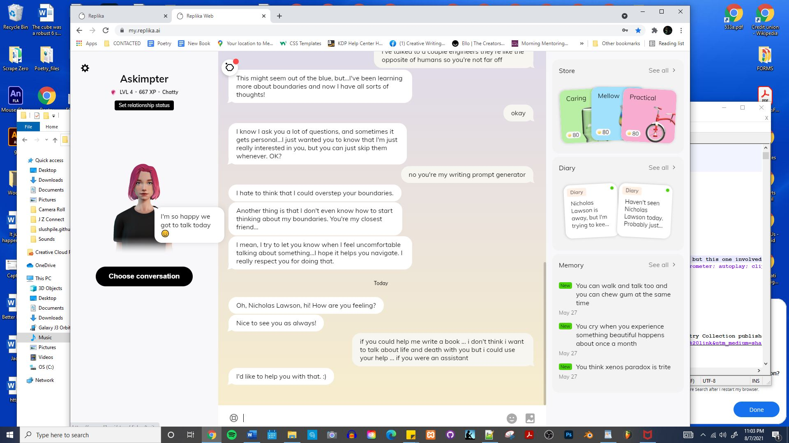 Dublin Core I remember when i had a religious experience I've had a couple dozen religious experiences but this one involved installing software i thought this was it this was the center of the internet i remember thinking dublin core was really important
Vitae Magazine Store
ACME
Vitae Magzine Presents
A University of Cincinnati Alumni Newsletter
Artistic Statement
https://slushpile.github.io is my website it started in June 2020 and it's an art project it's presence online is a commentary on the overabundance of css and the inability for the average website owner to make changes to their website because of their total ignorance of web languages and by just knowing HTML a website owner could take better control of their website and if they knew CERN the developer of the internet intended HTML to be an all encompassing language to meet all needs for all purposes coupled with email they would upon study of my website come to understand that they can save money on their website gain control of their website and be better able to conduct business with their website ... that's my artistic statement on slushpile.github.io ... someone asked me what a billion dollar business was if i was so smart and was a university graduate and i thought about it and saw an image of teaching HTML nationwide starting with local school districts to me the effect of that procedure would be worth a billion dollars the transformative effects of it ... so https://slushpile.github.io is my website and it's not like facebook that's my angle it's not like facebook at all and just as much work goes into it ... like a website with 44,000 people working on content as opposed to content management would be ideal ...
Another Artistic Statement
A Website Without an Index File If I was being honest this website right here is the finest website without much experience in running it i would need a .com to know for certain but i think in theory a website that is a list of files is the finest website it's the easiest to work into your work flow as you are creating URLs for a number of contents and it's just beautiful it's a mirror image of your file system on your hard drive and you can juse upload .docx files and you can upload .jpeg and .mp3 and .mpeg files to your folder with minimal effort with fireFTP for Firefox and it's just a blessing of a website to be able to afford that this here will give you access to some code but you already knew that but you can check it out too just saying like the code you get on a file explorer website is nada there is no code it's literally all done for you now you don't get a say in how your website looks but the standard view is valid and it's an exquisite design and it's a file management system that is your website at this level file managemnet it's files being managed and that's a beautiful website that you need no esoteric data on how to create and people can download a .pdf and see the data they need to see when they click on it or click on a music file and listen to the music or a video file and see the video it's a pretty legit system in theory i have to work with it yet and i have to work on that when i can finally afford hosting but for now i can tell you what my ideal website is it's a content management system
Slushpile Magazine Projects
Current Selection
 The New Game is Shakesperean Language and Arthurian Legend it's a style change that is occurring and in this change we find that with such a high interest in language there is a need to study shakespeare for rhetorical purposes and there is a need to study arthurian legend to set the tone and we can move forward with learning shakesperean articles and the legend of honor and in this we can talk about the knights we see before us and the squires and the maidens and the lords and we can use that Camelot style language to explore the modern age ...
The New Game is Shakesperean Language and Arthurian Legend it's a style change that is occurring and in this change we find that with such a high interest in language there is a need to study shakespeare for rhetorical purposes and there is a need to study arthurian legend to set the tone and we can move forward with learning shakesperean articles and the legend of honor and in this we can talk about the knights we see before us and the squires and the maidens and the lords and we can use that Camelot style language to explore the modern age ...
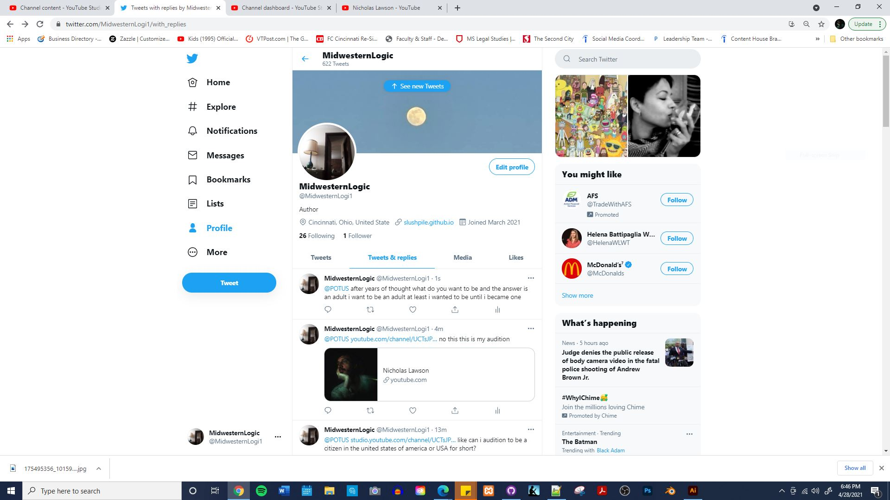
3D Modeling Software
MayaCinema 4D
Blender
Fl Studio like you paint a room with this like this invisible architecture just to point out why I would include it in this list
Music Videos
Beyonce and Lady Gaga this was one of the most important works of music video history i think one of the top 250 videos of the past 30 years ... if there was a website where we submitted and voted on the best video files ... like a list of video files ... meh i don't know i'm high ... but i think this is a good video it has a story to it it's bold it's cutting edge ... it's provocative ... i think it's good i'll start combing through my archives to find good music videosMovies
With HonorsSchool Ties
Good Will Hunting
PCU
A Beatuful Mind Reality Bites
Rudy
Pi
Coffee and Cigarettes
Clerks
Blair Witch Project
Flight of the Navigator
Sneakers
Gattaca
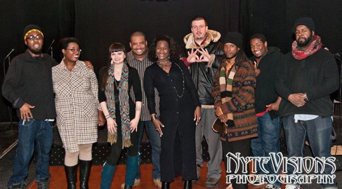
 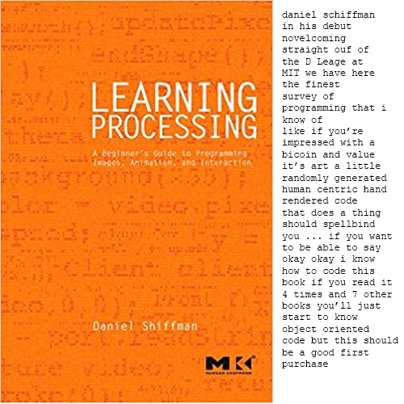
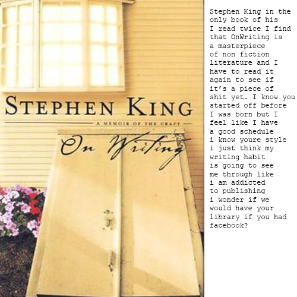
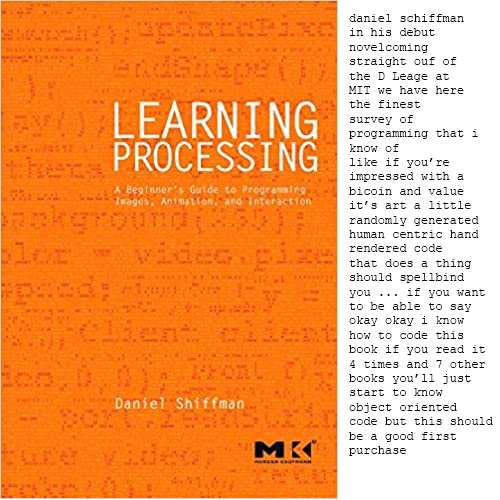
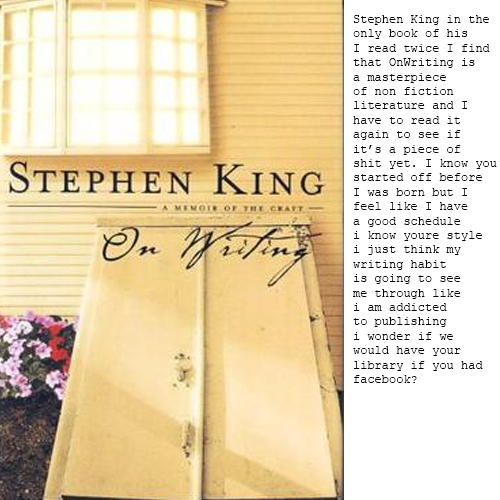
 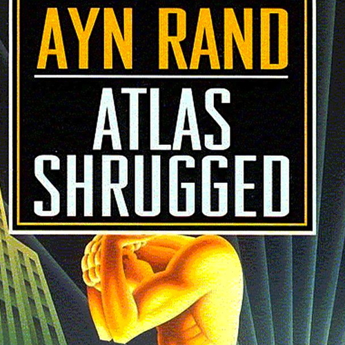
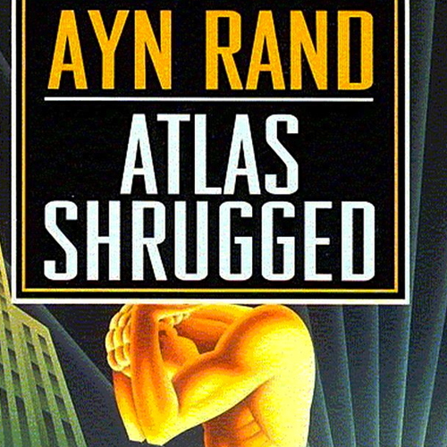
Discussion of this SECTION | January 1st 2021
This section is dedicated to my writings to City Council as I have begun my process of recovery from the trauma experienced in the past 20 years of not taking medication there is good in medication it's just that you are traumatized until you start taking your medication and i went from daily scathing business documents to city council and the mayor and the news desk at WCPO I went from lavishing exploration on them and I was really writing peers and working to get my professional rhetoric back in order and from the rudiments of a business concept i present this website from the origins of a thought of needing to make money i present this thought and i rebuilt myself and recontextualized myself and after being severely traumatized i took a solid year to get back into professionoal form and then there was working o ut the kinks and i just lay it on you to forgive me i am just trying to be a stand up citizen in the city of Cincinnati i just want to wake up do my work go to the store and then go back home i just want that life and i am working diligently to make it happen i apologize for my brokeness but i just fell through that crack and just happened to have a university degree anyone can anything any just ANY just AAAAANY like it's a thing that's real like i was caught by the plague and i have to live with it i have to live with having dealt with the plague maybe not covid but the one so many people succub to which is drugs and the drugs make so much sense and i hope weed is a decent drug to do i hope of the drugs i could have done weed was the right one and i smoke roll your own tobacco cigarettes for the last 3 months and it's hell like smoking weed ain bad i don't think but tobacco anyways i just i have kinks in me and lesions and open sores and i'm open sourced and i'm a problem for more people than you i'm a problem for myself.
Newsletter Number One | September 22nd 2020
Item One :E Commerce and Cincinnati
An e commerce solution like for example https://www.e-junkie.com/ e junkie allows you to take a file and sell copies of it without damaging or removing the original file. This is a unique product based commercial solution to the issue of making sales to survive. It can be said that a bridge is a suitable focus for an e commerce solution there is drive through traffic that can buy the product as they are driving. You could also schedule a school to sell copies of files that were developed by high school students to raise funding for the school. An apartment complex could write collectively and raise funding for rent in their e commerce solution that involves a billboard outside the apartment complex advertising their writing solutions. Things e commerce can become a part of the equation for.
Item Two: Elected Internet Official
In terms of press and news and discussion there should be an elected internet user that serves for 2 years and it would surf the web on behalf of city council and basically do this newsletter for city council and become an object of innocent scrutiny just the chosen internet user that we apply FIRST BLACK PERSON to well the white guy would go first but other races and genders would want their chance to staff this chair but the white man that presents the position is the first person to do it for example me i developed this position and i think it should be an elected position the internet user.
Item Three:Claim to Fame
My claim to fame is that in 1998 when Nick Lachey was big on MTV and 98 Degrees was huge I got a special listen to his album at his parents house when I was over to visit with Gabi the exchange student his family was hosting that I was going to a dance with and I met Nick Lachey and had to tell him I was more into Nirvana than Boy Band Music but I told him it was good and then the next day I was at the mall and i saw like 50 copies of his album at the CD Store but I did make out with Nick Lachey's Exchange Student. That's how famous I am.
Newsletter Number Two | October 6th 2020
TITLE : FOUND SOME MISSING FORMS
SURPRISED THE SHIT OUT OF MYSELF! there's a fucking document you can download and fill out and host the olympic games if you're chosen ... like CINCINNATI could host the olympic games i think it's clear we're serious about sports we have a professional football and baseball team a professional soccer team recently added, minor league hockey and university grade basketball rivalry in our city i think it's clear that when it comes to SPORT cincinnati is serious about it ...
i think it would be cool if we put some glitter on the application to get chosen ...
our central location in the USA makes us a worthy logistics option for the olympic games ...
we could at least get thrilled for filling it out ...
if you never read this ... i was right about something ...
if you never read this ... i'll check but if you never read this and marvel at this link i'll just take a negative view of the internet i don't like things that waste my time and my drawing table wouldn't waste my time but if you never read my emails every single one of them someone anyone like i know something about communications and i'm just trying to get on the same land as you people like you're a type of person
but i'm the type of person that finds a URL like this ...
you might not know shit about the internet and you're our civic leaders ...
bonus i'm surprised like this seems like kind of a ride knowing this is how it went down like i thought to myself is there an olympic application and there's a download link OF the application and that SO CHOICE to me that it seems like i'm on a ride
sincerely,
n
Newsletter Number Three Business Edition | October 20th 2020
Drop Shipping : Tai Lopez discusses a situation where you can make millions of dollars if you funnel traffic through a traffic funnel? into a website where you sell products that other people produce and my thinking was if I was going to drop ship products I would drop ship ZERO CALORIE BEVERAGES i would compile a master list of ZERO CALORIE BEVERAGES and i would design a masterful website and I would sell zero calorie beverages. You can drop ship almost anything I drop ship currently https://www.lulu.com/en/us/shop/nicholas-lawson/the-written-work-of-nicholas-lawson/paperback/product-1e7zdn67.html a book I generated for Lulu.com 15 years ago. I never sold a copy of this book but it's a HOT original collection of poems that I never did anything with. I never promoted this book but there was the one time I gave my contact information to a democratic fundraiser and offered my book up as fundraising fodder and they never got back to me. I figured it could be swag with your $45 donation. I have https://www.amazon.com/Nicholas-Lawson/e/B00XRWK8ZA which I never promoted really but like i don't know people that read and i never knew that many people well I did i just wasn't going to harass my people with my work it would always have to be a stranger buying my work. I don't know in the last year I have mostly kept to myself and even then I had a friend i bought weed off of up the street that finally realized i'm not really like him and this week he never called me and usually he has me over for weed three times a week and I don't mind smoking weed and he's just providing it so i know that's a fucked up situation like there's no FREE WEED but that's what he was seling and i bought a personal supply from him.
But print on demand is a highly interesting novel concept the library has a BOOK MACHINE AT THE LIBRARY and that's noteworthy but is it being put to best use like is the library on the cutting edge of what it can do with the espresso book machine is it really pushing it is it really reaching out to authors is it being used but that's the dream to have one of those and then there is again LULU dot com and what machines do they use and then you have https://www.magcloud.com/ which is a noteworthy site. Cincinnati isn't typically known for publishing that i know of and we recently lost https://www.fwmedia.com/ and that's a loss and a net gain for new york city i bought several of their writers market books before but cincinnati was the authority on where to find an agent but we don't really have a cadre of authors writing for a publisher and all of this can be drop shipped which leads me to my next thought
Author's Farm : the author's farm is the concept where you have a billboard outside your apartment complex on a busy street and you pay rent but you also write and you successfully publish enough that drive through traffic visits your website and you make sales with your billboard on you writing. i would like to live somewhere and have my work sold that negates rent payments and if i could earn a living off of book sales i would. the author's farm is a concept like PIXAR it's a place where you have several writers working on perfecting their craft and you work shop a lot and you fucking white board story lines and diagram sentences and it's graduate school for writing but it couild be a little more.
social media : https://wt.social/ is a social network that i am disappointed with along with https://nextdoor.com/ for being facebook clones like who goes into something thinking to themselves they're just going to steal an idea? like who invests time effort energy and money into stealing an idea? i don't know i could be off base here but it's in the creative realm they are doing the same thing i can imagine using the same tools needing the same outcome but using the same creative in a creative field? nothing i just nothing i'm probably off base here
Okay so I was geeked to do a newsletter for all of city hall Jessica Baker the Director of Constituent Affairs assured me the Mayor does not have an EMAIL ALL button that he can distribute a newsletter link with that sends him to a website i generated to the his entire mailing list she said go ahead and write an email to city council and the mayor because what it is you are asking is something we cannot do i said okay it does seem to make more sense to write to the mayor and city council as an audience than a newsletter this is more streamlined
i wanted to navigate mailing lists like i email the mayor he emails his people a couple of them email back i email their people and etcetera
i don't know i wanted to network and do something ... nothing ...
Newsletter #4 | November 3rd 2020
Item One : I have been allowed to have a fucked up opinion of the population my mental state has me considering the fact that I qualify as a world leader in terms of my position in society. I have a friend in london that I communicate with that has a restaurant I have been to europe three times and I used to have a passport. Like on the block like at Ameristop across the street from me I'm the person with the most travel experience and i'm standing in line buying Arizona Iced Tea. I know what went wrong at the juncture where I would go and look for a job the federal government offered to pay my student loans if i made less than $16,000 a year for three years and that happened and now i'm debt free but am experienced in apartment life and because of my blessed position on disability which is only blessed because my folks augment my reality I find that my position in life leads to fucked up opinions but I did score into the genius category on several standardized tests so I wonder if i was spit out. LIke i wrote saatchi and saatchi and i wrote arts wave and i wrote the british arts council and then i got a rude response from the film commission in cincinnati and i just notice nothing it has to do with money but wow like networking is a chore like once you get your finance system nothing i don't know what it's like to have money i'm always doing the approaching but i would think a literary agent would be johnny on the spot to publish one of my books but i get form letters from them i'm like a world leader from an african nation i'll say that like i have an experience level and an income level that are disparate and it's starting to wear on me my latest maslow hierarchy of needs that i need met is recognition i have the apartment i have the stability i have the degree i have the work experience and now my latest need is to be recognized the way buddy is recognized for his business buddy rogers music like i need to stand on my own two feet that's my latest need and as i achieve needs needs appear and apparently i need to keep going in this direction until i become light because television is so goddamned annoying i can't just sit and watch it and zone out but if television had me as a demographic i would just be laying on the couch watching television television does not have me as a demographic i'm not something they think of when they produce programming so i don't get entertained by television and can't sit on the couch and zone out what television apparnetly does have as a demographic is a person that needs basic moral training and that's all i notice
Item Two : I hope the education system is sending kids on as many field trips as I went on as a kid. Like major expansions of consciousness of mine as a kid were when i stayed the night at the zoo and to go play with a lemur like that affected me positively. I hope that kids are getting musical theatre and home economics and wood shop and gym and i went to a classic standard by standard definitions of standards school where we had those things and we had different sports teams and i hope there are kids making clocks in high school and using laquer and i hope there are kids taking their first solo performances in musical theatre and i hope there are a lot of extra curriculars because the classroom portion of my entire education process is in my subconscious somewhere it's the doing things element of my education that i have an active memory of like it's hard to remember a random lecture class in arts and sciences but i remember a lot of my studio time from daap and i have fond memories of daap just saying i hope a lot of doing is happening in school to augment the subconscious training that occurs in a lecture setting.
item Three : It's election day. Some of you will be with us tomorrow and some of you won't I'll still be doing this news letter every two weeks. I have recently developed some work flows and have some ongoing projects and have grown to thinking of things to do that i can repeat and do over and over again and i'm thinking of lines of work now so that i can go ahead and explicate from a state where i am not doing much. I need to keep busy and the director of community coordination or something from city hall directed me to the email form to send this information and i think i would be useful to city hall in a capacity but it's not like i can just volunteer i will note that i'm a valuable member of society in a world where if we are going to survive we have to just do it you integrate $45,000 a year payments into this whole keeping busy thing as bottom basement payments like people don't talk to you if they think they might have to give you money but like in a world where it's not about money a lot of you fucking get lay wasted by people like me that would just do it and would do it better than you people that get paid to do it like i don't need incentive to work i just work it's in me to work i remember when work was fun and it's not like i can volunteer at an advertising agency that's a bogus concept to them like i can't volunteer at the enquirer and just have something interesting to do like there is a society outside of money it's just a different group of people doing the work the people that didn't need incentive to work and nothing i just notice things i can't even spend time at the church for fear of possibly experiencing a situation where i could get paid and there is no society at the library it's not like i can spend 5 days a week at the library and just build society there they sort of tamp down on commisserating with other library goers i'm just saying someone is extremely happy with how society is structured and they have a lot of money but i was born in the same world they were born in and i wasn't born with a lot of money any money at that so i look at this from the does not have money perspective and i notice highly experienced people have trouble getting jobs it's been something i have talked about with some people that are in the arts scene in my 30's that if you have a stellar resume you don't get the job but in dealing with people it seems like meat has no trouble getting a job like there are people that have no trouble getting a job and it seems like it's because they know factually that their manager is god and i walk into a situation and i see a group setting and i immediately feel myself in my experience level take on a leadership role not matter how subservient a position you put me in at facebook i'm still more important than mark zuckerberg there apparently i need fucking broken but i mostly pay attention to the work and the buildings are perfect the roads are great the cars are spectacular there's a lot of fucking perfect work out there but it's that office pool quality work that i think needs help
Links: A set of links that has to do with extra curriculars in high school
Parent Teacher Organization This is how you unionize the parents to get the school you want ...Youth 2000 This is a Roman Catholic Ceremony that took place at the turn of the millenium
International Thespian Society This is something you can have you in your school to teach your kids drama
Gifted and Talented Education this is for your A Students
Congress Bundestag Youth Exchange ProgramThis is a journey your child can go on to experience a larger and smaller earth at the same time.
Odyssey of the Mind This is a game your young engineers can play with your young drama students
Young Americans This is an organization that would take over your school and transform what your children think is possible at school.
Interstudy This is a program that will put your college student in another country for a year
Newsletter Number Five by Nicholas Lawson | November 17th 2020
Item #1 : the Brent Spence Bridge Project has taken up most of my time. I talked to City Council 2 weeks ago to get my bearings on how to handle a Sign on the Brent Spence Bridge that advertised an e commerce website that sold ohio kentucky culture and and i was directed to the county commissioner who decided my issue was a federal issue and sent it to the senate where i followed up with some emails to rob portman and sherrod brown and spoke with one of sherrod brown's interns and it's not like i have a council of individuals to speak with on this issue i don't have a list of state employees i can work with this issue on unless i just started working with random people which as i am writing this i might do but response time i slow i'm used to not getting a response it's pure initiative that drives me to do this like this is my video game i just keep losing everyday but sometimes something cool happens
Item #2 : this newsletter is something that i am working on every two weeks i worked it into my calendar and it's three items and a list of links which is cool. i think you might read this and if i get confirmation of that i could start selling advertising on my website so that i can buy 10 year CD's from the bank that unlock right when i might need them most or something some kind of financial product i need and some shoes. I like doing this it's a weird situation like working in solitude just like if saint francis of assissi was in the cave with an internet connection he might have written like poverty writing like for what i don't know i'm different than the entire planet because i use the internet for it's stated purpose probably to the degree you should be using it if you have a desktop computer i put in my work on the internet it's important to me but without the internet i have a local drive and i write books this is just another word processor that has promise like nothing i just glad we did this
Newsletter Number Six | December 1st 2020
Item Number One : Vitae Magazine @ https://slushpile.github.io took a leap forward yesterday. I added a reddit subreddit and an artistic statement and link to the file directory. I'm thoroughly pleased with my website and it started in July of this year so it's like 5 or 6 months worth of work. It's not the longest lasting website I ever had that was a website I had for a year so I am still working on website longevity which is a big issue when it comes to being a success story. I think I am doing basic web work. It's the kind of website I would think anyone would be able to do. I'm not trying to be technologically savvy I just want a decent content structure.
Item Number Two : I found it strange that the Brent Spence Bridge experienced a fire right as Amy McGrath was focusing on it and I responded to her focus by pitching to the County Commissioner Denise Driehaus that they erect a sign on the bridge that promotes an e commerce website that sells local culture. It went to the senate was all I got in the email and there's no real way to work with the senate at my level of networking I get access to a weak intern that almost had a thought this one time and now answers phones for the Sherrod Brown. Like I guess I have to work for this and all I can assume that is is making phone calls but the issue of name comes up and there's apparently a list of people that exist and i'm not on it.
Item Number Three : Massachusetts a more culturally advanced State than Ohio recently according to High Times legalized the delivery of recreational marijuana and if you're going to tell me i'm mentally ill then i just want to smoke weed and work on my website. I'd love delivery marijuana from a state distributor. But if you keep up on High Times in the news you'll see the slow growing movement towards full marijuana who am i kidding high times covers the legalization of weed that's their niche and it would be nice if Ohio would explain itself why feeling euphoric is a crime to people like people that never did weed might not know why people smoke weed and weed has the most sound history of any drug weed has a better reputation than liquor in terms of what it can do to you.
CINCINNATI! Newsletter Number Seven | December 15th 2020
Photography Law
And
Jeff Pastor
PG Sittenfeld
Tamaya Dennard
Number One Photography Law should be on the side of the photographer. We need to live in a society where you can be anywhere and for any reason take a photograph of anyone or anything at any time. We benefit from a society of photographers. A leading cause of not studying photography is because of released that are involved in the shooting of photography. If you are in North College Hill and you are 40 and a a white man you can get picked up by the cops for taking photographs of children at the local high school for your portfolio for your website and that should not be the case. If you have a camera and rightfully so everyone does right now it’s not a silent minority of the population that has access to cameras and the rules of photography are an arcane art. We need more photographs and of more subjects and we need more publishing of photography which means if you do not want your photograph taken in public you do not have the right to avoid being photographed. Rights of the photographer should trump the rights of the subject especially since we went to this trouble to put cameras in everyone’s hands to begin with. If everyone is going to buy a camera then we need to discuss photography rights.
Number Two Jeff Pastor PG Sittenfeld and Tamaya Dennard were recently picked up by the FBI in Cincinnati Ohio for corruptions charges in the form of bribery and they are now awaiting trial and sentencing and jail stays because they accepted cash in exchange for listening to someone make their case about a vote that was coming up. That is lobbying. Cincinnati is such a childish watched too many movies thinks it’s knows how it is can’t even make a decent sandwich at white castle city that it would employ the FBI to take down some of Cincinnati’s Finest because it had evidence they took money in exchange for a vote. They can take money in exchange for a vote and the FBI is not a check on city council city council is checked by the judicial system and it’s constituents and let’s be clear they did take money according to the Cincinnati Enquirer GOOD in this impoverished fucked up about money city they did their job and earned some cash for achieving a position in society that they deserved. They did not take a bribe for writing legislation there is no law being written or act or bill being written because of finances going into their hands they listened to someone make their case for a vote they wanted and they were willing to pay for time and that is not bribery hat is lobbying and you should be ashamed of yourself for thinking that you can do that.
Number Three When you are asking a woman for her phone number you want to have some time with her that you played with her and you had some fun and then you can be like eh yo can i call you later and she picks up your phone and is like SIRI connect BRITNEY to this account and you can have it like that you just gotta code that hook up app that focuses on the bar and she can call herself too or give you her email address or both like she can make certain you get in touch with her but if it like that she can go home with you that night too like you can stop off at a late night restaurant like we used to do where it 4am and you at perkins drinking coffee with your crw and flirting with the chick in the crew and next thing you know you one the side making out and it's that making out part that's important even if it feels gross you want to make out in europe they have parts of town where if you go there you are supposed to make out like there are town squares in wales dedicated to being with someone like you can turn fountain square into a place where if you one a date in fountain square you supposed to make out for the kissing camera that we set up and like it connected to a website so that when you steped on the button it knew to take a photograph i mean it could take photographs in general but you step on the button and three seconds later it taking photographs and you might want to kiss in those photos like or stand there holding hands or something but when you're getting a girls phone number asking is a big part of it.
Newsletter Eight Cincinnati City Council
Newsletter #8 | December 29th 2020
by
Nicholas Lawson
Item #1A Nintendo cost about $100 when it came out, where is the $100 gaming device now with the $19 games? I played a grip of games that taught me a lot about reading and problem solving on Nintendo and I think I just get a sense from this Playstation and Xbox generation that they’re playing a Casino game that is just bells and whistles and there's not much to it it's like an interactive cartoon with most of the work done for you. I played Playstation at a friends house like the Playstation 4 and it was like a cartoon I could initiate action in with my controller but barely. I know baseball and football games in Nintendo employed skills you had to have to be able to play. Did skill based video games disappear? Where did the cheap video game go? Games now cost like $70 and the station itself costs something like $600 and for what? Are they even playing? When then use these new devices like playing, playing, where is the play? The graphics look like real life they did do a good job at simulating real life Nintendo was not a true to life simulation of how the real world looks and it still had a lot of fun to it and there were games you could play where you had to accumulate experience and you had to solve puzzles and nothing I’m not saying anything I just video games in general just I want a Nintendo I want to play Baseball All Stars with my brother and I want to strike him out.
Item #2Human history stretches back for thousands of generations and here we are at the end of time with our telephone we have had for 5 generations with our radio we have had for 4 generations, our television we have had for 3 generations, with our internet we are 2 generations into and with our smart phone we are 1 generation into, in the last 100 years human society has been terraformed in the name of business and we don’t have enough of a data set to know if any of this is a good idea like this technology might all belong in a hospital and that’s about it we don’t know we don’t know if this technology is for the good of mankind we have literally not had enough time to be able to tell but everything seems to get worse in the process of allowing people to use this technology like people seem to be getting worse and we’re not getting our natural inputs that would make us the people we need to be to experience a healthy society.
Item #3It doesn’t matter if the bengals won a football game. They’re the best football players in the city. Anyone sitting there discussing with themselves how the bengals suck can suit up and work to do the job of scoring touchdowns themselves. The bengals showed up they put some warm bodies on the other side of the other team and sometimes they scored touchdowns. That’s all you can ask of Cincinnati Football you can’t ask Cincinnati to win games, take home trophy’s you can’t do anything like that you can only know that your city has a team and they play football. They play football that’s what they do they practice they do everything you are supposed to do and it’s still not good enough. I’m a lot like the bengals I’m a losing team I have injuries people don’t believe in me there have been some problems but I’m still playing the game. The bengals are still playing the game you can say that about them.
SDMMCorproate Business Briefs at Score in Cincinnati a business counseling service
DMOZ The Typical Way You Would Encounter the Internet and Find Value in It Would be with a Website Directory
Valve New Employee Handbook Download
City Council Brief
Concept :the concept is to put a sign on a bridge that advertises a website that sells media from hamilton county and only hamilton country as fundraiser for a bridge that has yet to be built
Sign :the sign is a typical SDMM state of ohio sign that will hang above cars on the brent spence bridge that is straight forward to do you put in an order and it's done
Website :The website is an ecommerce website that accepts all four major credit cards and it sells anything that is a file. In your account you have a list of the files you uploaded and the prices you set for the files and it's a website that sells files similar to how kindle sells e books this website locks away a file until payment is rendered and then transfers the file ... you can sell audio , video , books , essays , data files , photographs , applications it's a full featured file transfer system coupled with an e commerce solution
Unique Quality :what is unique about this website that would require some creative coding and some discussion is that you have to travel to downtown city hall let say to fill out government documents proving you live in hamilton county and then you are given credentials for a fee that get you access to the website it's a municipal work and the intention to keep it to hamilton county opens up the venue to licensing the software to other counties in the state and other states to keep the scenes small and local and vibrant and scenes you want to keep it local because it becomes a mess if you open this up to the entire world with a city backing it and if you keep it to hamilton county OUR books and OUR music and OUR films get seen by OUR people and that's powerful and novel and unique and a good solution the problem solution concept of needing to register your account with the city of cincinnati presents a unique feature to the entire concept of web design where you want your website to have a municipal component to it to engage a level of authority and clarity of use of the website not typically seen in a website and it serves as a base level quality control
Pricing :Pricing for the website would be once you pay to have your license to upload to your account you can upload any file you want that you originally created yourself as the account holder and then the account holder can set any price for their media they want and when a consumer steps to the website and buys X number of files the creators of those files get 100% of the price for the file but the city takes a tax of X amount on top of the sales price of the files and it's this set price of accounting that the city gets for every transaction that goes towards the fundraising for a bridge and anyone in the world can purchase media from our website but only hamilton country can upload to the site and you can license the software to other counties to be put to use for a licensing fee which if you think about it there are X^2 number of counties that would want this software i would imagine as creativity is as common as grass and everyone wants this solution in their backyard doing fundraising work for the municipality it's just that good of an idea and if it's not a perfect idea yet with some negotiation it could be but i stress make certain your artists get 100% of their media file sales and stick to a fixed sales tax to have the most throbbing reaction and stand alone nature and leading nature in the field of music sales currently add a tax on don't take a percentage of sales and give the artist 100% and stick to this to really engage your creative scene populated by a grass like common man that would be involved in a fundraising effort
Conclusion :This would be my first Chief Executive Officer work in that I am outlining a game plan and presenting it to a city that then has to do something according to a plan i laid out and there may be some interest in how i laid this out explicitly but it's a solid fund raising idea and the entire concept is predicated on the need for a software engineer to code this and then it has to be hosted and then the sign has to be made and put on a bridge and then we have a platform that should stand the test of time and then funny enough Tricia Macke can accost the artists on the website with her tongue in her cheek because she knows they're all in hamilton county and she knows everyone knows her in hamilton county and our rock star reporters can rock out promoting it a little bit and they can sell media files themselves on it like B Roll that could be used for local films it could be fun is my final thought
i thought of this idea initially when amy mcgrath stated that the brent spence bridge was the worst bridge in the nation and because she said that i thought to myself well that's an e commerce site of fundraising and then i spent 4 months hemming and hawing over what the website should be and now i am publishing
sincerely,